Projecting teacher requirements in mainland Portugal, 2025-2040
1 Framing
1.1 The public policy problem
The Portuguese school system is passing through two demographic transitions at once, and they push in opposite directions. On the demand side, the fall in births works its way through the cycles of schooling with a predictable lag, reducing enrolment first in pre-school and the first cycle and then, in sequence, at the levels above. On the supply side, the teaching workforce is concentrated in the upper age brackets, the result of a long period of low recruitment that interrupted generational renewal and shifted the mass of the age distribution beyond fifty. The first transition lowers the number of teaching posts the system requires. The second obliges it to replace a growing share of the people who occupy them. The balance between the two is not obvious in advance, and it is the object of this exercise.
The intuition that fewer pupils means fewer teachers fails here for a reason that the most recent official projection makes explicit. Nunes et al. (2025) project total enrolment in mainland public schools falling to 1,078,353 pupils in 2034/35, a reduction of five per cent against 2025/26, while the number of teachers active in 2024/25 who remain in service falls from 121,884 to 76,293 over the same horizon, a reduction of thirty-seven per cent. Recruitment requirements rise despite the fall in pupils, because the contraction on the supply side is an order of magnitude larger than the contraction on the demand side. Recruitment need is the difference between two quantities that are both falling, and the arithmetic is governed by the faster of the two. That asymmetry is what justifies modelling supply as an age cohort chain with endogenous exits, rather than treating it as a residual of projected enrolment.
The magnitudes involved are large relative to the existing workforce. The 2025 study puts the cumulative requirement at 38,779 new teachers to 2034/35 in its base scenario, or 38,084 after an adjustment for teachers who do not retire at the reference age, an average of 3,808 per year. The requirement peaks in the first year of the horizon, at 4,691 without the adjustment and 3,996 with it, falls to 3,338 in 2026/27, rises to a secondary peak of 4,122 in 2030/31, and then eases. Its distribution across levels of education is uneven. The combined third cycle and secondary group carries the largest absolute requirement at 20,606 teachers, followed by the second cycle at 6,407, the first cycle at 5,190 and pre-school education at 4,053. Measured against the stock in service in 2024/25 the ordering reverses, with pre-school education showing the highest relative requirement at forty-three per cent and the second cycle at thirty-seven per cent. Pre-school education also faces the steepest proportional loss of staff over the horizon, at fifty-five per cent, against thirty-nine per cent in the third cycle and secondary, forty-two per cent in the second cycle and twenty-nine per cent in the first cycle.
Territorially, relative requirements are more similar across regions than absolute figures suggest. Cumulative recruitment to 2034/35 as a share of the 2024/25 stock ranges from twenty-seven per cent in the Algarve to thirty-four per cent in the Centro and the Lisbon Metropolitan Area at NUTS II level, and between twenty-two and thirty-eight per cent across NUTS III regions. In absolute terms the Norte leads with 13,381 teachers, followed by the Lisbon Metropolitan Area with 10,711 and the Centro with 9,656. At NUTS III level the two metropolitan areas dominate, with 10,711 in Lisbon and 6,062 in Porto.
The flow of qualified entrants bounds any recruitment path, and the evidence points to a constriction upstream. Drawing on the higher education enrolment and graduation register, the 2025 study reports 2,962 enrolments and 1,922 graduations in teacher training courses in 2020/21, 2,841 and 2,051 in 2021/22, and 3,276 and 2,141 in 2022/23. Graduations run at between sixty-five and seventy-two per cent of enrolments across the three years, which the authors read as evidence of substantial non-completion. Growth is concentrated in courses preparing teachers for the third cycle and secondary education, where enrolments rose from 961 to 1,316 and graduations from 646 to 842. Set against an average requirement of 3,808 new teachers per year, both enrolments and graduations fall short of projected needs in the aggregate and at every level of education.
Two points of definition follow from that comparison. The qualifying route to the profession runs through the masters in teaching listed in the study’s own annex, and the enrolment and graduation figures are filtered on that basis; degrees in basic education at first-cycle level do not by themselves confer professional qualification and should not be counted in the qualifying flow. And the shortfall between enrolments and graduations occurs before qualification, so it should not be applied a second time when converting graduates into placed teachers.
Two further pressures sit alongside the demographic ones, documented in the annual review of Portuguese education published by EDULOG (Figueiredo et al., 2025). The proportion of teachers aged fifty or above rose across all cycles between 2018/19 and 2022/23, reaching fifty-six per cent in pre-school education, alongside a share of fixed-term contracts that indicates turnover within an already ageing corps. Over the same period the composition of the pupil population changed quickly. Pupils of foreign nationality in mainland pre-university education more than doubled, raising their share from five to eleven per cent, with the largest increase among pupils from Portuguese-speaking countries, who rose from 52,157 in 2018/19 to 112,533 in 2022/23. The pressure falls unevenly and is heaviest in the first cycle, where foreign nationals exceeded thirteen per cent overall and in some municipalities more than a third of pupils. Retention and drop-out rates for pupils with two foreign parents run at more than three times the rate for pupils with Portuguese parents throughout basic and secondary education. Changes of this kind alter the staffing intensity required to deliver a given enrolment, a channel that pupil-teacher ratios estimated on historical data capture only with a lag.
1.2 Existing studies and what remains unanswered
Work on projecting teacher requirements falls into three strands that rarely speak to one another. The first is the official national projection, produced by or for education ministries, which answers an administrative question about how many teachers to recruit and where. The second is a methodological literature on flow and cohort models, concerned with how the accounting should be organised and which transitions deserve to be modelled explicitly. The third is a conceptual and empirical literature on what a teacher shortage is and at what level of aggregation the concept remains meaningful.
1.2.1 Official projections for Portugal
Two studies define the reference point. The 2021 exercise, prepared by the Centre for the Economics of Education at Nova SBE with the Directorate-General for Education and Science Statistics, projected recruitment requirements from 2021/22 to 2030/31 and found that roughly forty per cent of the teachers working in Portuguese public schools in 2018/19 would retire within the horizon (Nunes et al., 2021). It estimated average annual recruitment requirements of about 3,450 new teachers, rising to roughly 4,100 by 2030/31 (Nunes, Reis, Freitas and Conceição, 2022). Disaggregated by level, cumulative requirements to 2030/31 were 15,663 teachers for the combined third cycle and secondary group, 6,926 for the first cycle, 5,655 for the second cycle, 4,419 for pre-school education, and 1,845 for special education, Portuguese sign language and moral and religious education, a total close to 34,500. Across NUTS III regions, cumulative requirements as a share of the 2018/19 stock clustered between twenty-five and thirty-five per cent, with Tâmega e Sousa at nineteen per cent and Lezíria do Tejo at twenty-three per cent at the lower end, and Beira Baixa at thirty-six per cent and Terras de Trás-os-Montes at thirty-nine per cent at the upper end.
The 2025 update (Nunes et al., 2025) raises the cumulative figure to 38,779 and rebalances its composition, with the combined third cycle and secondary group rising to 20,606 while the first cycle falls to 5,190. Part of the revision follows from a shorter gap between the last year of data and the first year of projection: the 2025 teacher projections rest on the December 2024 census of teaching staff conducted by the Directorate-General for School Administration, which removed a lag that had affected the earlier exercise. Part follows from a different treatment of teaching hours, and part from a base year that already incorporates several cohorts of below-replacement births. Two studies five years apart, agreeing in their qualitative message and differing materially in magnitude and composition, give some indication of how much the answer depends on vintage.
One distinction should be settled before the figures are compared with anything else. Retirements and required entries are different quantities. In a contracting system the second is the first net of the reduction in posts, so a projection of retirements will exceed a projection of recruitment need by the amount of the contraction, and the two are routinely conflated in secondary reporting.
Three assumptions in the 2025 study condition the interpretation of any projection built on similar principles, including this one.
The first concerns retirement. The model assumes a single reference retirement age of sixty-seven for all teachers, chosen because the statutory age in 2026 and in the years to 2035 sits closest to that value on an annual projection grid. The authors are explicit that the simplification cuts both ways. At the end of 2024 there were 1,389 teachers aged sixty-seven or above still in service, whom the model retires immediately, while teachers who retire early are held in service too long. Using the education statistics for 2021/22 and 2022/23 they estimate continuity rates of sixty-five per cent from age sixty-five to sixty-six, fifty-five per cent from sixty-six to sixty-seven, fifty-five per cent from sixty-seven to sixty-eight, fifty per cent from sixty-eight to sixty-nine and fifteen per cent from sixty-nine to seventy, and apply a correction of 695 teachers to the 2025/26 projection. The correction is a level adjustment in a single year, and the authors describe it as approximate.
The second concerns the definition of demand. The projection converts pupils into classes, classes into teaching hours by subject through the curricular matrices, and teaching hours into recruitment groups. To this it adds the hours teachers spend on activities other than classroom teaching, by assuming that in 2024/25 the staff available in each unit matched the need, and holding the resulting ratio of required to available teaching hours constant across the horizon. Two alternative scenarios in which teachers’ classroom availability can be fully reallocated to classroom needs reduce the cumulative requirement to 16,474 and 15,579 teachers respectively, against 38,779 in the base case. Non-classroom activities therefore account for roughly six in every ten projected recruitments. Realising such a scenario would require substantial changes to how schools operate, which places the finding in the domain of organisational policy rather than demography.
The third concerns regional closure. Drawing on the qualifications recorded in the 2024/25 teacher census, the study finds that forty-two per cent of teachers holding a master’s degree obtained after 2013, 1,992 out of a sample of 4,597, teach in a NUTS II region different from the one in which they qualified. The pattern is asymmetric. Eighty-six per cent of teachers working in the Norte qualified there, against sixty-five per cent in the Lisbon Metropolitan Area, fifty-two per cent in the Centro, twenty-six per cent in the Alentejo and sixteen per cent in the Algarve. Regional projections of teacher requirements cannot be read as regional projections of teacher supply.
Both Portuguese studies share three features that matter for what follows. Teacher supply is projected by ageing the observed stock forward and applying a retirement rule, so the supply side is accounting rather than behaviour. Demand is anchored on an assumption that staffing observed in a base year matched the requirement, which imports the historical equilibrium, including any unfilled positions, into the projected requirement. And the flow of qualified graduates enters as a comparison at the end rather than as a constraint inside the model: the 2025 study reports enrolments and graduations, observes that both fall short of projected needs at every level, and stops there. The projection is therefore of requirements, and requirements coincide with outcomes only if recruitment is unconstrained.
Adjacent Portuguese work fills in parts of the picture without joining it up. Cavique, Pombinho, Tallón-Ballesteros and Correia (2020) work on the enrolment side, building a stochastic model of pupil flow from the same administrative source, with dropout, retention and progression as the three outcomes available to a pupil in each grade. Their treatment of the pupil pipeline has no counterpart on the teacher side in the Portuguese literature.
1.2.2 Flow models and the assumptions they require
The international methodological literature converges on a common accounting skeleton and disagrees about how much of it to populate. The most explicit recent statement is the model proposed by Bordón, Lara and Marotta (2025) for Latin America and the Caribbean, which defines a system of cells indexed by region, geographic zone, administrative dependency of the school, subject, gender and age, and projects each cell forward through the identity that teachers in situation \(s\) at time \(t\) equal teachers in that situation at \(t-1\), plus entries, minus exits. Entries have three sources: newly trained teachers beginning work, teachers who occupied a different cell in the previous year, and teachers who were outside the profession and returned. Exits decompose into movement to another teaching cell, movement to another function within education, movement to another sector, unemployment, and retirement. The authors are direct about the cost of that structure, observing that models of this family require numerous assumptions and that the assumptions themselves add uncertainty to the projections.
The earlier and more widely used reference is the projection model of the UNESCO Institute for Statistics, documented by Bruneforth, Gagnon and Wallet (2009) for primary education. That model works with a smaller set of moving parts: enrolment, a pupil-teacher ratio target, and an attrition rate. Its treatment of attrition is the part most relevant here. The technical paper sets out the relationship between attrition rates and the implied theoretical duration of a teaching career, and catalogues the factors associated with different attrition levels, which makes explicit something usually left implicit: a constant attrition rate is equivalent to an assumption about expected career length, and the two should be checked against each other. The paper also compares the underlying assumptions of the main teacher projection models then in use, which is the closest thing in this literature to a formal comparison of specifications.
Aaronson and Meckel (2009) take a different route, projecting requirements for new full-time public school teachers in the United States between 2009 and 2020 under varying assumptions about fertility, pupil-teacher ratios and turnover. Their headline range runs from 2.3 million to 4.5 million, with a preferred path of roughly 277,000 new teachers in 2009/10 rising to 303,000 by 2020/21, and retirements accounting for about a third of those leaving the workforce over the period. A factor of two between the low and high paths, generated by assumptions that each seemed reasonable, quantifies how much of the answer is imported rather than estimated, and it sits awkwardly beside the practice of reporting a single central figure.
Two further contributions address parts of the problem the main models leave aside. Langford (1986) works on secondary teacher forecasting with subject specialisation as the organising problem, arguing that aggregate secondary projections conceal the specialisms where recruitment actually binds, and proposing a subject-specialist planning methodology. Fiori Maccioni (2023) develops a stochastic Markov chain for estimating new entrants into professional orders and their pension funds, driven by the observation that trends in academic enrolment anticipate changes in the professional job market over the medium term and that fertility anticipates the stock of young adults over the long term. The structure is a direct analogue of the qualifying pipeline problem: a cohort passes through education, converts into the profession at a rate that is itself uncertain, and the conversion governs whether the stock can be maintained.
Reduced-form alternatives exist and are used. Xia (2025) forecasts demand for full-time teachers in China’s compulsory education using an ARIMA specification with enrolment, a target pupil-teacher ratio, the current stock and projected retirements, producing an estimate of 788,500 full-time teachers required by 2027. Approaches of this kind buy tractability at the cost of the age structure, which is the object that generates the retirement wave in an ageing corps, so they answer a different question from the cohort models even when they project the same quantity.
Lindsay, Wan, Berg-Jacobson, Walston and Redford (2017) approach the problem from the side of study design. Working with the Minnesota Department of Education, they redesigned an annual teacher supply and demand study around explicit research questions, having found the existing product to be an unfocused compilation of data summaries. Their review covers studies published between 1983 and 2012 and matches data sources and analytic methods to each question. In a field where the common defect is a report that never states which question each table answers, the procedural contribution has some weight.
1.2.3 What counts as a shortage
The conceptual literature is where the official projections are most exposed. The operational definition set out by Lindsay et al. (2017) is that a shortage occurs when the number of teachers available in a given grade, subject or geographic area is less than the number required there. The definition is difficult to apply, because supply and requirement are both unobserved at the level of disaggregation at which the shortage occurs.
Edwards, Kraft, Christian and Candelaria address this by measuring unfilled teaching positions at the start of the school year in Tennessee, in the autumn of 2019 and therefore before the pandemic. Less than two per cent of teaching positions in the state were vacant, a figure that would support the conclusion that Tennessee had no shortage. Those vacancies were concentrated in a quarter of the state’s schools, and at least seventy per cent of the variation in the share of unfilled positions occurred between schools within the same district rather than between districts or regions. Secondary schools accounted for seventy-three per cent of vacancies. Shortages and surpluses coexisted, and the aggregate concealed both. Among their predictors, historical attrition is the strongest: a one standard deviation increase in teacher turnover is associated with a sixty-seven per cent increase in the share of unfilled positions at a school, equivalent to one percentage point.
That finding constrains what a national or regional projection of requirements can claim. The quantity that binds is local and subject-specific, and aggregation averages a shortage in one cell against a surplus in another. The Portuguese studies disaggregate by recruitment group and by organic unit, which is the right granularity, but the comparison against the qualifying pipeline is made in the aggregate, where the offsetting occurs.
At European level, De Witte, De Cort and Gambi (2023) review interventions intended to alleviate teacher shortages and assess both the strength of the evidence and the expected effectiveness of each. For most interventions the evidence base is low-to-medium and the expected effectiveness is likewise low-to-medium. Targeted financial incentives are the exception, rated highly effective at medium cost for teachers in disadvantaged schools and hard-to-staff subjects, with evidence from Oslo that a retention premium of around ten per cent, forfeited on moving to a low-vacancy school, reduced the probability of voluntary quitting by approximately six percentage points. Incentives aimed at retired teachers or career switchers are judged less cost-effective on a thinner evidence base, which bears directly on any model that projects a lateral entry channel, because it concerns exactly the population such a channel draws on.
1.2.4 What the forecasting literature says about exercises of this kind
Two contributions from outside education research should condition expectations about what a sixteen-year projection can deliver.
Richardson and Tan (2007), writing for the Australian National Centre for Vocational Education Research, examine the accuracy of labour demand forecasting and conclude that accuracy falls rapidly as the projection horizon extends, as skills become more disaggregated, and as projections are made by region. Their assessment of the MONASH model, among the better models of its type, is that occupational projections are often out by ten or twenty per cent within a few years, and that over a nine-year period the direction of change was in some cases wrong, with growth projected where decline occurred. The three dimensions along which they find accuracy to deteriorate are the three dimensions on which teacher requirement projections are routinely published. Section 5 returns to that assessment at the point where the regional figures are produced.
Pathak and Shi (2014) address the evaluation problem rather than the accuracy problem. They observe that systematic comparisons of the ex ante counterfactual predictions of structural models against what subsequently occurred are rare, and they construct one by pre-registering forecasts of a school assignment reform in Boston before the outcome data existed, comparing a discrete choice model against a simpler statistical alternative and publishing the analysis plan in advance so that no post-analysis bias could enter. The methodological point transfers cleanly. Projections of teacher requirements are published, used, and superseded by the next vintage, and the published record contains almost no instance of a projection being scored against what happened.
1.2.5 What remains unanswered
Five questions survive this literature, and they define what the present exercise attempts.
The first is whether the projections perform out of sample. No published evaluation scores a Portuguese teacher projection against a holdout period, and the international literature contains very few such evaluations for any country. Any claim about accuracy should be supported by a hindcast that withholds recent years, re-estimates on the remainder, and reports performance against a no-change benchmark at the level of disaggregation at which the model is used, which for an ageing workforce means by age band and not only in aggregate.
The second is whether the qualifying pipeline binds. The Portuguese studies observe that graduations fall short of projected requirements and treat the observation as context. If the pipeline is a constraint, then the projected requirement overstates achievable recruitment, and the difference between the two is the quantity policy cares about. Turning the comparison into a constraint requires a conversion rate from qualified graduate to placed teacher, which is estimable from the ratio of entries to the graduate pool, and requires stating what that rate implies about the share of a cohort that ultimately enters teaching.
The third is whether the two entry routes should be modelled separately. New graduates and lateral or returning entrants are drawn from different populations, respond to different policy instruments, and face different constraints. Initial teacher education bounds the first and has no purchase on the second, which draws on a contracted reserve whose size is not measured in the Portuguese data. Applying a graduate constraint to total requirements sets a bound derived from one population against a requirement defined over two.
The fourth is how much of the answer is assumption. Aaronson and Meckel (2009) report a range spanning a factor of two; the Portuguese studies report central paths. The 2025 study does provide alternative scenarios, and the two that reallocate teaching availability reduce cumulative requirements from 38,779 to roughly 16,000, which is a statement about how much of the projection is organisational rather than demographic. That is a scenario analysis, and it does not answer which input the projection is most sensitive to, or what interval the result carries. Both questions are answerable by simulation over the parameters the model actually uses, provided the parameters are allowed to vary, including the inconvenient ones.
The fifth is the status of the pupil-teacher ratio. Converting enrolment into posts through a ratio estimated on history embeds the staffing that was observed, including positions that went unfilled. The 2025 study reaches the same place by assuming that available staff in 2024/25 matched the requirement in each unit. Neither approach separates the descriptive equilibrium from a normative target, and the distinction determines whether the projection describes the staffing the system would arrive at or the staffing a stated standard would require.
1.3 Contribution and scope
This report documents a projection chain for teacher requirements in mainland Portugal, disaggregated by NUTS III region and by schooling cycle, from 2025 to 2040. The mainland partition contains 24 NUTS III regions, and that partition is used throughout. The chain has six linked blocks: a projection of the school-age population and of enrolment; conversion of enrolment into teaching posts; projection of the teaching workforce through a cohort model with age-specific exit hazards; confrontation of the resulting recruitment requirement with the capacity of initial teacher education to supply it; quantification of uncertainty by simulation; and a transversal validation suite. Data contracts between blocks are defined explicitly. The whole exercise is built on published statistics and is released with the code that produced every figure and table, which places it on a different footing from the official projections, whose reliance on individual-level administrative records puts them beyond independent replication.
The first contribution is the separation between requirement and feasibility. The supply block ages the current workforce forward, applies exit hazards, and computes the recruitment that would restore the stock implied by enrolment. A second question is answered separately: whether the flow of qualified graduates is large enough to deliver those recruits. The two questions have different answers, and the distinction has practical consequences. A system can face a large requirement and still fill it, or face a modest requirement and fail to fill it, depending on the state of the qualifying pipeline. Keeping the blocks apart makes it possible to say which of the two binds in each year and in each entry channel.
The second contribution concerns how the projection method was chosen. The demand block rests on a ratio of students to teachers, and the behaviour of that ratio over the horizon is the single assumption that most affects the result. Rather than fixing the ratio by convention, ten candidate projection methods were compared in a rolling-origin backtest across four origins and four cell definitions, scored by mean absolute scaled error against the in-sample naive benchmark. The selected method differs by cell, and the tables report the margin by which it beats the benchmark, which in several cells is small. Where a sophisticated method barely improves on holding the last observation constant, the honest reading is that the ratio is close to flat and the added machinery buys little.
The third contribution is an explicit audit of the enrolment elasticity of teacher demand. The convention in the reference literature is strict proportionality, where a ten per cent fall in enrolment produces a ten per cent fall in teaching posts. Departing from that convention requires evidence against it, and the evidence has to survive the inferential problem created by having twenty-four regional clusters. Cluster-robust standard errors over-reject at that number of clusters, so the elasticity is tested with a wild cluster bootstrap using Rademacher weights and the null imposed. Two nulls are tested. The first asks whether any elasticity is detectable at all. The second asks whether the data reject proportionality, and it is the second that governs whether the elasticity-based method is admitted into the projection. A cell where proportionality cannot be rejected reverts to the conventional treatment, even when the point estimate lies away from one.
The fourth contribution is the split of the recruitment requirement between entry channels. Entry into teaching in Portugal occurs both from recent graduates of masters programmes in teaching and from older entrants drawn from the contracted reserve and from re-entry. The gap block applies the graduate constraint only to the channel the graduate pool actually governs, and models the second channel separately as a rate on the existing workforce. Netting the two channels against each other would allow a surplus in one to cancel a shortfall in the other, which the age profile underlying the split does not support, so results are reported per channel as well as in aggregate.
The fifth contribution is coverage. The reference study projects to 2034/35 and reports national and regional aggregates. This chain extends to 2040, which places the trough of the demographic decline and the subsequent partial recovery inside the projection window rather than beyond it, and reports results at NUTS III throughout.
The sixth contribution is procedural. Each block writes a manifest recording the parameters used, the checks that passed, the checks that were skipped because an input was missing, and the caveats that must travel with the numbers. Failed identities are printed rather than suppressed, and comparisons that are true by construction are labelled as such so they are not mistaken for validation.
1.3.1 Boundaries of the exercise
The requirement modelled here is for permanent teaching posts. It excludes the substitution reserve, the pool of contracted teachers who cover absences, sick leave and temporary vacancies during the school year. That component is not measured in any of the sources reviewed here and is not measured in what follows, so the levels reported are a floor on the effective requirement of the system in any year, and comparisons with figures that include substitution are not like for like. Section 7 quantifies the implied size of that omission.
Demand is derived from the observed ratio of students to teachers. That ratio is descriptive: it records the staffing that actually occurred, including any posts that went unfilled. If the system was short of teachers during the observation window, the observed ratio is biased upwards, and dividing projected enrolment by an upward-biased ratio understates the teachers required. The demand path carries that bias, and its direction is known even though its magnitude is not. No normative target ratio, whether derived from class-size policy or from an international benchmark, is imposed anywhere in the chain.
The projection is aggregated into four cells: pre-school, the first cycle, the second cycle, and the third cycle together with secondary education. These are referred to throughout as the four cells. The projection says nothing about individual subjects. The evidence on Portugal locates the shortage very unevenly across subjects, and a model that aggregates the third cycle and secondary education into a single cell cannot address that question. The results describe the size of the recruitment task rather than its composition within the upper cycles, and a subject-level extension would require a different data structure from the one used here.
Entry into the profession is treated as a rate applied to a pool. The rate is estimated from observed placements and projected forward under alternative rules, with the level anchored to an external estimate of the graduate entry flow. It contains no price mechanism. Salaries, the structure of the placement system, geographic mobility costs and working conditions all affect how many qualified graduates choose to teach and how long they stay, and all of them are policy instruments. The evidence reviewed by De Witte et al. (2023) confirms that these margins respond to incentives. Treating the conversion rate as a parameter rather than as a behavioural response means the projection cannot say what a salary change would do to the pipeline. It can say what happens if entry behaviour continues as observed, or moves to a stated alternative.
Regional results describe where the posts are, not where the teachers come from. Given the mobility documented in the 2025 study, no regional closure is assumed, and the regional figures should not be read as implying that each region must produce its own recruits. The reconciliation between the regional series and the national total is performed explicitly and its residual is diagnosed rather than absorbed silently.
Uncertainty is propagated through scenarios and not through a probability model. The report carries three demographic scenarios from the enrolment block, a band on the conversion rate derived from its recent dispersion, and alternative rules for the projection of that rate. These are deterministic paths, and the intervals they generate describe the spread across stated assumptions. They do not support probability statements, and they do not cover specification error, which in an exercise of this kind is likely to dominate parameter uncertainty. Where a band in this report is wide, that width comes from assumptions that were varied deliberately; where it is narrow, the reader should not conclude that the underlying quantity is well determined.
Two data questions constrain external comparison and are treated in Section 2 rather than here. The workforce universe in the panel used for this exercise differs in level from the universe used by the reference study, which covers 835 public organic units in mainland Portugal and excludes private schools, schools under association contracts, the autonomous regions and adult education and training. The difference is large enough to affect any comparison of levels. The territorial nomenclature in the panel also requires reconciliation before regional figures can be set beside published regional results. Both are stated as open rather than resolved, and every comparison with external benchmarks is reported twice, once raw and once adjusted for the perimeter difference.
The work is independent. It was produced by a single author from published sources, without a commission, and it represents no institution. Where its results diverge from the published reference study, the divergence is reported and its sources are traced as far as the available data allow, with no presumption that either estimate is correct.
The most consequential assumptions in the chain are the descriptive ratio in the demand block, the entry rate and its external anchor in the gap block, and the channel split inherited from the supply block, which determines how much of the total requirement the graduate constraint is allowed to bind on. A reader who disagrees with any of the three will reach a different answer, and the code is released so that the disagreement can be made precise.
2 Data
The projection chain rests on a single analytical panel indexed by NUTS III region and school year. That panel is assembled from published statistics by eleven scripts that run in a fixed order, each writing an intermediate file that the next reads. This section states which variables enter the chain and why, what the raw files required before they could be joined, and how each transformation was implemented. The transformations that leave no trace in the final file are given most space, because they are the ones a reader cannot audit from the output alone.
The organising principle follows Lindsay et al. (2017), who redesigned an annual teacher supply and demand study for the Minnesota Department of Education after finding the existing product to be an unfocused compilation of data summaries, and who match data elements and analytic methods to specific research questions rather than reporting whatever the administrative files happen to contain. Their review covers work published between 1983 and 2012. The same discipline is applied here: each variable is introduced by the question it answers in the chain, and variables that answer no question are not carried.
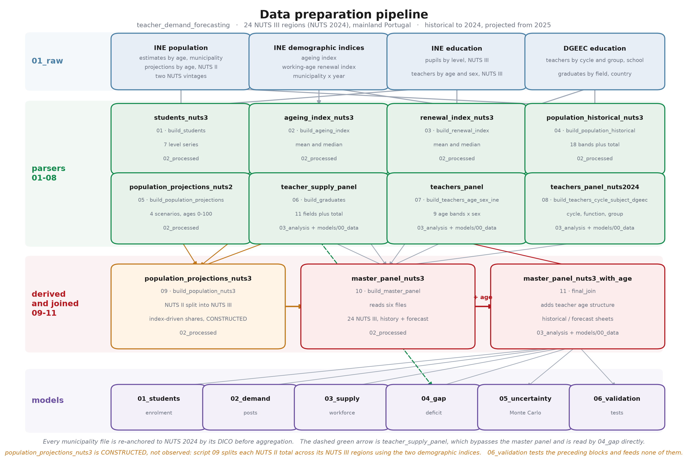
Figure 1 sets out the order in which the scripts run and which file each one writes. Claims in this section are stated at the level the code supports. Where a property of the panel follows from the parsers it is given as fact; where it is a property of the downloaded files rather than of the code, that is said explicitly.
2.1 Sources and what each contributes
Four institutions supply the raw material. The National Statistical Institute provides resident population by age and municipality, the two demographic indices, the age and sex structure of the teaching workforce, and population projections by scenario. The Directorate-General for Education and Science Statistics provides school-level teacher counts by cycle and recruitment group, and the higher education graduation register. The geographical unit of the published files varies between municipality, NUTS III and NUTS II, and reconciling those levels is the main task of the preparation layer.
| Source | Content | Published unit | Coverage | Script |
|---|---|---|---|---|
| INE, population estimates | Resident population, 18 five-year age bands plus total | Municipality | 2011-2025 | 04 |
| INE, ageing index | Population 65+ over population 0-14, times 100 | Municipality | 2011-2025 | 02 |
| INE, working-age renewal index | Population 20-29 over population 55-64, times 100 | Municipality | 2011-2025 | 03 |
| INE, population projections | Single-year ages 0 to 100, four scenarios | NUTS II | 2025-2100 | 05 |
| INE, teaching staff | Teachers by nine age bands and sex | NUTS III | school years | 07 |
| DGEEC, teachers | Teachers by cycle, function, nature and recruitment group | School | school years | 08 |
| DGEEC, graduates | Graduates by broad field of education | Country | 1996/97-2024/25 | 06 |
| INE, enrolment | Pupils by level of education | NUTS III | school years | 01 |
The panel covers 308 municipalities, which is the whole country including the autonomous regions, and the 24 mainland NUTS III regions once the panel is restricted to the mainland in script 10. Observed years run from 2011 to 2025 and projected years from 2026 to 2040.
2.2 The variables carried into the models
The chain uses four groups of variables, and each group answers a different question in the projection.
Enrolment by level of education is the driver of demand. Script 01 extracts seven series per region and year: a total plus pre-school, the three basic cycles, secondary and post-secondary education. The model layer works with the four cells, so the third cycle and secondary are combined downstream, and post-secondary is excluded by a configuration switch in the demand block rather than at source. Keeping the finer breakdown in the panel means the aggregation decision stays reversible.
Teacher counts enter through two independent channels because no single source carries both the dimensions the chain needs. Script 08 parses the DGEEC school-level files and aggregates to NUTS III with counts by cycle, by teaching and non-teaching function, by public and private nature, and by nine recruitment groups covering mathematics, Portuguese, English, history, geography, physics and chemistry, biology and geology, informatics and physical education. Script 07 parses the INE tables and produces the age structure in nine bands from under 25 to 60 and above, split by sex. The cycle breakdown is what the demand block divides enrolment into; the age structure is what the supply block ages forward. The two come from different collection instruments, and Section 2.7 records what follows from that.
Resident population by age band supports the enrolment projection and the two demographic indices. Script 04 builds the historical series by municipality and sums to NUTS III. Script 05 parses the projections, which INE publishes by single year of age and which the script collapses into the same five-year bands used in the historical file, so the two halves of the series are commensurable. Four scenarios are parsed, low, central, high and no migration, and the last is dropped in script 11 because it is a mechanical reference case rather than a projection anyone would act on.
Graduates in teacher training bound the recruitment path. Script 06 reads Table 3.1 of the DGEEC higher education register, which reports graduates conferring a tertiary qualification by broad field of education from 1996/97 onwards, and derives three candidate supply measures. The narrow one, teacher_supply_core, is the Education field alone. A wider one adds natural sciences, mathematics, statistics and information technologies, and the widest adds arts, humanities and social sciences. The gap block uses the narrow measure, and the consequence of that choice is set out in Section 2.7.
The two demographic indices are the only variables in the panel that are ratios rather than counts, and that distinction governs how they may be aggregated.
2.3 Two problems the raw files pose
2.3.1 The nomenclature changed between vintages
INE revised the NUTS nomenclature in 2024, and the published series straddle the revision. Files downloaded under the current nomenclature cover 2021 to 2025; files under the previous one cover 2011 to 2023. Neither alone spans the horizon the chain needs, and the two cannot be stacked because several municipalities sit in different NUTS III regions in the two vintages.
The municipality identifier INE uses is a concatenation of the NUTS II code, the NUTS III code and the four-digit district and municipality identifier, the DICO. The prefix changes when the nomenclature changes, and because some prefixes contain letters the number of digits in the full code varies between vintages. The DICO is stable, and it is always the last four digits. Every script that reads a municipality file therefore strips non-numeric characters and takes the final four digits as the join key:
def municipio_id_from_code(x):
c = code(x)
digits = re.sub(r"[^0-9]", "", c)
if len(digits) < 4:
return ""
return digits[-4:]The rule holds on the municipalities that moved. Sertã appears as 16I0509 in the old vintage and 1950509 in the new, moving from Médio Tejo to Beira Baixa, and both reduce to 0509. Alcobaça moves from Centro to Oeste, 16B1001 and 1D11001, both reducing to 1001. Almada moves from the Lisbon Metropolitan Area to Península de Setúbal, 1701503 and 1B01503, both reducing to 1503. Évora stays in Alentejo Central, 1870705 and 1C40705, both reducing to 0705. Vila de Rei moves alongside Sertã. Because the key survives the revision, the long series survives with it.
Scripts 02, 03 and 04 then build a crosswalk from the file that carries the current nomenclature, keyed on the DICO, and apply it to every municipality-year record regardless of which vintage the record came from. Every observation in the panel is therefore expressed in the 2024 nomenclature before any aggregation takes place. Detection of which file is which is by filename or by a string search in the first rows, with the specific product codes hard-coded per source.
Scripts 01, 07 and 08 face the same problem in a different form because their published unit is already NUTS III or a school. Script 01 validates region codes against a dictionary of the 2024 codes and discards rows that do not match. Script 08 builds a crosswalk from municipality name to the 2024 NUTS III for the files that already carry it, and applies that crosswalk to the files that do not.
2.3.2 The vintages overlap
Once both vintages are re-anchored, 2021, 2022 and 2023 appear twice. Concatenating the two files gives 1,540 rows from the current vintage and 4,004 from the previous one, 5,544 in total, against the 4,620 that 308 municipalities over 15 years should produce. The 924 surplus rows are the three overlapping years counted twice.
De-duplication keeps the current vintage. Each script tags every record with a flag for whether its source file carries the 2024 nomenclature, sorts on that flag in descending order within each municipality-year, and keeps the first record:
concelho["priority"] = concelho["source_is_nuts2024"].fillna(0).astype(int)
concelho = concelho.sort_values(
["ano", "municipio_id", "priority", "source_file"],
ascending=[True, True, False, True],
).drop_duplicates(["ano", "municipio_id"], keep="first")The choice of which vintage to keep in the overlap matters less than it might appear, because the values for a given municipality are the same in both files. What changes is the regional label, and that has already been overwritten by the crosswalk. The de-duplication is therefore about row count rather than about value.
2.4 Aggregation from municipality to NUTS III
Counts and ratios require different treatment, and the distinction is not cosmetic.
For counts the aggregation is a sum. A NUTS III region is the set of its municipalities, so population, pupils, teachers and graduates aggregate exactly and the identity closes without residual. Script 04 sums the 18 age bands with min_count=1, so a region composed entirely of missing values yields missing rather than zero.
For ratios the correct aggregate is the ratio of the summed components, and averaging the municipal ratios gives a different number:
\[\frac{1}{n}\sum_{i} \frac{P_i^{65+}}{P_i^{0\text{-}14}} \;\neq\; \frac{\sum_i P_i^{65+}}{\sum_i P_i^{0\text{-}14}}\]
The left-hand side weights every municipality equally regardless of size, so a small inland municipality with an extreme ratio moves the regional figure as much as a large urban one. The right-hand side is the index the region would report if it were treated as a single population.
Scripts 02 and 03 compute the left-hand side. The published INE files give the index already calculated per municipality and do not give the components, so the ratio of sums is not available from those files. The scripts therefore produce two columns per index, a mean and a median across municipalities, and the column names record what they are:
.agg(**{
MEAN_NAME: (VALUE_COL, "mean"),
MEDIAN_NAME: (VALUE_COL, "median"),
"n_concelhos": ("municipio_id", "nunique"),
})The panel therefore carries indice_envelhecimento_mean and indice_renovacao_pop_ativa_mean rather than a NUTS III ageing index and a NUTS III renewal index. The distinction is recorded here because the downstream allocation in script 09 reads those columns, and because Section 2.7 sets out a route to the correct quantity that the panel already supports.
2.5 What is constructed rather than observed
Two quantities in the final panel are not measurements. Both are documented here because neither is visible in the output file.
2.5.1 Population by NUTS III in the projection period
INE publishes population projections at NUTS II. The chain needs them at NUTS III, and script 09 constructs the split. For each combination of year, scenario, NUTS II region and age band, it z-scores the two demographic indices within the NUTS II region, converts the z-scores into a log share tilt whose sign encodes a demographic mechanism, exponentiates, normalises, and rounds to integers by the method of largest remainders so that the NUTS III values sum exactly to the NUTS II control total.
The tilt is signed so that young cohorts shrink where ageing is high and grow where renewal is high, and old cohorts do the reverse. The coefficients are 0.22 for ages 0 to 14, 0.16 for 15 to 29, 0.10 for the working ages and 0.18 for 65 and above, with a smaller opposing term on the second index in each case. An amplification factor of \(1 + 0.015h\), where \(h\) is years since the first projected year, widens the tilt over the horizon:
\[w_i \;=\; \frac{b_i \exp\!\big(s_i (1 + 0.015h)\big)}{\sum_j b_j \exp\!\big(s_j (1 + 0.015h)\big)}\]
The code comments state that the signs encode the mechanism and the magnitudes are deliberately conservative. Neither the coefficients nor the amplification factor is estimated. The reconciliation to the NUTS II total is enforced as a hard failure: if the maximum absolute difference between the summed NUTS III values and the NUTS II control is not exactly zero, the script raises and the pipeline stops.
The indices that drive the tilt are carried forward from the last observed year by a forward and backward fill within each region, so the tilt is constant across the horizon and the only time variation is the amplification factor. Regional shares therefore move away from uniform in a monotone way, with no new information entering after the last observed year.
2.5.2 Teacher age structure in years where it is missing
The age structure exists only in the historical block, and script 11 fills gaps within each region by linear interpolation:
hist = hist.sort_values(["nuts3_code", "year_start"])
for c in bring:
grupo = hist.groupby("nuts3_code")[c]
hist[c] = grupo.transform(lambda x: x.interpolate(limit_direction="both"))The limit_direction="both" argument propagates the nearest observed value outwards at both ends of each series. Interior gaps are interpolated between two observations; edge gaps are filled by repetition. Years filled that way are identical to their neighbour and carry no information, which is why the validation block detects and drops them before running the hindcast. Script 11 also reconstructs teachers_55_plus from the two component bands where it is absent, and reconstructs the two shares from the counts and the total, filling only where the published value is missing.
2.6 Checks that run at build time
Each script writes its own diagnostic sheets alongside the data, and the checks are arithmetic identities rather than plausibility judgements.
Script 01 compares the published enrolment total against the sum of the six levels for every region and year, and reports the maximum absolute difference by year. Script 04 does the same for population against the sum of the 18 age bands. Script 06 compares the published graduate total against the sum of the eleven fields. Script 07 compares the teacher total against the sum of the male and female totals. Script 09 verifies that the constructed NUTS III population sums exactly to the NUTS II control, and treats any deviation as fatal. Scripts 02, 03 and 04 write an unmapped sheet listing records the crosswalk failed to place, which is empty when the DICO rule holds for every municipality.
Script 08 carries a check that exists because of a specific parsing failure. Unicode normalisation decomposes the masculine ordinal indicator, so Ensino básico - 1.º Ciclo normalises to ensino basico 1 o ciclo and a substring test for 1 ciclo fails silently, returning zero teachers for the first and second cycles while the third cycle and secondary appear intact. The cycle test was rewritten as a regular expression tolerant of the stray character:
def _has_cycle(x, n):
t = norm_txt(x)
pat = r"(^|\D)" + str(n) + r"\s*o?\s*ciclo"
return bool(re.search(pat, t))A cycle_check sheet reports the summed teacher count for each cycle so that a regression would be visible immediately, since a zero in the first or second cycle is not a possible value.
Script 10 documents a second fixed failure. The by-year aggregation was built with a fixed dictionary of aggregations, and when a column was absent pandas produced a column of the expected name containing a row count. The aggregation is now assembled conditionally, so a missing input produces a missing column rather than a plausible wrong number.
2.7 Defects and open items on record
Six items were found by reading the code and are recorded here rather than resolved, because each requires a decision about the data rather than a correction to it.
2.7.1 The forecast regional split is not anchored to observed population
In script 09 the base weight before the tilt is uniform:
n = len(geo)
base = np.ones(n, dtype=float) / nBecause the weights are normalised after the tilt is applied, a uniform base cancels. The share each NUTS III region receives of its NUTS II total therefore depends only on the two z-scored indices and not at all on how many people live there. For the three mainland NUTS II regions that contain a single NUTS III region, Grande Lisboa, Península de Setúbal and the Algarve, this has no effect. For the other four it binds.
With coefficients up to 0.22, index z-scores in the usual range and the amplification factor at the end of the horizon, the tilt can move a share by roughly a factor of 0.45 to 2.2 either side of uniform. In Norte, which contains eight NUTS III regions, the constructed share can therefore run from about 6 per cent to about 28 per cent, against observed shares that range from roughly 2 per cent for Alto Tâmega e Barroso to roughly half the regional total for the Área Metropolitana do Porto. The allocation cannot reproduce the observed distribution, and the discrepancy is largest where a NUTS II region contains many NUTS III regions of very different size.
The historical block takes population from script 04, where municipalities are summed correctly, so the constructed split applies only from the first projected year onwards. A discontinuity in the regional population series at the boundary between the two blocks is the expected signature, and comparing observed population by NUTS III in the last historical year against the first projected year would confirm or dismiss it in one step. The correction is to replace the uniform base with the observed share of each NUTS III region in its NUTS II total in the last historical year, leaving the tilt to act on that base rather than on equal weights. Section 4 records why this defect does not propagate into the enrolment projection.
2.7.2 The teacher total and the teacher age bands come from different sources
The master panel takes teachers_total from the DGEEC school-level files parsed by script 08. The age bands come from the INE tables parsed by script 07. Script 11 joins the second onto the first and brings only columns that are not already present:
bring = []
for c in candidate:
if c in tp.columns and c not in master.columns:
bring.append(c)Since teachers_total is already in the master from DGEEC, the INE total is discarded and the nine INE age bands are attached beside a DGEEC total. The two describe the teaching workforce under different definitions and different collection instruments, so their sum need not equal the total sitting next to them. The gap block detects this downstream, reports the difference between the age-band sum and the published total, and works on the age-band sum so that its arithmetic stays on one universe. That difference is quantified in Section 7. Recording the discrepancy at source, by retaining the INE total under a distinct name and writing the difference into a diagnostic sheet, would make the choice visible in the panel rather than only in a later block.
2.7.3 The perimeter question is answerable with a column the panel already has
The external benchmark for this exercise covers 835 public organic units in mainland Portugal and excludes private education. The panel’s teacher total comes from DGEEC files that carry a Natureza field, and script 08 uses it to produce teachers_public, teachers_private and share_public, all of which script 10 carries into the master panel. Any comparison against the published benchmark can therefore be made on the public subset directly, without the perimeter adjustment that the gap block currently applies as a ratio. The comparison should be run both ways, and the difference between them is a measure of how much of the level gap is composition.
2.7.4 The supply measure is broader than the qualifying route
teacher_supply_core is the Education field of the ISCED classification in its entirety. That field includes degrees in basic education and in educational sciences that do not by themselves confer professional qualification to teach. The conversion rate estimated in the gap block divides entries into teaching by this pool, so the numerator and the denominator describe different populations and the ratio is lower than the rate at which qualified entrants convert. Reconstructing the denominator from the masters in teaching alone would require a different table of the same register, and until that is done the conversion rate should be read as a rate on a broad field rather than on the qualifying flow.
2.7.5 Missing value conventions differ between scripts
INE marks a cell that is nil or not applicable with a hyphen. Scripts 01 and 07 read that as zero, with an explicit comment to that effect in the second. Scripts 02, 03 and 04 read it as missing. For counts of pupils and teachers, treating a hyphen as a genuine zero is defensible, since the alternative would drop a region that reports no pupils at a given level. For population and for the indices, treating it as missing is equally defensible. The inconsistency is recorded because it means the same raw symbol produces a zero in one series and a gap in another within the same panel.
Script 06 handles unparseable values differently again, returning zero rather than missing when a cell cannot be converted. For a series that becomes the denominator of the conversion rate, a silent zero is more consequential than a gap, and returning missing would make the failure visible.
2.7.6 The teacher panel is joined by name rather than by code
Script 08 captures the NUTS III code and the NUTS III name from the DGEEC files, then renames the name column and drops the code before writing. Script 10 recovers the code by normalising the name and looking it up in a dictionary of the 24 mainland regions:
NAME_TO_CODE = {}
for c in NUTS3_CONTINENTE:
n3n = NUTS3_CONTINENTE[c][2]
NAME_TO_CODE[norm_txt(n3n)] = cThe round trip works on the current files and prints a warning for any region it fails to place. It depends on DGEEC and the project dictionary spelling each region the same way after accent removal and punctuation stripping, which is a weaker guarantee than the code already present in the source. Carrying the code through script 08 would remove the dependency.
2.8 Files the model layer reads
Two files leave the preparation layer. The master panel with age structure, master_panel_nuts3_with_age.xlsx, carries a historical sheet with observed years and a forecast sheet with projected years by scenario, and is written to two directories so that divergent copies cannot accumulate. The graduate panel, teacher_supply_panel.xlsx, carries the national series by field of education and the three derived supply measures. The enrolment forecast produced by the first model block is written separately and read by the demand block.
The validation block reads the outputs of every preceding block and tests them. It feeds none of them, so a failure there cannot silently alter a result upstream.
3 Model architecture
The projection is organised into six blocks that run in sequence, each one reading files written by its predecessors and writing files that its successors consume. The architecture is therefore a set of data contracts rather than a single program, and the properties that matter for the credibility of the result are properties of those contracts: which block owns which quantity, whether information flows in one direction only, and what happens at the points where the chain declines to close a loop. This section documents those three properties. It describes the execution order and the sense in which the chain is acyclic, the division of responsibility between the block that computes how many teachers are required and the block that asks whether that number can be delivered, and the consequence of the decision not to feed the second answer back into the first.
3.1 Block chaining and acyclicity
The blocks execute in numeric order, from the enrolment projection through to the validation suite. No orchestrator enforces that order. The author runs each block manually, and the sequence exists as a convention of working practice rather than as a guarantee provided by the code. Nothing prevents a block from being executed against outputs of an earlier vintage, and stating this is preferable to implying a guarantee that does not exist.
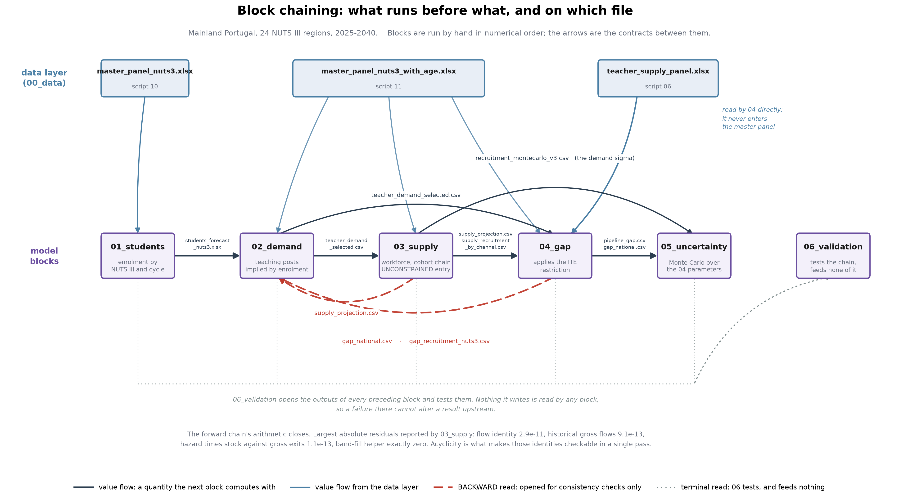
Figure 2 sets out which block reads which file. The enrolment block reads the master panel in its version without the teacher age structure, and writes a forecast of pupils by NUTS III region, cycle and scenario, together with the diagnostic sheets that document its own method selection. The demand block reads the master panel with age structure and the wide enrolment sheet from the first block, and writes teacher_demand_selected.csv, which is the contract the gap block consumes. The supply block reads the same master panel and the selected demand series, and writes the workforce projection, the recruitment split by entry channel, the history of entries, the estimated exit hazards, the universe reconciliation at national, NUTS II and NUTS III level, and a run manifest recording its parameters. The gap block reads four files from the supply block, the selected demand from the demand block, the enrolment forecast from the first block on a fallback path only, and three files from the data preparation layer; it writes the national gap, the pipeline gap, the constraint summary, the conversion history and the projected rate paths, the anchor_robustness.csv table, the graduate projection, the stock gap, the lateral channel history, the regional recruitment need, its own universe reconciliation and its manifest. The uncertainty block reads eight files from the gap block and one from the supply block. The validation block reads outputs from every preceding block and from the panel, and writes nothing that any block reads.
That last property is the one that makes the validation meaningful. A suite that fed its own diagnostics back into the chain could not be said to test the chain; it would be part of it. The separation is complete, and a failure detected in validation cannot silently alter a result upstream.
The graph of values is acyclic. The graph of file reads is not. The demand block contains two functions, one that locates a 2025 workforce stock and one that recovers NUTS III codes, which search the supply and gap output directories for files written later in the sequence. Both feed a single consumer, the internal check routine, and no quantity read by either function re-enters teacher_demand_selected.csv. The distinction between reading a value and reading a value for verification is therefore real, and the acyclicity of the substantive computation survives it.
Two consequences follow, and both are recorded in the code itself. The first is that on a first execution of the chain those downstream files do not yet exist, the checks return a skipped status, and the block prints that a skipped check is not a passed check. The second is that the checks only become active on a second pass, at which point they read outputs produced by a vintage of the demand block different from the one currently running. The block also labels the 2025 stock comparison as informational rather than as validation, on the grounds that both quantities are built from the same 2024 headcount and therefore agree by construction up to the enrolment ratio. A reader who encounters that comparison in the output should not read it as corroboration.
The accounting identities internal to the supply block hold to numerical precision. The manifest records a maximum flow identity residual of \(2.91 \times 10^{-11}\), a historical gross flow residual of \(9.09 \times 10^{-13}\), a hazard and exit consistency residual of \(1.14 \times 10^{-13}\), and a band fill helper residual of exactly zero. These confirm that the recursion is implemented as specified. They say nothing about whether the specification is right, and Section 9 treats them accordingly.
One asymmetry in the contracts deserves recording. The enrolment block reads the master panel without the teacher age structure, while the demand and supply blocks read the version with it. The enrolment block has no use for the age structure, so the choice is defensible, but it means the two panel versions must remain consistent with one another, and that consistency is maintained by the preparation layer rather than checked at the point of use.
3.2 Division of labour between requirement and feasibility
The chain separates two questions that are frequently merged in work of this kind. The supply block computes how many teachers must be recruited each year to hold the workforce at the level the demand block implies. The gap block asks whether the flow of qualified graduates is large enough to deliver that number. The first question has an accounting answer. The second has a behavioural one, and the two should not be reported as though they were the same quantity.
The separation is declared in the data and not only in the code. Every row of the supply projection carries a column recording that the entry policy is unconstrained and that the restriction is applied by the gap block. When the supply block writes the channel contract it prints that the gap block should restrict the graduate channel alone rather than the total. The instruction matters because the two channels draw on different populations: initial teacher education bounds the first and has no purchase on the second, which draws on re-entry and on the contracted reserve. Figure 3 shows where that division sits in the mechanism, and which of the two channels the graduate pool actually governs.
Entry in the supply block is endogenous, set as the recruitment required to close the distance between projected demand and the workforce that survives ageing and exit. Under that rule the block projects cumulative recruitment of 90,575 teachers over 2025 to 2040, an average of 5,661 per year. The split between channels is governed by a graduate share of 27.68 per cent, estimated from the entry age profile over the last three observed years, with the remaining 72.32 per cent drawn laterally. Applying that share gives 1,567 graduate entrants and 4,094 lateral entrants per year on average. Section 6 establishes both the recruitment path and the split.
Two features of the exit specification condition that recruitment path. The hazard for the band aged sixty and above is set flat at one seventh, derived from a statutory exit age of sixty-seven rather than estimated from the data. The estimated alternatives are lower: 0.1237 over the full window, 0.1093 after 2017, and 0.1208 over the last three years. The choice raises projected retirements relative to what the observed series would produce. The second feature is that the hazard series for the band aged fifty-five to fifty-nine is degenerate, pinned at the floor, and the manifest records it as such. Together these matter because 94.7 per cent of the retirement wave originates in the sixty-plus band, so the wave that drives the recruitment requirement is very largely a parameter rather than an estimate, a point established with its evidence in Section 6. The cohort trace also reports a minimum net multiplier of 0.813 with three bands below one, indicating that the ageing recursion loses mass in those bands.
Against that requirement, the historical record establishes what the system has actually delivered. Realised entries averaged 4,537 per year, with a median of 4,618 and an average of 4,860 over the last five years. The best year on record is 2020 at 6,298, the second best is 5,745, and the average excluding the maximum is 4,317. The projection requires 5,661 per year on average, and 5,505 over the first ten years. No projected year exceeds the best year ever observed, which is reassuring, but eight of the sixteen exceed the second best, which is not. A requirement that sits above the second highest year in the historical record for half the horizon is demanding by the standard of the system’s own experience.
The graduate share is a national average that conceals substantial territorial variation. Across NUTS II regions it ranges from 0.116 in the Centro to 0.512 in Grande Lisboa, a ratio of 4.4. Across NUTS III regions it ranges from 0.030 in Beiras e Serra da Estrela to 0.512 in Grande Lisboa, a ratio of 17. Applying a single national share to allocate need between channels therefore imposes a uniformity the underlying data do not display.
The gap block inherits that share and applies the graduate constraint to the corresponding portion of the requirement. It also records a second statistic, the graduate share of observed entries, at 17.92 per cent. The two differ by a factor of 1.54. They measure different things, the first being the share of projected need attributed to the graduate channel and the second the share of historical entries that came through it, and the block prints a warning to that effect. The distinction should travel with any use of either figure.
The constraint summary reports coverage by channel, defined as feasible entries over required entries. Coverage in the graduate channel falls from 1.891 in 2025 to 1.541 in 2040, remaining above one throughout, and the binding flag is false in all sixteen years. Coverage in the lateral channel falls from 1.007 in 2025 to 0.860 in 2040, crossing below one in 2026. The channel that binds is the lateral one, governed by a rate of 2.71 per cent applied to the previous year’s age-banded stock, and not the graduate channel that initial teacher education governs.
This produces the result most likely to be contested. The block reports an unmet requirement of 6,765 teachers when the channels are kept separate and exactly zero when they are netted against one another. The entire reported deficit is a consequence of refusing to let a surplus in the graduate channel offset a shortfall in the lateral one. The refusal is defensible, since the two channels draw on different populations and a surplus of new graduates does not staff a post that requires an experienced re-entrant, but the arithmetic should be stated plainly: under netting the chain reports no deficit at all. Readers who prefer the netted convention should be able to see that the two conventions differ by the whole of the reported figure. Section 7 sets out the full case against netting.
The sign of the result also depends on an external anchor. The gap block scales the conversion rate by a factor of 1.6243 to reconcile the estimated entry flow with an external estimate of the graduate entry level. Under the anchor the mean conversion rate is 0.196, implying a cohort conversion of 0.589, and the mean gap is a surplus of 946 per year. Without the anchor the mean rate is 0.121, the cohort conversion is 0.363, and the mean gap is a shortage of about 20 per year. The anchored verdict is a surplus under all three rate modes. The unanchored verdict flips sign under the median and last modes and remains a surplus only under damped trend. The block records that the verdict does not survive removal of the anchor, and that record belongs in the reporting of the central result rather than in an appendix. Section 7 documents the anchor, its rationale and its consequences in full.
A further tension exists between two of the block’s own choices. The projected conversion rate sits at the hundredth percentile of its historical distribution, while the projected graduate pool sits 18.3 per cent below its last observation. The block flags the combination as a convention mismatch, which it is. The printed message accompanying the flag states that the two choices push the result in the same direction, and that statement is wrong. Feasible graduate entries are the product of the pool and the rate, so a high rate raises them and a low pool lowers them. The two choices act in opposite directions on the gap. The mismatch is real and should be declared; the claim about its net effect should not be repeated.
The perimeter question also sits in this block. Summing the teacher age bands for 2024 gives the age-band sum of 139,098, while the published total in the same panel is 156,475, and the block works on the age-band sum so that its arithmetic stays on a single universe. Against the reference census of approximately 122,000 active teachers in mainland public education, the age-band sum is higher, and the perimeter flag is set. If the base is interpreted as a flow rather than a stock, the implied annual exit volume is 5,655. Separately, a substitution reserve at 20 per cent of the 2025 stock would amount to 27,722 teachers, a quantity the chain does not model at any point and which is therefore absent from every figure reported here. Section 7 reports both perimeter comparisons and the reserve calculation in full.
3.3 Absence of feedback from the constraint to the stock
The two questions are separated cleanly, and the answer to the second is never returned to the first. This section quantifies what that omission costs.
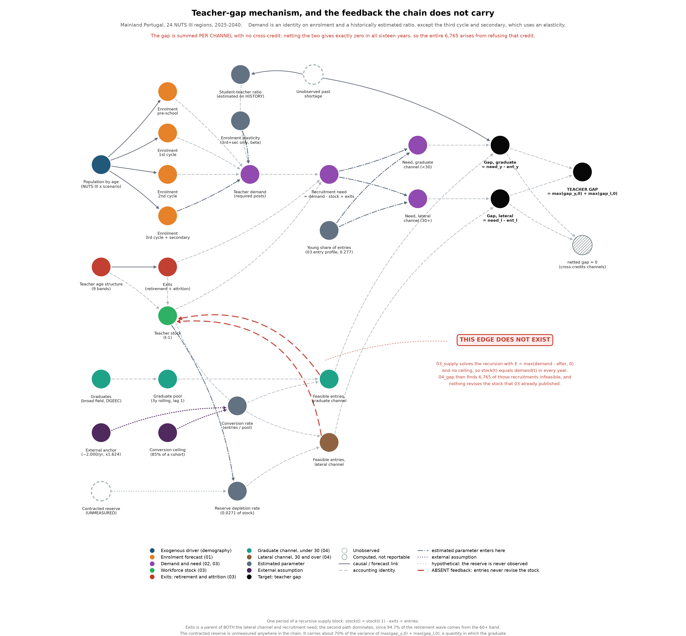
Entry in the supply block is set as the recruitment needed to close the distance between demand and the surviving workforce. Because that quantity is positive in every projected year, the recursion implies that the projected stock equals projected demand exactly. The data confirm it: the stock column of the supply projection and the stock column of the national gap file are identical. The gap block then reports that 6,765 of the recruitments implied by that path cannot be delivered. The supply projection is never revised. The panel that the uncertainty and validation blocks read therefore contains a stock trajectory that assumes recruitment is fully delivered, sitting beside a gap figure asserting that full delivery is impossible. Nothing in the chain reconciles the two statements. In Figure 3 those are the two dashed red edges, drawn to mark their absence.
To establish what the reconciliation would produce, the workforce was re-projected under the constraint. The counterfactual applies the same graduate share of 0.27681 and the same lateral rate of 0.02706, uses exit rates implied by the ratio of exits to the previous stock, and caps graduate entries at the feasible level recorded in the constraint summary. Writing \(s_c\) for the counterfactual stock, \(r\) for the implied exit rate, \(\sigma\) for the graduate share, \(\lambda\) for the lateral rate and \(F_y\) for feasible graduate entries, the recursion is
\[ \begin{aligned} a_c(t) &= s_c(t-1)\,\bigl(1 - r(t)\bigr) \\ n_c(t) &= d(t) - a_c(t) \\ e_y(t) &= \min\bigl(\sigma \, n_c(t),\; F_y(t)\bigr), \qquad e_l(t) = \min\bigl((1-\sigma)\, n_c(t),\; \lambda \, s_c(t-1)\bigr) \\ s_c(t) &= a_c(t) + e_y(t) + e_l(t) \end{aligned} \]
starting from the observed 2024 age-band sum of 139,098. The resulting trajectory is reported in Table 2.
| Year | Counterfactual stock | Shortfall against supply block | Entries | Realised graduate share |
|---|---|---|---|---|
| 2025 | 138,606 | 5 | 5,207 | 27.7% |
| 2026 | 138,028 | 9 | 5,190 | 27.7% |
| 2027 | 137,450 | 253 | 5,262 | 29.0% |
| 2028 | 136,887 | 514 | 5,340 | 30.3% |
| 2029 | 136,314 | 700 | 5,391 | 31.3% |
| 2030 | 135,635 | 630 | 5,342 | 30.9% |
| 2031 | 134,847 | 555 | 5,288 | 30.6% |
| 2032 | 134,073 | 779 | 5,345 | 31.7% |
| 2033 | 133,397 | 1,165 | 5,463 | 33.6% |
| 2034 | 132,806 | 1,458 | 5,550 | 35.0% |
| 2035 | 132,294 | 1,714 | 5,626 | 36.1% |
| 2036 | 131,892 | 2,013 | 5,721 | 37.4% |
| 2037 | 131,552 | 2,154 | 5,760 | 38.0% |
| 2038 | 131,229 | 2,163 | 5,751 | 38.1% |
| 2039 | 130,933 | 2,189 | 5,749 | 38.2% |
| 2040 | 130,638 | 2,127 | 5,714 | 38.0% |
Four results follow.
The terminal stock would be 130,638 rather than 132,765, a shortfall of 2,127 teachers or 1.60 per cent. Cumulative recruitment over the horizon would be 87,701 rather than 90,575, a difference of 2,874. The reported unmet requirement of 6,765 therefore overstates the cumulative recruitment effect of the constraint by a factor of 2.4.
The reason is that the system partially self-corrects. A lower stock raises the requirement in the following year, and the graduate channel carries enough slack, with coverage between 1.89 and 1.54, to absorb its share of that additional requirement. At the same time a lower stock generates fewer exits, which offsets part of the loss. The shortfall stabilises near 2,100 from 2037 onwards instead of accumulating. The decomposition in the final year illustrates the mechanism: the flow shortfall in 2040 is 38, the exit saving is 100, and applying these to the previous year’s shortfall of 2,189 gives 2,127, matching the recursion.
The composition of entries would shift. The realised graduate share drifts from 27.7 per cent at the start of the horizon to 38.0 per cent at the end, because the lateral channel is capped at a rate applied to the stock while the graduate channel is not.
This result is circular in a way that bears on the whole chain. The share of 27.68 per cent was itself derived from the entry age profile observed in the supply block, and the counterfactual implies that the profile generating it would no longer hold. The parameter that defines the boundary between the two channels does not survive the scenario in which the constraint binds.
Three caveats attach to the counterfactual. It assumes the split between channels remains proportional at \(\sigma\) as the requirement rises, and that the graduate channel delivers up to its feasible ceiling. These are assumptions of the same kind the chain already makes rather than measurements. The calculation also ignores the three-year moving average that the gap block applies to the expansion component, which redistributes requirement between years, by a factor of 0.9916 in 2025 and 1.0211 in 2026, with almost no effect on the cumulative total.
One further architectural fact belongs here. The supply block publishes two recruitment paths, and the gap block consumes only one. The flat specification gives cumulative recruitment of 90,575 and is the path the gap block reads. The tenure specification gives 98,579, and the age-matched tenure specification gives 87,275. The gap between the flat and tenure paths is 8.84 per cent, decomposed into a shape effect of \(-3.64\) per cent and an age effect of \(+12.95\) per cent, with the two effects carrying opposite signs. In the first projected year the total difference is 21.0 per cent, composed of a shape effect of \(-8.08\) per cent and an age effect of \(+31.63\) per cent. The dominant channel is the retirement age, at a flat 67.0 against 65.22 in the tenure queue. The Monte Carlo simulation in the same block returns a tenth percentile of 91,311, a median of 98,773 and a ninetieth percentile of 106,963 over two thousand replications. The median corresponds to the tenure queue path rather than to the flat chain the gap block consumes, which means the central path carried through the chain sits below the tenth percentile of the block’s own simulated distribution. The choice between the two published paths is not recorded anywhere in the data contract.
The decision not to close the loop places this chain in the same position as the published reference study for Portugal, which reports enrolments and graduations in initial teacher education, observes that both fall short of projected requirements at every level of education, and stops there (Nunes et al., 2025). The projection that results is of requirements rather than of outcomes, and the two coincide only if recruitment is unconstrained. The model proposed for Latin America and the Caribbean by Bordón, Lara and Marotta (2025) makes the same structural choice, decomposing entries into newly trained teachers, teachers moving between cells and returning teachers, while noting that models of this family require numerous assumptions and that the assumptions themselves add uncertainty to the projections. The projection model documented by Bruneforth, Gagnon and Wallet (2009) makes the corresponding point about the exit side, observing that a constant attrition rate is equivalent to an assumption about expected career length and that the two should be checked against each other. In the present chain that check is available and unfavourable: the flat hazard of one seventh implies a shorter residual career in the terminal band than any of the three estimated alternatives would produce.
4 Projecting the school population
Enrolment drives everything downstream. The demand block converts pupils into teaching posts, the supply block sets recruitment to close the distance between that demand and the surviving workforce, and the gap block asks whether the resulting recruitment can be delivered. An error in the enrolment path propagates through all three. This section documents how that path was built and what it produces, at national level and by NUTS III region.
4.1 Method and scenarios
4.1.1 The decomposition
Projected enrolment is the product of three quantities, each estimated separately and each carrying a different kind of uncertainty. For region \(i\), cycle \(c\) and year \(t\),
\[ S_{ict} = S_{ic,2024} \times g_{n(i),b(c),t} \times \kappa_{ict} \]
where \(S_{ic,2024}\) is observed enrolment in the anchor year, \(g\) is a demographic growth factor computed at NUTS II level for the age band \(b(c)\) that feeds cycle \(c\), and \(\kappa\) is the ratio of projected to base-year coverage, meaning the share of the relevant age band actually enrolled.
The first term is measurement. The second is the official population projection, and carries whatever uncertainty the statistical office attaches to it. The third is behavioural: it captures enrolment rates drifting away from what was observed, and it is the only component the block estimates from the education data rather than inheriting. The same decomposition underlies the projection model documented by Bruneforth, Gagnon and Wallet (2009), where projected enrolment follows from expected changes in the size of the population cohort and in coverage of the relevant level of education.
Cycles map to age bands as follows: pre-school to ages 0 to 4, the first cycle to 5 to 9, the second and third cycles both to 10 to 14, and secondary and post-secondary both to 15 to 19. Two pairs of cycles therefore share a denominator. Any shift of pupils between the second and third cycles, or between secondary and post-secondary, is absorbed entirely by the coverage term and never appears as demography.
4.1.2 Anchoring on observed enrolment
The projection is anchored on 2024, the last year with observed pupil counts, across 144 region-cycle cells, all of which have an observed coverage. Anchoring on the level rather than on a fitted value means the first projected year departs from observation only through demography and drift, and the block reports that decomposition explicitly. For the central scenario the move from 1,547,317 observed pupils in 2024 to 1,543,374 projected in 2025 is a fall of 0.25 per cent, of which the demographic step accounts for \(-0.28\) per cent and coverage drift for \(+0.02\) per cent. A first-year discontinuity of that size is consistent with a demographic path; the block prints a warning if it exceeds 2.5 per cent, and the warning does not fire.
4.1.3 Linking two population vintages
The historical population series runs from 2011 to 2024 and the projection series from 2025 onwards. They do not overlap. That matters because the growth factor is a ratio of projected population to base-year population, and the two are different statistical vintages whose levels need not agree.
The size of the disagreement is measurable. Taking the ratio of projected population in 2025 to observed population in 2024, by age band and across NUTS II regions, gives 0.9883 for ages 0 to 4, 0.9128 for ages 5 to 9, 0.8994 for ages 10 to 14 and 0.9461 for ages 15 to 19. The largest is a level difference of 10.06 per cent. Had the historical base been used directly as the denominator, that 10.06 per cent would have entered the projection as though it were demography, and enrolment in the second and third cycles would have been shown falling by a tenth in a single year for reasons of statistical vintage rather than of population.
With no overlap available, the block estimates the 2024 to 2025 step from the projection series’ own first year-on-year rate, so that the forecast series contributes only its internal shape and one migration assumption governs the whole path. The resulting step is 0.9977 at the median across NUTS II regions and age bands, with a range of 0.9754 to 1.0422. The code states plainly that this step is not identified from the data, and the statement should be taken at face value. The alternatives available in the configuration are extrapolating the recent historical trend by one year, which assumes the immigration-driven upswing runs one more year and then stops, or setting the step to unity, which assumes no demographic movement in the gap year. All three are assumptions, and the one chosen is the only one internally consistent with the projection series it hands over to.
4.1.4 Projecting coverage
Coverage is projected in logs on a panel of 1,584 observations spanning six cycles, the 24 NUTS III regions and the years 2014 to 2024. Three candidate methods were compared in a rolling-origin backtest with a minimum training window of four years: holding the last observation, taking the median of the last three, and a damped trend with an exponentially weighted slope, damping of 0.85, and shrinkage of the regional slope towards the cycle median with a shrinkage constant of 3. Scoring is by mean absolute scaled error against the one-step naive benchmark within the training window.
| Cycle | Damped | Last | Median of 3 | Selected | Margin over second |
|---|---|---|---|---|---|
| Pre-school | 3.098 | 2.243 | 2.582 | last | 15.1% |
| First cycle | 1.911 | 1.468 | 1.564 | last | 6.6% |
| Second cycle | 2.058 | 2.205 | 2.563 | damped | 7.1% |
| Third cycle | 1.854 | 1.653 | 1.849 | last | 11.9% |
| Secondary | 1.879 | 1.577 | 1.747 | last | 10.8% |
| Post-secondary | 2.002 | 1.502 | 1.640 | last | 9.2% |
Holding the last observation wins in five of the six cycles. Only the second cycle selects the damped trend, and by a margin of 7.1 per cent over the runner-up. The projection of coverage is therefore, in most cells, a decision to freeze the observed rate and let demography do the work. Where a method with a trend does win, it wins narrowly.
Bruneforth, Gagnon and Wallet (2009) distinguish simulation models with a fixed target date, which set a goal in terms of education indicators and compute the minimum requirements for meeting it, from projection models, which extrapolate the current situation into the future. Their own exercise takes the first route, imposing a target net enrolment rate of 100 per cent and a reference pupil-teacher ratio of 40 to 1. The block documented here takes the second: it carries no target enrolment rate and no reference ratio, and coverage moves only as the backtest allows. The two designs answer different questions, the first measuring the cost of reaching a stated goal and the second the consequence of observed behaviour persisting.
Two features of Table 3 deserve comment. Every value exceeds one. This is arithmetically expected, because the scaling denominator is the mean one-step change within the training window while the numerator averages errors at horizons of up to six years, so values above one are the norm at these horizons rather than evidence of failure. The consequence is nonetheless that the exercise establishes a ranking between methods and does not demonstrate that any of them beats a no-change benchmark at the horizon used. Pre-school carries the worst scores throughout, between 2.243 and 3.098, which is consistent with an enrolment rate that is a policy variable in that cycle rather than a stable behavioural parameter.
Behavioural drift is bounded. The ratio of projected to base-year coverage is constrained to the interval from 0.70 to 1.40, and cases where the bound binds are counted and reported. It binds in 48 of 6,912 cells, or 0.69 per cent, and all 48 are in post-secondary education. The realised range across regions runs from 0.8436 to 1.4000. A constraint that binds only in the smallest and most volatile cycle is doing the work it was designed for.
4.1.5 Scenarios and uncertainty
Three demographic scenarios are carried, central, high and low. A fourth published scenario, assuming no migration, was dropped, and the code records the reason: it is a counterfactual closure rather than a plausible path, and retaining it widened the reported range without informing any decision. That judgement is defensible for a report whose purpose is to bound what might happen, though a reader interested in isolating the contribution of migration would want it back.
Alongside the scenarios, a bootstrap of 400 replications propagates uncertainty in the coverage projection. The residual standard deviation is computed per region and cycle against the fitted line rather than against the last observation, floored at 0.01, capped at 0.20, and scaled by the square root of the horizon measured from the anchor year, with an overall cap of 0.45. Draws are truncated at two standard deviations and clipped to a factor of three either side of the central path.
The correlation structure is the part of this design most open to challenge. Shocks are decomposed into a component common to all regions within a cycle and year and an idiosyncratic component, with a weight of 0.65 on the common part. The code labels this a judgement call and writes it to the summary sheet so that it can be contested. The choice matters: at zero the regional draws would be independent and the aggregate band would collapse towards zero by the law of large numbers, while at one every region would move together and the aggregate band would be as wide as the regional ones. At 0.65 the national 80 per cent band in 2040 is 11.4 per cent of the level. No evidence is offered for that specific value, and none is available without a longer panel of enrolment shocks than the eleven observed years provide.
The bands reported for aggregates are computed by summing draws and then taking percentiles, rather than by summing percentiles across regions. The distinction is not cosmetic: summing percentiles would treat every region as moving to its own tenth percentile simultaneously, which the correlation structure explicitly denies.
4.2 Results by NUTS III
4.2.1 The national path
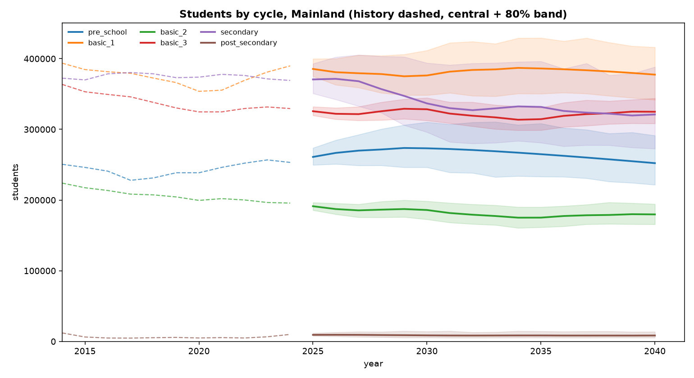
Total enrolment in the central scenario falls from 1,543,374 in 2025 to 1,463,688 in 2040, a reduction of 5.16 per cent over sixteen years. The high scenario ends at 1,553,256, or 0.42 per cent above its own starting point, and the low scenario at 1,370,296, a fall of 11.03 per cent. The scenarios span 12.8 per cent of the 2025 level by the end of the horizon, which is roughly two and a half times the central path’s own movement over the same period. Demographic assumption dominates demographic outcome.
The aggregate conceals movement between cycles that matters considerably more for teacher requirements than the total does, because cycles differ in their staffing intensity. Figure 4 shows the pattern. Secondary education falls 13.37 per cent, from 370,620 to 321,054, after peaking in 2026. Post-secondary falls 10.14 per cent, the second cycle 6.05 per cent, pre-school 3.37 per cent and the first cycle 2.09 per cent. The third cycle is essentially flat, at \(-0.24\) per cent.
Three cycles peak inside the horizon rather than declining from the start. Pre-school rises from 261,001 in 2025 to 273,660 in 2029 before turning down. The third cycle peaks in the same year at 329,143. The first cycle peaks later, at 386,950 in 2034. These are the same cohorts observed at successive ages, and the sequence of peaks is the demographic echo moving through the system. The implication for staffing is that the cycles do not contract together: pre-school and the first cycle expand over the first decade while secondary contracts throughout, so the composition of teaching requirements shifts even in years when the total is stable.
The uncertainty bands differ sharply by cycle. In 2040 the 80 per cent interval is 11.0 per cent of the level in the third cycle, 15.9 per cent in the second, 19.7 per cent in the first, 27.6 per cent in pre-school, 36.0 per cent in secondary, and 100.0 per cent in post-secondary. Post-secondary is a series of some 8,000 to 9,000 pupils whose enrolment rate is volatile and whose coverage ratio is the only one hitting the clipping bounds; its band should be read as an admission that the block cannot project it, rather than as a quantified interval.
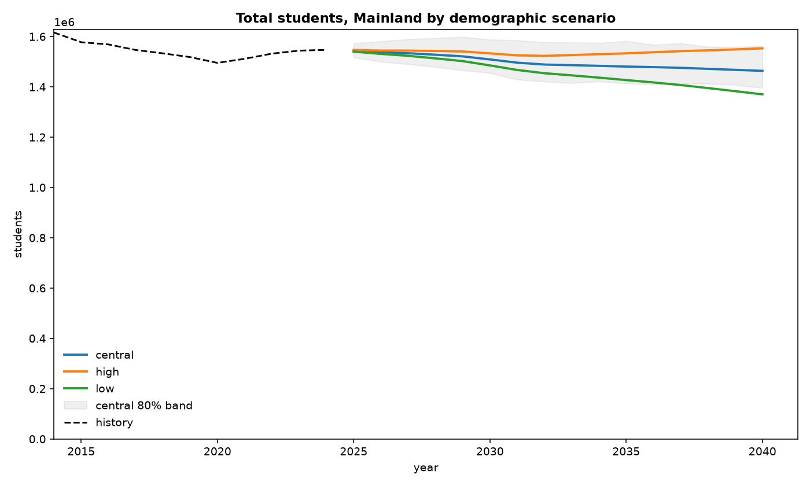
Figure 5 places the projection against the observed series. History falls from roughly 1.62 million in 2014 to a trough near 1.49 million in 2020 and then recovers to 1.547 million by 2024, a recovery driven by immigration rather than by births. All three scenarios begin at essentially that level and diverge from 2027 onwards. The central path is close to flat until 2030 and declines thereafter.
4.2.2 The regional distribution
Regional outcomes range from a fall of 16.29 per cent in the Área Metropolitana do Porto to a rise of 6.41 per cent in Grande Lisboa, a spread of 22.70 percentage points. Only three regions grow, and all three are metropolitan or coastal: Grande Lisboa at 6.41 per cent, Península de Setúbal at 4.96 per cent and the Algarve at 4.74 per cent. Every other region contracts.
| NUTS III region | 2025 | 2040 | Change | Share 2025 | Share 2040 |
|---|---|---|---|---|---|
| Área Metropolitana do Porto | 254,912 | 213,396 | \(-16.29\%\) | 16.52% | 14.58% |
| Tâmega e Sousa | 58,435 | 48,948 | \(-16.24\%\) | 3.79% | 3.34% |
| Douro | 23,338 | 19,556 | \(-16.21\%\) | 1.51% | 1.34% |
| Terras de Trás-os-Montes | 12,957 | 10,858 | \(-16.20\%\) | 0.84% | 0.74% |
| Alto Minho | 32,342 | 27,167 | \(-16.00\%\) | 2.10% | 1.86% |
| Ave | 58,509 | 49,225 | \(-15.87\%\) | 3.79% | 3.36% |
| Alto Tâmega e Barroso | 9,202 | 7,746 | \(-15.82\%\) | 0.60% | 0.53% |
| Cávado | 66,747 | 56,270 | \(-15.70\%\) | 4.32% | 3.84% |
| Alentejo Litoral | 14,214 | 13,079 | \(-7.99\%\) | 0.92% | 0.89% |
| Beira Baixa | 13,067 | 12,047 | \(-7.81\%\) | 0.85% | 0.82% |
| Alentejo Central | 22,737 | 20,978 | \(-7.74\%\) | 1.47% | 1.43% |
| Baixo Alentejo | 17,849 | 16,489 | \(-7.62\%\) | 1.16% | 1.13% |
| Alto Alentejo | 14,723 | 13,612 | \(-7.55\%\) | 0.95% | 0.93% |
| Região de Coimbra | 61,191 | 56,615 | \(-7.48\%\) | 3.96% | 3.87% |
| Região de Aveiro | 57,942 | 53,610 | \(-7.48\%\) | 3.75% | 3.66% |
| Beiras e Serra da Estrela | 25,517 | 23,613 | \(-7.46\%\) | 1.65% | 1.61% |
| Viseu Dão Lafões | 36,918 | 34,176 | \(-7.43\%\) | 2.39% | 2.33% |
| Região de Leiria | 45,166 | 41,959 | \(-7.10\%\) | 2.93% | 2.87% |
| Oeste | 58,177 | 54,686 | \(-6.00\%\) | 3.77% | 3.74% |
| Médio Tejo | 32,761 | 30,852 | \(-5.83\%\) | 2.12% | 2.11% |
| Lezíria do Tejo | 38,067 | 35,896 | \(-5.70\%\) | 2.47% | 2.45% |
| Algarve | 81,804 | 85,685 | \(+4.74\%\) | 5.30% | 5.85% |
| Península de Setúbal | 143,328 | 150,438 | \(+4.96\%\) | 9.29% | 10.28% |
| Grande Lisboa | 363,471 | 386,787 | \(+6.41\%\) | 23.55% | 26.43% |
The distribution in Table 4 concentrates. Grande Lisboa rises from 23.55 to 26.43 per cent of mainland enrolment, a gain of 2.88 percentage points, while the Área Metropolitana do Porto falls from 16.52 to 14.58 per cent, a loss of 1.94 points. The eight regions of the Norte together lose more than a sixth of their pupils. By 2040 Grande Lisboa, Península de Setúbal and the Algarve account for 42.6 per cent of mainland enrolment against 38.1 per cent in 2025.
4.2.3 What the regional detail does and does not contain
The regional results have a structural property that must be stated, because it determines how they should be read. Almost all of the variation reported in Table 4 is between NUTS II regions rather than within them.
| NUTS II region | Regions | Minimum | Maximum | Spread |
|---|---|---|---|---|
| Norte | 8 | \(-16.29\%\) | \(-15.70\%\) | 0.590 pp |
| Centro | 6 | \(-7.81\%\) | \(-7.10\%\) | 0.705 pp |
| Alentejo | 4 | \(-7.99\%\) | \(-7.55\%\) | 0.439 pp |
| Oeste e Vale do Tejo | 3 | \(-6.00\%\) | \(-5.70\%\) | 0.298 pp |
| Grande Lisboa | 1 | \(+6.41\%\) | \(+6.41\%\) | 0 pp |
| Península de Setúbal | 1 | \(+4.96\%\) | \(+4.96\%\) | 0 pp |
| Algarve | 1 | \(+4.74\%\) | \(+4.74\%\) | 0 pp |
Table 5 sets out that dispersion. The mean change across NUTS II regions runs from \(-16.04\) per cent in the Norte to \(+6.41\) per cent in Grande Lisboa, a spread of 22.45 percentage points. The largest spread within any NUTS II region is 0.705 percentage points, in the Centro. Between-region variation is thirty-two times the largest within-region variation.
The reason is in the method. Demographic growth factors are computed at NUTS II level, because that is the level at which the statistical office publishes population projections. Every NUTS III region inside a given NUTS II region therefore receives an identical growth factor for a given cycle and year. This was verified directly: the number of distinct growth factors per combination of NUTS II region, cycle and year is exactly one. The only sources of within-region difference are the cycle composition of each region’s enrolment, since regions weight the four age bands differently, and the coverage drift term, whose regional dispersion is small.
A section titled “Results by NUTS III” therefore reports, in substance, results by NUTS II applied uniformly within each. The finer geography is real in the sense that each region carries its own base-year enrolment, its own cycle mix and its own coverage path, and the levels in Table 4 are specific to it. The rates of change are not. A reader comparing Tâmega e Sousa with Cávado will find a difference of 0.54 percentage points over sixteen years, and that difference is composition, not demography.
One consequence deserves recording for the blocks downstream. The demand block converts enrolment into teaching posts region by region, and the supply block projects the workforce on the same geography. Neither inherits any regional demographic differentiation finer than NUTS II, so apparent regional variation in projected teacher requirements will reflect differences in current staffing and cycle mix rather than differences in projected population. The territorial disaggregation of teacher need should be read as a distribution of a nationally and NUTS II determined quantity, not as a set of independent regional projections.
A related question arises about the population data the block consumes. The preparation layer constructs a NUTS III population projection by splitting each NUTS II total across its constituent regions using two demographic indices, and that construction has a defect recorded in Section 2.7: its base weights are uniform, so the share each region receives does not depend on how many people live there. That defect does not propagate here. The enrolment block aggregates the projected population back to NUTS II before computing any growth factor, and because the construction reconciles exactly to the NUTS II control total, summing it back returns the published control. The NUTS III allocation is built and then discarded. The defect remains a defect, and it affects any other use of that file, but it does not contaminate the enrolment projection.
4.2.4 Limitations of the enrolment block
Five limitations condition the reading of these results.
The 2024 to 2025 demographic step is an assumption rather than an estimate, because the two population vintages do not overlap. It is small, at 0.9977 in the median, and the anchoring check confirms that the first projected year moves by only 0.25 per cent against observation. A different choice among the three available would move the whole path by a comparable amount in level while leaving its shape intact.
Coverage is frozen at its last observed value in five of the six cycles. This is what the backtest selects, and freezing is the honest reading of a series that the data do not show trending reliably. It means that any policy change affecting enrolment rates, in pre-school participation or in post-secondary provision, is outside the projection by construction.
The correlation parameter governing the aggregate uncertainty band is set at 0.65 by judgement. The national 80 per cent band of 11.4 per cent in 2040 is a direct function of that choice, and a reader who preferred a lower value would obtain a narrower band without any change to the central path. The parameter is recorded in the output so that the sensitivity can be reconstructed.
The projection carries no policy response. Enrolment rates respond to the availability of places, particularly in pre-school, where public provision has expanded over the observed period. Holding coverage constant assumes that provision keeps pace with the cohorts rather than constraining them, which is an assumption about capacity that the block does not test.
A fifth limitation follows from the granularity of the method rather than from its parameters. Because two pairs of cycles share an age band, movement of pupils between the second and third cycles, or between secondary and post-secondary, enters through the coverage term and cannot be distinguished from a change in participation. Cavique, Pombinho, Tallón-Ballesteros and Correia (2020) model the same administrative source as a stochastic flow in which a pupil in each grade either progresses, repeats or drops out, which identifies those transitions directly. That structure requires grade-level transitions the published tables do not carry, and the cost of working with level totals instead is that retention and progression are folded into a single behavioural residual.
5 Teacher demand
The demand block converts projected enrolment into teaching posts. It does so through the student-teacher ratio, projecting that ratio forward by region and by cell and then dividing pupils by it. The conversion is arithmetically trivial and methodologically loaded, because the ratio carries every assumption the block makes about how many teachers a given number of pupils requires.
The ratio is best understood as a compressed form of a longer accounting identity. In the framework Santiago (2002) sets out for the OECD, the number of teachers required by a system is the product of the student population and the required learning time per student, divided by the product of average class size and the teaching load of each teacher. The student-teacher ratio collapses three of those four terms into one, which is why it is convenient and why it is opaque: a change in the ratio can reflect a change in class size, in instruction time, in teachers’ contractual hours, or in how many of the staff on the payroll are actually in front of a class. The block does not decompose the ratio into those components, and the published tables would not support it. What follows therefore treats the ratio as a single reduced-form parameter and concentrates on how it is projected and what its projection implies.
The four cells are carried. Post-secondary education is excluded, and the decision is supported by evidence rather than convention. In 2024 the national ratio for the third cycle and secondary cell is 9.516 excluding post-secondary pupils and 9.651 including them, a difference of 1.42 per cent on the ratio produced by 9,927 pupils. If the teacher column contained post-secondary staff, regions with a larger post-secondary share would show a mechanically higher ratio once those pupils were left out of the numerator. Across the 24 regions the cross-sectional slope of log ratio on the post-secondary share is \(-0.097\) with a correlation of \(-0.006\), which is no association at all. The teacher column does not appear to carry post-secondary staff, and excluding those pupils is the consistent choice. The mechanical effect on that cell’s projected demand is \(-1.40\) per cent.
The cell structure follows the design used for Latin America and the Caribbean by Bordón, Lara and Marotta (2025), where teacher requirements are computed on cells defined by level of education and geography and the recruitment problem is posed separately within each. Stratifying demand in this way is standard practice rather than an innovation: Santiago (2002) argues that aggregate teacher requirements are of limited use for policy and that demand should be specified by subject matter, grade level, region and the qualifications sought. Aggregating the third cycle with secondary education is a departure from a finer subject-level treatment, and it is imposed by the published tables rather than chosen.
5.1 Bake-off for projecting the student-teacher ratio
Ten candidate methods were compared on a rolling-origin backtest over the ratio panel, which runs from 2014 to 2024 across the 24 NUTS III regions and the four cells. The origins are 2018, 2019, 2021 and 2022, and the pandemic year 2020 is excluded from the estimation sample, a decision taken before the results were seen. Scoring is by mean absolute scaled error on projected teaching posts, with the scale set by the mean one-step change in teacher counts within each region’s training window.
Fixing the design before observing outcomes matters for how the results can be read. Pathak and Shi (2014) make the same commitment explicit in their evaluation of demand models for Boston’s school assignment reform, publishing the specification and the target outcomes before the new preference data were submitted, precisely so that the comparison could not be adjusted after the fact. The exclusion of 2020 here is a weaker version of the same discipline, and it is the reason the pandemic sensitivity exercise reported below can be treated as a check rather than as a second attempt at the same question.
The candidates span a deliberate range of behaviour. Three freeze the ratio in some form, holding the last observation, taking the median of the last three years, or taking the mean of the whole series. Two impose mean reversion, through an AR(1) on the log ratio and through an error-correction model toward the regional long-run level. Two carry a trend, damped at 0.90 or blended at a third of the pooled slope in the theta-style variant. Two are combinations, the median of the three simplest methods and an average of the two mean-reverting ones. The tenth, growth_ratio, is structurally different: it projects teaching posts directly from the enrolment change raised to an estimated elasticity, so it does not project the ratio at all but implies one.
Two of the ten candidates are forecast combinations, and their presence in the pool is motivated by a literature rather than by convenience. Wang, Hyndman, Li and Kang (2022) review five decades of work on combining forecasts and report the persistent finding that simple combinations, in particular equally weighted means and medians, are difficult to beat by weighting schemes that are theoretically superior, a result long enough established to have acquired a name, the forecast combination puzzle. The same review notes that the median and trimmed means are attractive where individual forecasts are dispersed, because they are less sensitive to extreme members of the pool. hybrid_robust, the median of three projections, is an instance of exactly that construction, and its performance below should be read against the expectation that it would be hard to beat rather than as a surprise. Wang et al. also record the standard practice of scoring combinations against a naive benchmark using scaled error measures, which is what the backtest does here.
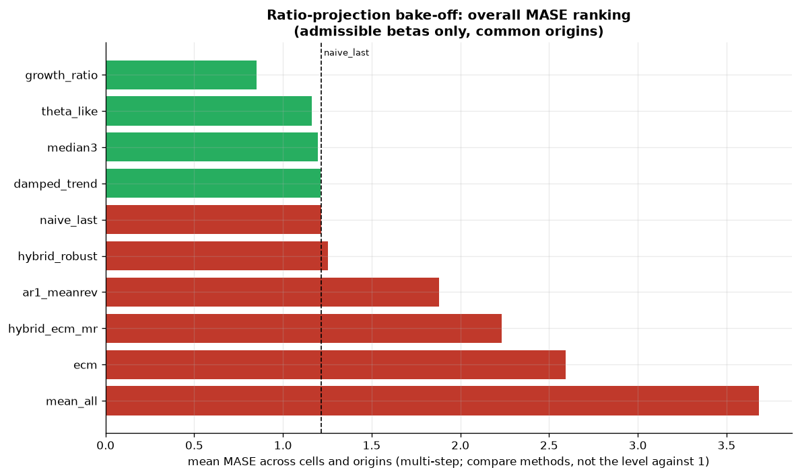
Figure 6 reports the headline ranking, and it requires a qualification before it can be read. On the balanced set, meaning the set of cell-origin pairs in which every method is present, growth_ratio scores 0.852 against 1.216 for holding the last observation, a gain of 29.9 per cent. That balanced set contains exactly one pair, the third cycle and secondary cell at origin 2022, which is a test window of two years. Every other method is averaged over the same single pair, so the comparison is internally fair and externally narrow. The figure is titled as an overall ranking and carries no sample size in the axis or the legend, and the ten values in it coincide, number for number, with the third cycle and secondary column of the per-cell heatmap. A reader who takes the title at face value would overstate the evidence considerably.
Two features of the figure deserve correction rather than interpretation. The bar for the benchmark itself is coloured as though it lost against the benchmark, an artefact of a comparison that is false for the benchmark by construction. The axis label warns that values above one are the arithmetic norm at multi-year horizons and that only the ranking between methods is informative, which is correct and worth repeating: the scaling denominator is a one-step change while the numerator averages errors over test windows of up to six years.
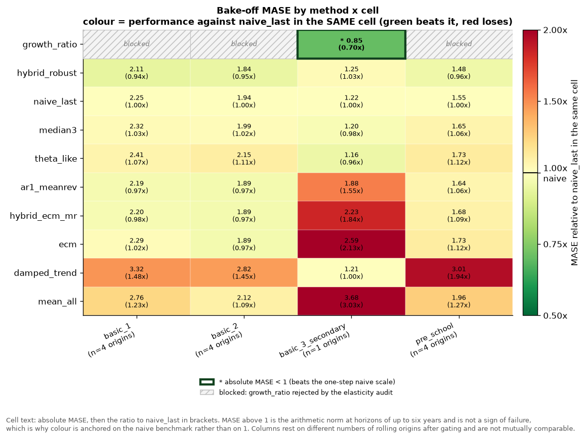
Figure 7 is the more informative of the two and is the basis on which selection actually proceeds. Read by column, the margins are narrow. In the first cycle the best available method scores 2.11 against 2.25 for the benchmark, a gain of 6 per cent. In the second cycle the figures are 1.84 against 1.94, and in pre-school 1.48 against 1.55, gains of 5 and 4 per cent. Only in the third cycle and secondary cell does any method reach an absolute score below one, and that method is growth_ratio at 0.85, which is 30 per cent better than the benchmark in that column.
The columns rest on different numbers of rolling origins after gating, three of them on four origins and one on a single origin, so they are not mutually comparable. The reporting is explicit about this, with the origin count printed in each column label.
5.2 Audit of the enrolment elasticity
The growth_ratio method depends on an elasticity of teaching posts with respect to enrolment, and the block estimates that elasticity rather than assuming it. The specification is a long difference over \(h\) years, regressing the change in log teachers on the change in log pupils with fixed effects for region and for year, and standard errors clustered on region.
With 24 clusters the asymptotic cluster-robust test over-rejects, and the size of that distortion is documented. Cameron, Gelbach and Miller (2008) show in Monte Carlo experiments that Wald tests using cluster-robust standard errors and normal critical values reject a true null well above nominal size when the number of clusters is between five and thirty, and that the distortion persists after bias corrections to the variance estimator. Their recommended remedy is the wild cluster bootstrap-t with the null imposed and Rademacher weights, which attains an asymptotic refinement because the bootstrapped statistic is asymptotically pivotal, and which in their simulations delivers rejection rates close to nominal size with as few as six clusters. The inference used here follows that procedure: the null is imposed, Rademacher weights are drawn once per cluster, and 999 replications are used.
One diagnostic associated with that procedure is not reported here and should be. MacKinnon and Webb (2018) show that the wild cluster bootstrap can fail badly in one specific configuration, where the regressor of interest is a dummy that is nonzero for very few clusters: the restricted variant then underrejects severely and the unrestricted variant overrejects severely. Their practical advice is to compute both and to distrust the result when the two disagree, since agreement between them is evidence that the conditions for validity hold. The configuration they warn about does not map directly onto this design, because the regressor is a continuous change in log enrolment rather than a treatment indicator, and because every cluster contributes variation. The comparison between restricted and unrestricted p-values nonetheless remains an available and cheap check on the inference, and its absence is recorded among the limitations.
The deployment rule has three conditions, all necessary. The point estimate must sit inside an admissible band of 0.30 to 1.20. The bootstrap must reject a null of zero elasticity, establishing that any response is detectable. The bootstrap must also reject a null of unit elasticity, establishing that the data contradict strict proportionality, which is the condition that would justify departing from the convention of holding the ratio fixed.
| Cell | \(\beta\) | s.e. | \(p(\beta=0)\) | \(p(\beta=1)\) | 95% CI | Region FE only | Verdict |
|---|---|---|---|---|---|---|---|
| Pre-school | \(+0.250\) | 0.180 | 0.227 | 0.001 | \([-0.10, +0.60]\) | \(+0.306\) | blocked |
| First cycle | \(-0.187\) | 0.392 | 0.624 | 0.001 | \([-0.95, +0.58]\) | \(-0.293\) | blocked |
| Second cycle | \(+0.091\) | 0.168 | 0.583 | 0.001 | \([-0.24, +0.42]\) | \(-0.207\) | blocked |
| Third cycle and secondary | \(+0.506\) | 0.124 | 0.001 | 0.001 | \([+0.26, +0.75]\) | \(+0.285\) | deployed |
Three of the four cells fail the rule and one passes. The asymptotic \(t\) statistics are 1.39, \(-0.48\), 0.54 and 4.08, so the single deployed estimate is the only one that is distinguishable from zero by any standard. The panel carries 144 long differences across the 24 regions in each cell.
A result inside Table 6 deserves to be stated plainly, because it bears on the methodological claim the block makes for itself. The bootstrap rejects unit elasticity at \(p = 0.001\) in all four cells. The condition that tests departure from proportionality, which is the one the design treats as its central contribution, therefore does no work here: it is satisfied everywhere and blocks nothing. What blocks three cells is the admissible band together with the test against zero. Pre-school is excluded because its point estimate of 0.250 falls 0.05 below the floor of the band and because a zero elasticity cannot be rejected. The first and second cycles are excluded on both grounds, with point estimates outside the band and bootstrap \(p\) values of 0.624 and 0.583.
The way the rule handles those non-rejections requires care. A bootstrap \(p\) value of 0.624 in the first cycle does not establish that the elasticity is zero, and the distinction matters because the blocking decision is being read as though it did. Lakens (2017) states the general point: a non-significant result licenses no conclusion about the absence of an effect, since the test may simply have lacked the power to detect one, and the wide interval \([-0.95, +0.58]\) in that cell is consistent with elasticities of very different policy consequence. What can be established in a frequentist framework is that effects larger than a prespecified bound can be rejected, which is the purpose of equivalence testing. Under the two one-sided tests procedure of Schuirmann (1987), a parameter is declared equivalent to a reference value when the ordinary \(1-2\alpha\) confidence interval lies entirely within a prespecified interval. The block does not perform that test. It applies the band to the point estimate alone, so the uncertainty around the estimate plays no part in the admissibility decision.
Reframing the band in those terms clarifies both its role and its weakness. The interval from 0.30 to 1.20 is functioning as a smallest effect size of interest in the sense of Lakens (2017): a statement about which elasticities are large enough to be worth carrying into a projection. Prespecifying such a bound is good practice, and the block does prespecify it. What Lakens also requires, and what the block does not supply, is a justification for where the bound sits, whether from a cost-benefit argument, from prior estimates, or from the smallest effect the design has power to detect. The band appears in the configuration without a source or a derivation. It is a necessary condition in all three of the decision criteria, and it is decisive in at least one cell. In pre-school a band beginning at 0.25 rather than 0.30 would reverse the verdict on the first of the two grounds, and the cell would then turn on the bootstrap alone.
Applying the band to the interval rather than to the point estimate would tighten the rule without changing the verdicts. Under a Schuirmann-style criterion the 95 per cent confidence interval would have to lie inside \([0.30, 1.20]\) for a cell to be admissible. No cell in Table 6 satisfies that, including the deployed one, whose interval \([+0.26, +0.75]\) extends marginally below the floor. A rule of that kind would block every cell and would render the growth_ratio branch inoperative, which is a stronger statement than the evidence supports. The point is that the current rule is more permissive than an inferentially grounded version of itself, and that the deployed cell survives by a margin of 0.04 on the lower limit of its interval.
Schuirmann (1987) is also the source of a warning that applies to the second condition. He shows that the practice of testing a null of no difference and then supplementing it with an assessment of power, which was standard in bioequivalence work, has an illogical rejection region: better precision can make a conclusion of equivalence harder to reach. The rule used here does not reproduce that error, since it requires rejection of both zero and unity rather than failure to reject either. It is useful to state that the design avoids the error, because the surface resemblance between the two rules invites the comparison.
A negative estimate has a mechanical reading that should not be confused with behaviour. In the first cycle the estimate of \(-0.187\) says that teacher counts rose where enrolment fell. Over the observed window that is the falling student-teacher ratio expressing itself in the regression rather than a response of staffing to pupil numbers, which is one reason the sign fails the admissibility rule rather than being carried through as an estimate.
5.2.1 Sensitivity to the specification
The choice of fixed effects moves the estimates materially, and the block records both specifications rather than reporting only the preferred one. Dropping the year effects gives \(+0.306\) in pre-school, \(-0.293\) in the first cycle, \(-0.207\) in the second cycle and \(+0.285\) in the third cycle and secondary cell. The gaps against the two-way estimates are 0.056, 0.106, 0.298 and 0.221 respectively, and the block flags the last two as disagreement.
The disagreement in the deployed cell matters most. The two-way estimate of 0.506 and the region-only estimate of 0.285 differ by a factor of 1.78, and they differ for an identifiable reason. Year fixed effects absorb the common national movement in enrolment, so the two-way coefficient is identified from regional deviations around each year’s national mean. The projection then applies that coefficient to the common national decline, which is precisely the variation the year effects removed. The region-only estimate retains that variation and is carried into the contract as an explicit scenario column rather than being relegated to a diagnostic, which is the right treatment, though the selected path uses the two-way figure.
5.2.2 Sensitivity to the horizon
| Cell | \(h=2\) | \(h=3\) | \(h=4\) | \(h=5\) |
|---|---|---|---|---|
| Pre-school | \(+0.284\) | \(+0.250\) | \(+0.325\) | \(+0.301\) |
| First cycle | \(-0.110\) | \(-0.187\) | \(-0.381\) | \(-0.234\) |
| Second cycle | \(+0.132\) | \(+0.091\) | \(+0.077\) | \(+0.100\) |
| Third cycle and secondary | \(+0.298\) | \(+0.506\) | \(+0.508\) | \(+0.566\) |
Only the deployed cell shows a monotone pattern in Table 7, rising from 0.298 at two years to 0.566 at five. The block’s own note applies: when the coefficient rises with the horizon, adjustment is incomplete at short horizons and the three-year estimate understates the elasticity relevant to a fifteen-year projection. This is why the beta_long variant, built on the five-year coefficient of 0.566, produces lower demand than the selected path built on 0.506. The other three cells show no ordering in the horizon, which is consistent with coefficients that are not distinguishable from zero.
5.2.3 Admissibility inside the bake-off itself
The wild bootstrap is too expensive to run at every rolling origin, so the bake-off applies the cheaper band and asymptotic \(t\) rule at each origin and records the result. This substitution is a compromise and its direction is known. Cameron, Gelbach and Miller (2008) show that the asymptotic test over-rejects at cluster counts of this order, so the gate applied inside the bake-off is more permissive than the bootstrap gate applied at the final estimation stage. Admissibility at a given origin therefore understates how demanding the deployment rule actually is.
Of the 16 cell-origin combinations, only two produce an admissible coefficient: pre-school at origin 2018 and the third cycle and secondary cell at origin 2022. The first cycle ranges from \(-0.235\) to \(+1.382\) across its four origins and the second from \(+0.035\) to \(+0.587\), so neither produces an admissible estimate anywhere.
The consequence for the comparable tables is that growth_ratio cannot be scored on origins where its own coefficient would be rejected. Where a cell is blocked outright by the elasticity audit, growth_ratio is removed from contention and the remaining methods keep all four origins. Where a cell is eligible but some origins are inadmissible, those origins are dropped and the competing methods are rebased onto the surviving windows so that the per-cell comparison rests on the same test periods. The third cycle and secondary cell falls into the second case, which is why its column rests on one origin while the other three rest on four.
5.2.4 What the blocking costs in forecast accuracy
The block prints no measure of what is given up by refusing growth_ratio in the three blocked cells, because the branch that would print it is unreachable: the gated summary has already removed growth_ratio from those cells, so the best-scoring method can never be growth_ratio there. The comparison is available in the ungated per-cell table, and it is worth making, because a rule that rejects a method on identification grounds should be willing to state its price.
| Cell | growth_ratio, ungated | Selected method | Penalty |
|---|---|---|---|
| Pre-school | 1.695 | hybrid_robust, 1.482 | \(-12.6\%\) |
| First cycle | 1.900 | hybrid_robust, 2.114 | \(+11.2\%\) |
| Second cycle | 2.048 | hybrid_robust, 1.839 | \(-10.2\%\) |
| Third cycle and secondary | 1.415 | growth_ratio, 0.852 | not blocked |
Table 8 sets out the comparison. Only the first cycle pays a price. There growth_ratio forecast 11.2 per cent better and was rejected because its coefficient of \(-0.187\) carries the wrong sign and cannot be distinguished from zero, which is a decision about what the coefficient means rather than about how well it predicts. The rejection is defensible and now quantified. In the other two blocked cells growth_ratio was the worse forecast in any case, so the rule costs nothing there.
That the trade-off appears at all is a reminder that forecast accuracy and parameter interpretability are separate criteria. Wang et al. (2022) discuss the same tension in the context of selecting which forecasts to admit into a combination, where the accepted practice is to trim members that perform poorly rather than members whose parameters are implausible. The rule used here trims on the second criterion, and the first cycle is the cell where the two criteria point in opposite directions.
The same table supplies a robustness argument for the cell that is deployed. Scored over all four origins without any gating, growth_ratio reaches 1.415 in the third cycle and secondary cell against 1.701 for the benchmark, a gain of 16.8 per cent. The advantage survives using the full evidence available in that cell, which weakens the objection that the result rests on a single origin, though it does not remove it: the coefficient applied in the projection is still the one estimated at 2022.
5.3 Pandemic sensitivity and per-cell selection
The exclusion of 2020 was fixed in advance, and the block tests what that exclusion costs by re-running the entire bake-off with the pandemic year restored and a fifth rolling origin added at 2020.
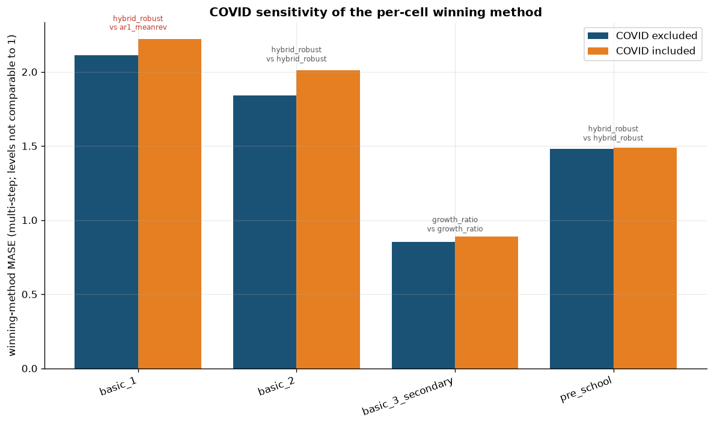
Figure 8 reports the comparison. The winning method changes in one cell of four. In the first cycle the winner moves from hybrid_robust at 2.114 to ar1_meanrev at 2.223, a gap of 5.2 per cent between two methods that are close enough for the switch to be a tie-break artefact rather than evidence of instability. The other three cells keep their winners, with gaps of 9.5, 4.4 and 0.5 per cent between the two settings.
One limitation of this exercise should be recorded. The elasticity audit is estimated once, on the panel with 2020 removed, and the resulting list of blocked cells is passed unchanged into the pandemic comparison. The verdict that determines whether the third cycle and secondary cell may use growth_ratio is therefore never recomputed with the pandemic year inside the estimation sample. The practical effect here is nil, because the three blocked cells remain blocked under either setting, but the conclusion that the winners are robust is conditional on a fixed set of blocks rather than being a joint statement about the selection procedure as a whole.
5.3.1 The selected methods
| Cell | Selected | MASE | Benchmark | Blocked | Runner-up |
|---|---|---|---|---|---|
| Pre-school | hybrid_robust | 1.482 | 1.547 | yes | naive_last |
| First cycle | hybrid_robust | 2.114 | 2.248 | yes | ar1_meanrev |
| Second cycle | hybrid_robust | 1.839 | 1.943 | yes | ecm |
| Third cycle and secondary | growth_ratio | 0.852 | 1.216 | no | theta_like |
No tie-break was applied in any cell, so each selection in Table 9 is the outright best available score rather than a simpler method chosen within tolerance of a better one.
The character of the selected methods matters for how the projection should be read. hybrid_robust is the median of three projections: holding the last observation, the median of the last three years, and an AR(1) reverting to the regional mean. At long horizons the AR(1) component converges on the regional mean and the median of the three collapses onto the middle of a tight cluster, which in practice is the ratio held close to its recent level. In the three cells where it is selected, the projection is therefore close to the convention of a fixed ratio, reached by a method that was tested against alternatives rather than assumed. The margin over the benchmark in those cells, between 4 and 6 per cent, is the honest measure of what the additional structure buys.
That margin is small, and the literature on forecast combinations suggests it is about what should have been expected. Wang et al. (2022) document that simple combinations set a benchmark that more elaborate weighting schemes rarely beat by large margins, and attribute the pattern to the estimation error introduced when weights are fitted rather than fixed. A gain of 4 to 6 per cent over holding the last observation, achieved by a median of three simple rules, sits comfortably inside that pattern. It is evidence that the ratio in those three cells carries little exploitable structure, which is itself an informative result for the projection.
Only the third cycle and secondary cell departs from that convention, and it does so through a coefficient of 0.506 estimated on a panel of long differences, deployed after passing an identification rule, and carried alongside two alternative coefficients as explicit scenario columns.
5.4 The observed ratio as a descriptive quantity
The projection divides pupils by a ratio estimated from what was observed. That ratio is positive rather than normative: it records the staffing that was actually in place alongside the enrolment that was actually recorded, including any period in which posts went unfilled. If the observed window contained unmet demand, the recorded ratio of pupils to teachers is higher than the ratio that would have obtained under full staffing, and carrying it forward into the denominator projects fewer teachers than a fully staffed system would require.
The mechanism through which that happens is documented. Santiago (2002) describes how school systems bring demand and supply into line in the short run, and identifies two routes: relaxing qualification requirements at the point of hiring, which produces out-of-field and emergency-certified teaching, and raising the workload of teachers already employed, through larger classes or more classes per teacher. Both routes raise the pupil to teacher ratio without any decision having been taken that the higher ratio is adequate. His conclusion is that in situations of excess demand there may be no observed quantity imbalance at all, only a change in the quality characteristics of the workforce, since hiring practices ensure that almost every classroom has someone in front of it. A ratio estimated from such a period encodes the adjustment, not the requirement.
Nothing in the block corrects for this, and nothing in the data would allow it to. The panel contains posts filled, not posts established, so the shortfall between the two is not recoverable from the source. The projection should be read as the staffing implied by the persistence of observed practice, which is a different quantity from the staffing implied by a target class size or a normative pupil-teacher ratio.
The distinction is the one Bruneforth, Gagnon and Wallet (2009) draw between simulation models with a fixed target date, which set a goal in terms of education indicators and compute the minimum requirements for reaching it, and projection models, which extrapolate the current situation. Their own exercise takes the first route and imposes a reference ratio of 40 pupils per teacher as a policy parameter. The same normative element survives in the current UNESCO Institute for Statistics methodology, which caps projected ratios at 40 to 1 in primary and 25 to 1 in secondary education so that recruitment targets embed a minimum quality standard (UNESCO and International Task Force on Teachers for Education 2030, 2024). Xia (2025) applies the ratio method to primary education in China with an explicit target of 19 pupils per teacher, computing required recruitment as projected enrolment divided by that target, less the current stock net of retirements. The block documented here takes the second route and imposes no reference ratio at any point. The consequence is that its output is not comparable with exercises of the first kind, and that a reader who wants a normative figure would have to supply the standard and rerun the division.
Two further cautions belong with the ratio itself. The first is that it is not a class size. The UNESCO and International Task Force on Teachers for Education 2030 (2024) report is explicit that the pupil-teacher ratio is a measure of the human resource capacity of a system and neither a measure of class size nor of the number of pupils a teacher faces in a classroom, since it is affected by part-time contracts, shift teaching, teachers with administrative duties and the number of classes each pupil takes. The same report notes that a national ratio conceals considerable variation between regions and schools. Both cautions apply with force to a projection built on 24 regional averages.
A second omission belongs here. The projection covers permanent teaching posts as recorded in the administrative panel. It carries no substitution reserve, so temporary replacement of absent teachers is outside the projected figures entirely. At 20 per cent of the 2025 stock a reserve would amount to 27,722 teachers, a quantity the chain does not model at any point and which Section 7 sets against the shortfall the chain does report. Any comparison between these figures and an operational staffing requirement should account for that gap. The omission is not peculiar to this exercise: the UNESCO and International Task Force on Teachers for Education 2030 (2024) projections, which estimate that 44 million additional primary and secondary teachers are needed worldwide by 2030, attribute 58 per cent of that total to replacing staff who leave the profession and 42 per cent to newly created posts, and model attrition rather than day-to-day substitution.
| Cell | 2024 observed | 2040 projected | Change |
|---|---|---|---|
| Pre-school | 15.39 | 15.63 | \(+1.6\%\) |
| First cycle | 13.44 | 13.54 | \(+0.7\%\) |
| Second cycle | 9.68 | 9.69 | \(+0.2\%\) |
| Third cycle and secondary | 9.52 | 9.20 | \(-3.3\%\) |
Table 10 shows the ratio implied by the selected projection rather than assumed by it. In the three cells where hybrid_robust is selected the ratio moves by less than two per cent over sixteen years, which is the frozen-ratio convention arrived at empirically. In the fourth the ratio falls by 3.3 per cent, and the fall is a direct consequence of an elasticity below one: teaching posts contract more slowly than enrolment, so the ratio of pupils to teachers declines. Holding the ratio constant is the convention adopted in the published reference study for Portugal (Nunes et al., 2025), so movement of this size is a deliberate departure from the benchmark and is reported as such.
5.5 Trajectory against the DGEEC convention
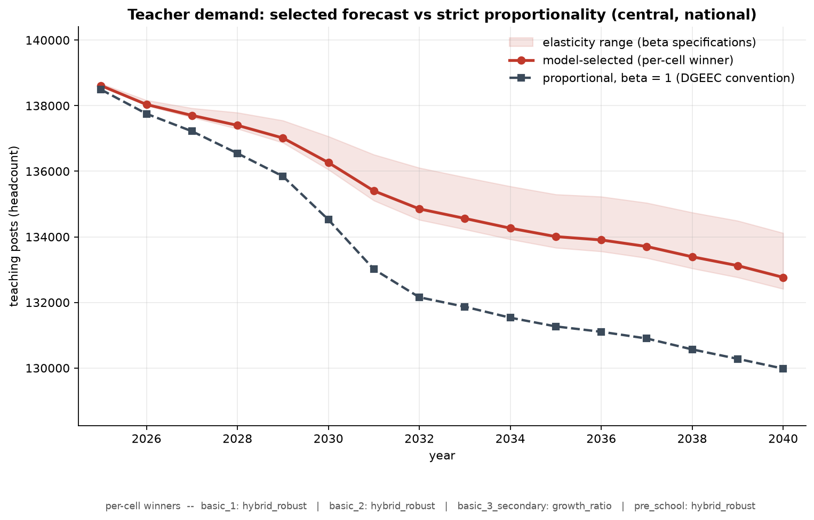
National demand in the central scenario falls from 138,611 posts in 2025 to 132,765 in 2040, a reduction of 4.22 per cent. Under strict proportionality, meaning an elasticity of one in every cell, the same enrolment path gives 138,490 falling to 129,982, a reduction of 6.14 per cent. The difference in 2040 is 2,783 posts, or 2.10 per cent of the selected level, and that difference is the elasticity assumption rather than demography. Figure 9 shows the two paths separating visibly from 2029 onward.
The elasticity band in the same figure spans the three coefficient variants carried in the contract, and it is narrow. The region-only coefficient of 0.285 gives 134,117 posts in 2040, the deployed two-way coefficient of 0.506 gives 132,765, and the five-year coefficient of 0.566 gives 132,412. The spread is 1,705 posts, 1.28 per cent of the selected level, and it is ordered as the arithmetic requires, with higher elasticities producing lower demand. The selected path runs close to the lower edge of the band because the deployed coefficient sits nearer the five-year estimate than the region-only one.
| Path | Change, 2025 to 2034 |
|---|---|
| Selected, per-cell winners | \(-3.14\%\) |
| Region fixed effects only | \(-2.26\%\) |
| Region and year fixed effects | \(-3.14\%\) |
| Five-year long difference | \(-3.37\%\) |
| Strict proportionality | \(-5.02\%\) |
| DGEEC published trajectory | \(-5\%\) |
Table 11 places the block against the published study. The proportional path is the DGEEC convention reproduced: enrolment falls by about five per cent over the window and the ratio is held constant, so teaching posts fall by the same proportion. The reproduction is close, at \(-5.02\) per cent against a published \(-5\) per cent, which is a check on the enrolment input and on the conversion arithmetic rather than a finding. The selected path falls by 3.14 per cent over the same window, and the 1.9 percentage point difference is the elasticity. The published trajectory is quoted on the study’s own school-year window, which runs to 2034/35 and aligns with the calendar window 2025 to 2034 used here.
Two quantities in the published study should not be conflated when this comparison is read. The figure of about \(-5\) per cent refers to enrolment and, under a constant ratio, to teaching posts required. A second published figure of about \(-37\) per cent refers to the teachers active in 2024/25 who are still in service in 2034/35, falling from roughly 121,900 to 76,300. That is a stock of survivors and belongs to the supply side, where it is the counterpart of the retirement wave rather than of the demand path. On the demand side the block agrees with the published benchmark once the same convention is applied.

The demographic assumption moves the result considerably more than the elasticity does. Figure 10 shows the three scenarios inherited from the enrolment block. The central path falls by 4.22 per cent to 132,765 posts. The high scenario ends at 138,797, within 0.02 per cent of where it began, after declining to about 137,100 in 2032 and recovering thereafter. The low scenario declines continuously to 126,404, a fall of 8.67 per cent. The span between the high and low paths in 2040 is 12,393 posts, 9.33 per cent of the central level, which is more than twice the movement of the central path over the whole horizon and seven times the spread across the elasticity variants.
That ordering carries a message about where effort should be spent. The single largest source of variation in projected teacher requirements is the demographic input inherited from the enrolment block, and the conversion parameters estimated at length in this section move the result by a fifth as much. Santiago (2002) makes the same point from the determinants side, placing the size of the school-age population first among the factors that govern teacher requirements and treating class size and teaching load as instruments that adjust around it.
5.5.1 Composition by cell
The aggregate conceals movement between cells that bears on recruitment, because cells differ in the subject qualifications they require. Pre-school demand falls 3.80 per cent from 16,771 to 16,135, the first cycle 2.88 per cent from 28,710 to 27,882, the second cycle 6.64 per cent from 19,855 to 18,536, and the third cycle and secondary cell 4.18 per cent from 73,275 to 70,212.
Pre-school is the only cell with an interior peak, reaching 17,530 posts in 2029 before turning down. The peak is inherited from the enrolment block, where the same cell rises to 2029 as the demographic echo passes through, and it means that requirements in that cell expand for the first five years of the horizon while the national total is already contracting.
5.5.2 Regional distribution
Regional demand changes range from a fall of 12.24 per cent in Tâmega e Sousa to a rise of 4.69 per cent in Grande Lisboa, a spread of 16.92 percentage points. Three of the 24 regions grow: Grande Lisboa at 4.69 per cent, Península de Setúbal at 4.35 per cent and the Algarve at 3.31 per cent. The eight regions of the Norte lose about 12 per cent of their teaching posts. Grande Lisboa rises from 21.15 to 23.11 per cent of national demand while the Área Metropolitana do Porto falls from 16.50 to 15.14 per cent.
The regional variation is almost entirely between NUTS II regions rather than within them, which follows from the enrolment block, where growth factors are computed at NUTS II level and applied uniformly to the constituent regions. The mean change across NUTS II groupings spans 16.69 percentage points, from \(-12.00\) per cent in the Norte to \(+4.69\) per cent in Grande Lisboa. The largest spread within any grouping is 0.742 percentage points, in the Centro. The ratio is 22.5 to one.
That ratio is lower than the 32 to one recorded for enrolment in Section 4, and the reason is the elasticity. Because the third cycle and secondary cell converts enrolment changes at 0.506 rather than at one, regional differences in enrolment are damped in their passage to teaching posts. The damping is visible in the proportional column: demand in the Norte falls 12.0 per cent on the selected path and would fall 16.3 per cent under strict proportionality, and the 4.3 percentage point wedge is the elasticity at work. What survives of within-region variation comes from the cell composition of each region’s enrolment and from its starting ratio, not from differentiated demography.
The NUTS III figures should be read with the caution the forecasting literature attaches to disaggregated projections. Richardson and Tan (2007), reviewing the labour demand models used for skills planning in Australia and elsewhere, report that projection reliability falls as the horizon lengthens and falls further as projections are broken down by occupation, by qualification and by region, to the point where regionally disaggregated figures were judged unsuitable for capacity planning. Their comparison of the MONASH model’s projections with outcomes found that for three of five detailed occupations the model had the direction of change wrong over a nine-year window. Their recommendation is to use such models to separate skills in growing demand from skills in declining demand rather than to match training to projected needs precisely. The regional figures above are best used in that spirit: the contrast between a contracting Norte and an expanding Grande Lisboa is the finding, and the individual NUTS III percentages carry more precision than the method can support. The same caution applies to every regional figure reported later in this report.
5.5.3 Consistency with the adjacent blocks
The block runs eight internal checks against the enrolment, supply and gap blocks, of which seven are pass or fail conditions and one is informational. All seven pass and none is skipped. The cells match those the gap block expects, the horizon is complete, the reporting scenarios are present and the excluded scenario has not leaked through, the NUTS III codes match the gap block’s geography in all 24 cases, the contract schema is readable without ambiguity, and projected demand is positive and bounded throughout.
Two aspects of this result should be read carefully. That no check was skipped establishes that the supply and gap outputs existed when the demand block ran, which means this is a second-pass execution. The checks are therefore comparing the current run against outputs produced by an earlier vintage of the same block, a property recorded in Section 3 and unchanged here.
The eighth check compares projected demand in 2025 against the workforce stock the supply block projects for the same year. The two agree exactly, at 138,611 posts with a residual of zero. The block labels this informational rather than a validation, and the label is correct: both quantities are built from the same 2024 headcount and agree by construction up to the enrolment ratio. Exact agreement here is evidence that the arithmetic is consistent, not that either figure is right.
5.6 Limitations of the demand block
Seven limitations condition the reading of this section.
The departure from proportionality rests on one cell. Three of the four cells are projected by a method that holds the ratio close to its recent level, so the elasticity assumption is inactive in them by construction. The entire 2,783-post difference between the selected and proportional paths in 2040 comes from the third cycle and secondary cell. That cell’s coefficient was estimated on a full panel of 144 long differences and is distinguishable from zero at \(p = 0.001\), but the origin at which it passed the bake-off gate is 2022, which is a test window of two years.
The admissible band of 0.30 to 1.20 carries no justification. It functions as a smallest effect size of interest and is prespecified, which meets half of what Lakens (2017) requires of such a bound, but it appears in the configuration without a source or a derivation. It is a necessary condition in every version of the decision rule and it is decisive in pre-school, where the estimate falls 0.05 below the floor. A reader who disagreed with the band would obtain a different set of deployed cells.
The band is applied to point estimates rather than to intervals. The equivalence-testing procedure that corresponds to this kind of rule, following Schuirmann (1987), requires the confidence interval to lie inside the admissible region. No cell satisfies that criterion, including the deployed one, whose interval extends 0.04 below the floor. The rule as implemented is therefore more permissive than its inferential analogue, and the blocking of cells on the strength of non-rejection of a zero elasticity should not be read as evidence that the elasticity is zero.
The deployed coefficient is identified from variation that the projection does not use. With year fixed effects the coefficient comes from regional deviations around each year’s national mean, while the projection applies it to the common national decline that those effects absorb. The region-only alternative of 0.285 retains that variation and is carried as a scenario, and the 1,705-post spread between the variants is the visible cost of the disagreement.
The bootstrap inference is reported in one variant only. Following Cameron, Gelbach and Miller (2008), the wild cluster bootstrap with the null imposed and Rademacher weights is the appropriate procedure at 24 clusters, and it is what was used. MacKinnon and Webb (2018) recommend computing the unrestricted variant as well and treating agreement between the two as a check on validity. That comparison was not carried out here. The configuration in which they document failure involves a treatment dummy active in few clusters and does not arise in this design, so the omission is a missing diagnostic rather than a known problem.
The ratio is descriptive. It records staffing as observed, including any period of unmet demand, and carrying it forward projects the persistence of observed practice rather than the staffing implied by a normative standard. It is also not a class size, and it conceals variation below the regional level. No substitution reserve is included at any point.
The pandemic sensitivity does not extend to the elasticity audit. The blocked cells are determined once, on the sample with 2020 removed, and that determination is not revisited when the pandemic year is restored for the bake-off comparison.
6 Teacher supply
The supply block projects the existing teaching workforce forward, ages it through a chain of five-year bands, removes those who leave, and computes the annual entry required to meet the demand path established in Section 5. It produces the recruitment series that Section 7 will then test against the capacity of initial teacher education to deliver.
The block covers mainland public provision over 2025 to 2040, estimated on a stock series running from 2014 to 2024 and a flow series running from 2016 to 2024. The flow series is two years shorter than the stock series for reasons that are structural rather than accidental: the first year of the stock series cannot yield a transition because there is no preceding year, and the estimator discards one further year at the start of the window. Years 2011 to 2013 were removed from the input after being identified as exact duplicates of 2014, a placeholder artefact in the source panel rather than observations.
One convention governs how the flow diagnostics should be read and is stated here because it is easy to misinterpret. Each row of a flow series is labelled by the closing year of the transition it describes, while the stock it reports is the opening stock of that transition. A row labelled 2016 therefore carries the headcount observed at the end of 2015. Figures taken from the flow diagnostics and figures taken from the stock series are not directly comparable year by year without applying this offset.
Three further properties of the block govern how its output should be read, and stating them at the outset avoids repeating them at every turn.
The first is that entry is unconstrained. Whatever the demand path requires is assumed to be hired. No ceiling derived from the qualifying pool is applied anywhere in this block. The recruitment series is therefore a statement of what the demand path asks for, and the question of whether the system can deliver it belongs to Section 7.
The second is that the projected stock carries no information about supply. Because entry is endogenous, recruitment is the residual that reconciles the ageing workforce with the demand path, and the stock series reproduces the demand series from Section 5 number for number: 138,611 in 2025 and 132,765 in 2040 in both. Every statement about supply in this section is therefore a statement about a flow, whether retirements, total exits, or recruitment. No statement about the projected stock is a statement about supply.
The third is that the block publishes two recruitment paths, not one, and they differ by 8.8 per cent over the horizon. Any figure quoted from this block needs to be attributed to one specification or the other.
6.1 Cohort chain and exit rates
The workforce is partitioned into nine age bands, from under 25 to 60 and over, and advanced one year at a time. Ageing moves one fifth of each band into the next band annually, which is the structural consequence of five-year bands and annual steps. The 60 and over band is terminal for ageing purposes and receives no direct entry, a property required for the identity used to recover its exits to hold. Within each band, a hazard removes a fraction of the stock to retirement or attrition. Figure 11 sets out the structure with the deployed hazards attached to each band.
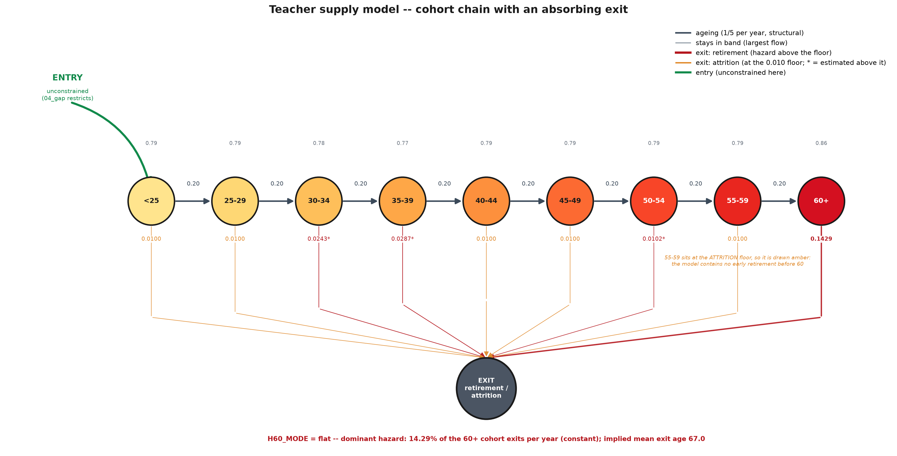
The arithmetic is closed and verified. Entries minus exits reproduces the observed change in stock, and the hazard multiplied by the stock reproduces gross exits band by band. The residuals on these identities are of the order of \(10^{-11}\) or smaller, which is floating-point error rather than approximation. The same helper functions are used by the historical flow estimator, by the band diagnostic, and by the projection, so the three cannot drift apart.
What the arithmetic cannot do is separate gross entries from gross exits. Net flows do not identify them. A band whose headcount is unchanged may have experienced no movement at all or may have replaced a third of its members. The estimator resolves this by imposing an attrition floor of one per cent on every band below 60 and recovering the remainder from the identity. The floor is an assumption, and its consequences are visible in the estimates: five of the nine bands sit exactly on it in every year of the window, which is to say that their observed series carry no behavioural information whatsoever. Only three bands below 60 have hazards estimated above the floor, at 0.0243 for ages 30 to 34, 0.0287 for ages 35 to 39, and 0.0102 for ages 50 to 54.
The estimated hazards differ from those produced by the previous version of the estimator in one band by a wide margin. The earlier specification returned 0.0026 for the 55 to 59 band, roughly a quarter of the current floor. Imposing the floor on that band multiplied its hazard by a factor of 3.9.
The observed history that the chain is estimated on is a workforce whose mass has migrated toward the upper bands over a decade. The total grew modestly, from 130,281 in 2014 to the age-band sum of 139,098 in 2024, while its composition changed considerably. Figure 12 shows the distribution one year at a time and makes the movement legible: the 2014 profile peaks around ages 45 to 54 and falls away sharply above 55, while the 2024 profile has its highest single value in the open 60 and over band.
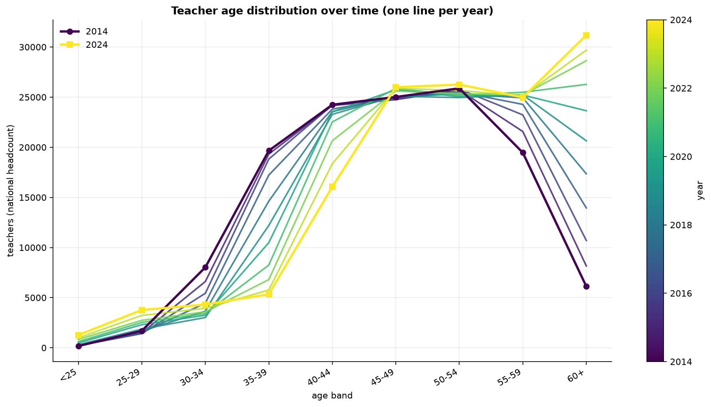
A diagnostic was built to test a claim that the block might otherwise have made without support. Band headcounts have fallen sharply over the decade in the younger and middle ranges, with the 35 to 39 band falling from 19,666 to 5,331 between 2014 and 2024, a loss of 72.9 per cent, and the 30 to 39 range as a whole falling from 21.3 per cent to 6.9 per cent of the workforce. Figure 13 sets out the movement band by band. The convenient reading is that this is composition: cohorts ageing out of one band and into the next, with no implication that anyone left. Testing that reading requires following each band forward and subtracting the entrants who arrived during the interval and aged into the destination band, and the entrants have to be located rather than assumed. They are located by injecting each year’s gross entry vector into an otherwise empty panel and ageing it forward through the model’s own arithmetic to the target year.
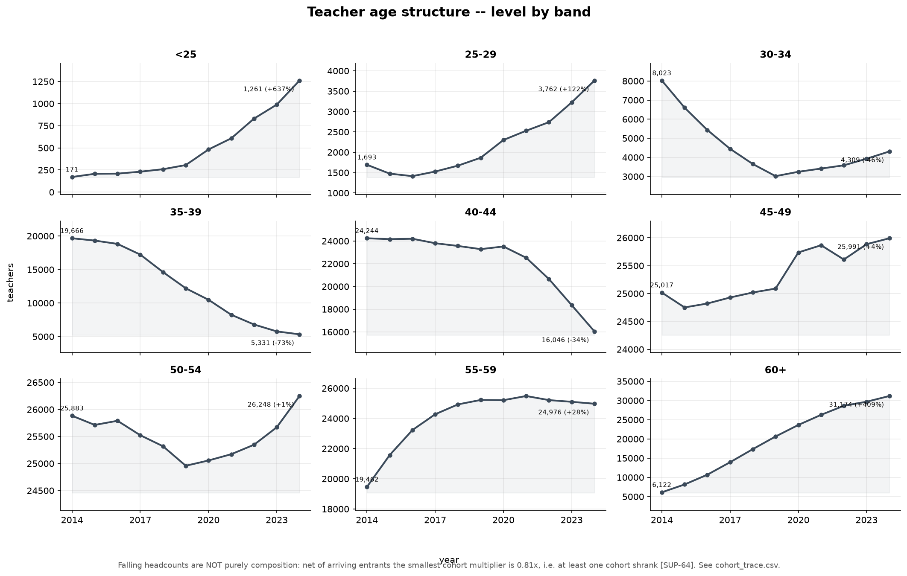
The test does not support the composition reading. Of the seven cohorts followed, three fall below 0.99 on the net multiplier, at 0.813, 0.829 and 0.867, with the lowest belonging to the cohort passing from ages 35 to 39 in 2014 to ages 45 to 49 in 2024. One cohort, from ages 45 to 49 to ages 55 to 59, falls below unity even on the gross measure at 0.9984, before any entrants are subtracted. Falling band headcounts are therefore partly composition and partly genuine cohort shrinkage, and the composition claim should not be repeated without reference to the trace.
Two further results come out of the propagation. Of 40,832 gross entries injected across nine cohorts, 37,895 are still present in 2024, a survival rate of 92.8 per cent. The implied annual attrition rises from 1.17 per cent for the most recent cohort to 2.44 per cent for the 2016 cohort, which is consistent with cohorts passing through the 30 to 34 and 35 to 39 bands, the only two in the younger range with hazards above the floor. Of those survivors, 33,130 sit in the seven destination bands the trace examines, leaving a residual of 4,765 who survived but are still in the under-25 and 25 to 29 bands. Set against the 2024 combined stock of those two bands, 5,023, this indicates that 94.9 per cent of teachers under 30 in 2024 entered in the previous nine years.
The trace rests on one behavioural assumption that the arithmetic does not supply: entrants are taken to face the same band hazards as incumbents. If lateral entrants, who are the larger of the two entry channels, leave faster than incumbents of the same age, then the 0.813 multiplier is an overestimate and more cohorts shrank than the trace reports.
6.2 The 60 and over band specification
Almost the entire retirement wave comes out of one band, so the specification of that band deserves separate treatment before the wave itself is discussed.
The band is not in steady state, and this is the central diagnostic finding. Its stock grew from 6,122 in 2014 to 31,174 in 2024, a factor of 5.1; across the nine transitions of the flow window the opening stock rose from 8,162 to 29,687, a factor of 3.6. Over the same period the ageing inflow feeding the band has been close to flat, between 4,856 and 5,098 a year since the transition ending in 2018. The implied steady-state headcount, computed as inflow divided by the observed hazard, exceeds the actual headcount in every year of the window, by 70 per cent at the transition ending in 2018 and by 30 per cent at the one ending in 2024. The band is still filling. A ratio of exits to stock computed on a filling band understates the structural hazard, because the denominator is growing for reasons unconnected to exit behaviour. The guard conditions in the estimator did not bind in any year, so the diagnostic is clean.
Figure 14 shows what this looks like in the data. The observed 60 and over hazard falls steeply from 0.217 at the transition ending in 2016 and settles near 0.10 for most of the window, recovering to 0.119 at the end. The deployed value sits above the estimation-window mean throughout, and the gap between the two lines is the adjustment being made.
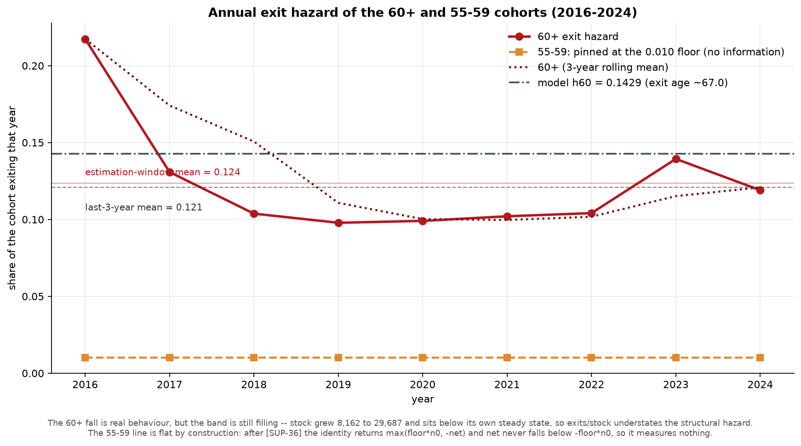
This is the argument for setting the base hazard from the statutory exit age rather than from a window mean, and it is a sound argument. The base is 0.142857, the reciprocal of seven years in an open band starting at 60, which implies a mean exit age of 67.0. The alternatives are the full-window mean at 0.1237, implying 68.1, the post-2017 mean at 0.1093, implying 69.2, and the last-three-year mean at 0.1208, implying 68.3.
The direction of the adjustment should be stated plainly. The deployed base sits 15.5 per cent above the full-window estimate and implies retirement 1.1 years earlier. A higher hazard produces more retirements and therefore more required recruitment, which is the direction that reinforces a scarcity finding. The justification for the adjustment is independent of that convenience, but the coincidence is worth recording, and the sensitivity grid prices it: moving the hazard across the plausible range moves cumulative recruitment from minus 15.6 per cent at 0.1000 to plus 21.3 per cent at 0.2500.
A second specification of the same band is implemented and produces materially different results. Instead of a constant hazard, it models the band as a tenure queue in which the hazard depends on how long a teacher has been in the band: 0.060 for the first three years, rising through 0.223 and 0.387, and reaching 0.550 from the sixth year onward. The implied mean exit age is 65.2.
The two specifications describe incompatible behaviour. The queue says that almost nobody leaves between 60 and 63 and that there is a wall at 66. The flat chain says that 14.29 per cent leave every year, uniformly, regardless of how long they have been eligible. The queue is the more plausible description of how retirement decisions are actually made around a statutory threshold, and it is the specification that is not live.
The consequences of the choice were decomposed by projecting a third path: the queue shifted along the tenure axis until its mean exit age matches the flat chain’s 67.0, which requires a shift of 2.891 years. This isolates the effect of the hazard shape from the effect of the exit age level. Cumulative recruitment is 90,575 under the flat chain, 87,275 under the age-matched queue, and 98,579 under the queue as specified. The shape of the hazard is therefore worth minus 3.6 per cent and the level of the exit age is worth plus 13.0 per cent, for a net of plus 8.8 per cent. Figure 15 separates the two bands of effect.
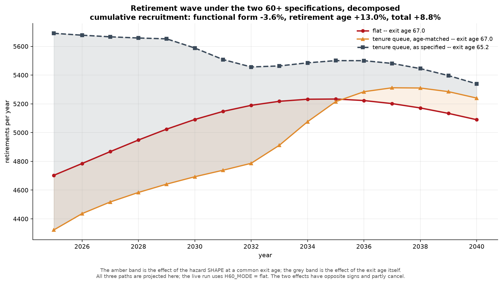
The two channels have opposite signs, so the headline gap of 8.8 per cent is the net of two forces pulling apart and understates both. Quoting it alone conceals the fact that even at a common exit age the two specifications disagree by 3.6 per cent, which means the shape of the hazard within the band does real work independently of where the band’s centre of mass sits.
Two features of the comparison are visible only in the full annual series, and both are legible in Figure 15. The difference between the two specifications narrows over time, from 987 retirements a year in 2025 to 249 in 2040, a reduction of 74.8 per cent. The choice of specification matters most in the years closest to the present, which is precisely where a workforce plan would need it to be reliable. And the age-matched queue crosses the flat chain in 2036, producing fewer retirements before that year and more after it, which confirms that the hazard shape redistributes the wave in time even when the exit age is held constant.
6.3 Composition of the retirement wave
Evaluated at 2024 stocks, the annual retirement wave is 4,703 teachers. The 60 and over band contributes 4,453, being 31,174 teachers at a hazard of 0.142857, and the 55 to 59 band contributes 250, being 24,976 teachers at the floor of 0.0100. The older band accounts for 94.69 per cent of the wave.
The 250 figure is not an estimate. The observed hazard for the 55 to 59 band sits exactly on the attrition floor of 0.0100 in every one of the nine years in the flow window, which is the flat amber line in Figure 14. Once the floor is imposed, the identity returns the maximum of the floor times the opening stock and the negative of the net flow, and the net flow for that band never falls below the floor times the opening stock. The series is constant by construction and measures nothing. The 250 retirements a year attributed to the band are an assumption.
The direct consequence is that the model contains no early retirement before age 60. Whether this is a reasonable description of current behaviour is an empirical question the data in hand cannot settle, since the series that would answer it has been rendered uninformative by the floor. What can be quantified is the cost of the assumption being wrong: raising the band’s hazard to 0.02 adds 3.2 per cent to cumulative recruitment, and raising it to 0.05 adds 11.6 per cent.
Because 94.7 per cent of the wave comes from a single hazard, and that hazard is set from the statutory exit age rather than estimated, every statement about the timing of the retirement wave is a statement about the specification discussed above and about nothing else. The sensitivity grid confirms the ordering: the hazard for the 60 and over band moves cumulative recruitment more than any parameter other than the demand path itself.
The cumulative figures are the strongest result the block produces. Over the sixteen years, retirements total 81,260 under the flat chain and 88,510 under the tenure queue, against a 2024 age-band sum of 139,098. Between 58.4 and 63.6 per cent of the current workforce retires within the horizon, depending on the specification. The annual average is 5,079 under the flat chain and 5,532 under the queue.
Figure 16 places the wave against the recruitment it induces. The wave is the lower line and rises gently to a plateau around 2034; recruitment is the upper line and exceeds it in every year, by a margin that varies with the demand path rather than with anything in the supply model.
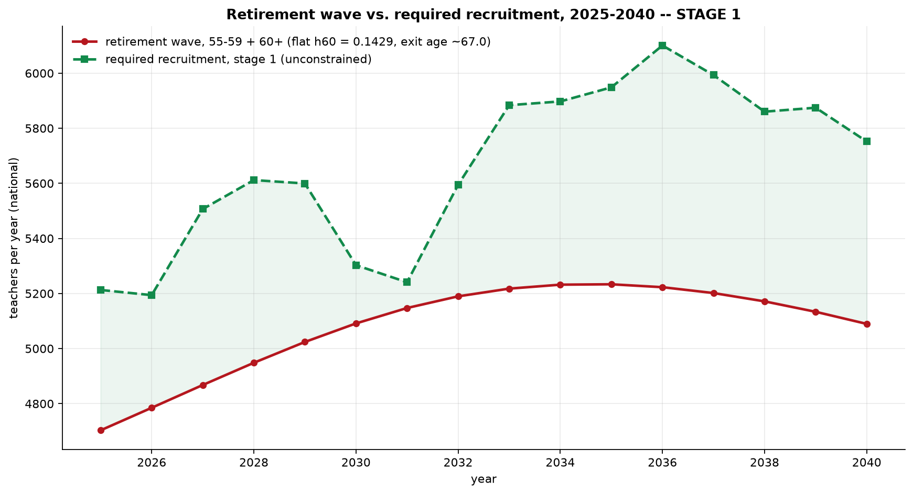
The wave is not a peak that passes. The stock aged 55 and over falls from 56,237 in 2025 to 51,435 in 2040, a decline of 8.5 per cent. A workforce plan built on the expectation that the retirement bulge clears and the system returns to a lower replacement rate would be wrong: the contingent aged 55 and over remains above 51,000 throughout.
A further component of the exit flow is separated in the projection output and is easy to overlook because the retirement wave is defined to exclude it. Total exits run from 5,699 in 2025 to 6,110 in 2040, against retirements of 4,703 and 5,090. The difference, attrition from bands below 55, is between 961 and 1,020 a year and represents between 15.7 and 17.5 per cent of all exits. Expressed as rates on the 2024 stock, the first projected year has total exits at 4.10 per cent, retirements at 3.38 per cent, and sub-55 attrition at 0.72 per cent. The retirement narrative covers roughly five sixths of the outflow problem.
This component interacts with the specification choice in a way that is not obvious. In 2025 the difference between total exits and the wave is identical to ten decimal places under both specifications, which confirms that the tenure queue touches only the 60 and over band. By 2040 the two diverge, at 1,085 against 1,020, a gap of 6.4 per cent. The mechanism is indirect: the queue requires more recruitment, those recruits enter bands below 55, and they generate additional attrition at the floor. The specification of the oldest band feeds back into the attrition of the youngest through the recruitment channel.
6.4 The graduate channel and the lateral channel
The entry profile determines which bands receive new recruits, and it was estimated from the same flow window as the hazards. The heuristic repair built into the estimator did not fire, so the profile is the raw shape.
The shape is not what a system drawing primarily on initial teacher education would produce. The largest single receiving band is 40 to 44, at 25.98 per cent of entries, which at the projected requirement is 1,471 teachers a year. The 45 to 49 band takes a further 17.78 per cent. The two bands below 30, which together define the graduate channel, take 27.68 per cent between them, leaving 72.32 per cent for the lateral and re-entry channel. The bands at 50 and over take 15.07 per cent, which is 853 teachers a year recruited at ages 50 to 59, all of whom will reach the statutory exit age within the projection horizon.
Applied to the requirement of 5,661 a year, the split gives 1,567 through the graduate channel and 4,094 through the lateral and re-entry channel. The lateral channel is 2.61 times the size of the graduate channel. Over the horizon the cumulative figures are 25,072 and 65,503, which sum to the 90,575 of the flat chain. Figure 17 shows the two bands separately against the historical record.
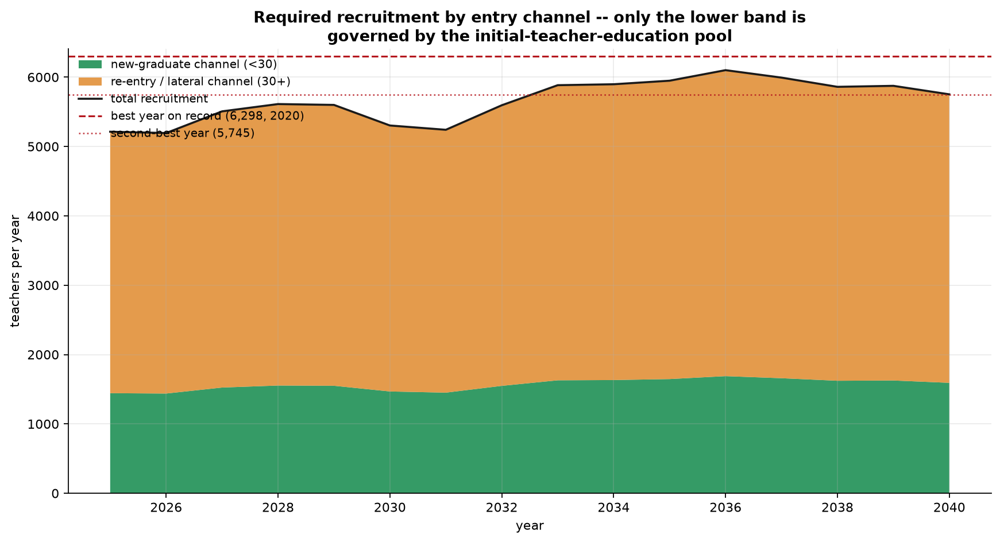
This division carries the main implication of the block for what follows. Only the graduate channel is governed by the output of initial teacher education. The lateral channel is drawn from the contracted reserve, from teachers returning after a period outside the system, and from career changers, and none of those sources is constrained by the number of masters graduates in a given year. The reserve shrinks as the workforce shrinks, and it has no stock model in this block or in any other. A recruitment ceiling imposed in Section 7 on the total would be wrong in both directions: too tight on the lateral channel, which the qualifying pool does not govern, and potentially too loose on the graduate channel if the pool is smaller than the requirement.
The channel share is frozen across the horizon, and the observed series is not. The young share rose from 4.4 per cent in 2016 to 29.2 per cent in 2024, with an ordinary least squares slope of 2.87 percentage points a year. The projection takes the last three years, 27.68 per cent, and holds it constant from 2025 onward. The ratio of young to total recruitment is 0.27681286 in all sixteen projected years without variation, which is why the boundary between the two bands in Figure 17 is almost flat.
The decision to freeze is defensible on its face, since extrapolating 2.87 percentage points a year for sixteen years would put the young share above 70 per cent by 2040, which no plausible reading of the qualifying pool supports. The sensitivity grid shows that the choice costs little in aggregate: the three alternative windows move cumulative recruitment between minus 0.26 per cent and plus 0.49 per cent. The choice matters for the split rather than for the total, and the split is what Section 7 will restrict.
Entries into the youngest band have risen sharply in absolute terms, from 45 in 2016 to 480 in 2024, a factor of ten, with the full-series mean at 213 and the last three years averaging 388. Figure 18 sets out the series. Set against the annual requirement of 5,661, the 2024 figure is 8.5 per cent. The growth is real and the level remains small.
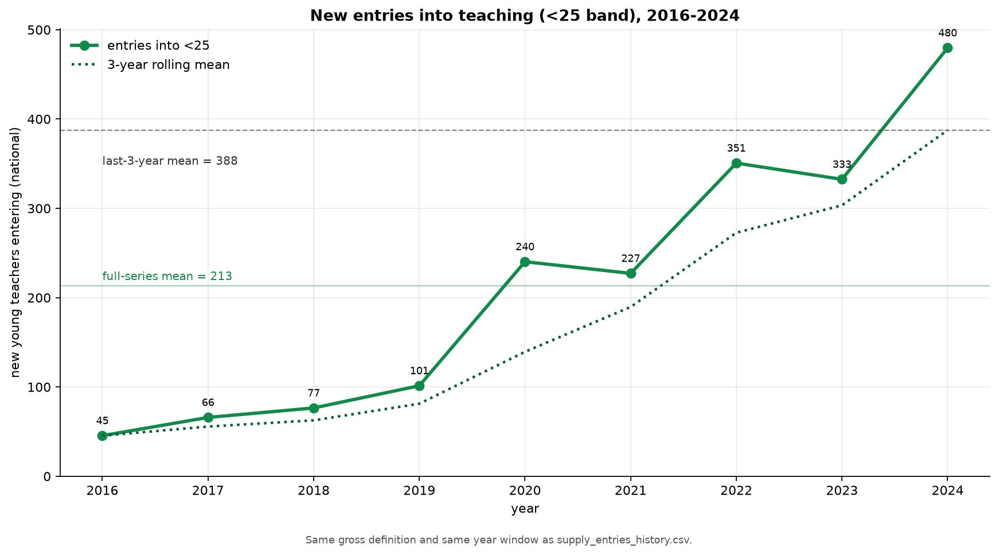
The regional dispersion of the channel split is wider than the national average suggests, and it is the finding most likely to affect how a qualifying-pool constraint should be applied. At NUTS II level the young share runs from 11.6 per cent in the Centro region to 51.2 per cent in the Lisbon metropolitan area, a factor of 4.4. At NUTS III level it runs from 3.0 per cent to 51.2 per cent, a factor of 17.0. Five NUTS III regions sit below 10 per cent. In the region with the lowest share, 97 per cent of modelled entries are lateral, so a ceiling on graduate entry would barely touch it. Figure 19 shows how unevenly the cumulative requirement is distributed across the finer partition.
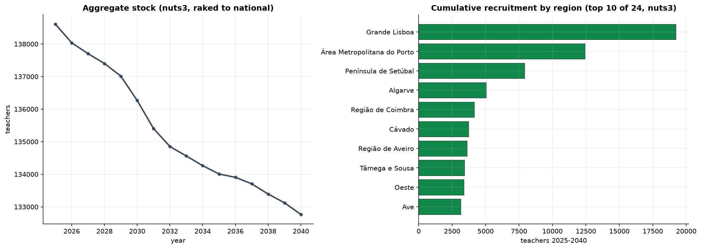
One property of the regional results limits how they can be used. The regional series are raked to reproduce the national totals, and the raking discards 2.3 per cent of regional recruitment on average at NUTS II and 6.8 per cent at NUTS III. That discarded quantity is regional heterogeneity, arising from zero-flooring and from region-specific hazard sets, which the national model does not carry. A further consequence is that recruitment for a given region is not invariant to the level of aggregation: three NUTS II regions are composed of a single NUTS III region, and for all three the recruitment figure falls by exactly 5.24 per cent when moving from the coarser to the finer universe, which is the ratio of the two raking factors. The number attributed to a region depends on how many other regions are in the table, and Section 7 fixes one universe and stays with it.
6.5 Endogenous and unconstrained entry
Recruitment in this block is the quantity that closes the gap between the aged workforce and the demand path. Each projected year is evaluated twice: a first pass ages the workforce with zero entry to size the shortfall, and a second pass applies the resulting entry and advances the state. The state produced by the first pass is discarded.
No feasibility constraint is applied. The block assumes that whatever the demand path requires is hired, and the manifest records the entry constraint as absent with the restriction assigned to Section 7. This is a deliberate division of labour rather than an oversight, and it has the merit of keeping the arithmetic of the workforce separate from the arithmetic of the training pipeline. It also means that the recruitment series should be read as the size of the ask.
Three alternative entry policies were projected to place the base path in context, and Figure 20 shows the four stock trajectories together. Under replacement, where entry equals exits, the stock is held at its 2024 value of 139,098 and cumulative recruitment is 98,078, which is 7,503 more than the endogenous path requires. Under constant entry at the historical mean of 4,537 a year, the stock falls to 117,041 and cumulative recruitment is 72,590. Under zero entry, the stock falls to 55,141, a decline of 60.4 per cent over sixteen years.
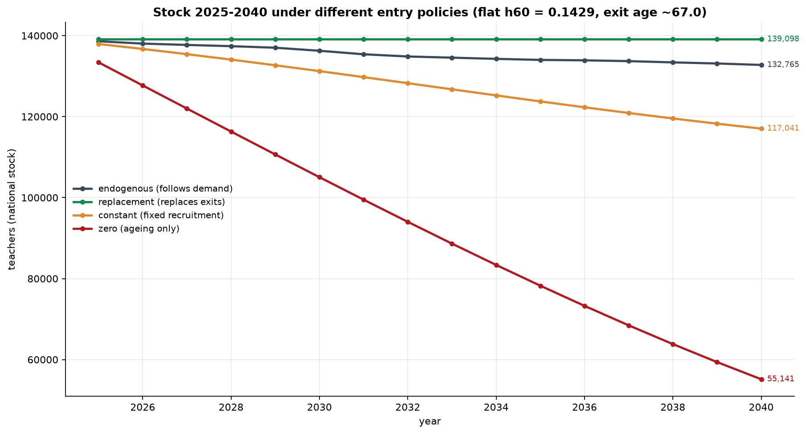
The zero-entry path is the one worth dwelling on, because it measures the inertia of the system rather than any policy. Absent all recruitment, ageing and attrition alone remove three fifths of the workforce within the horizon. This is the quantity that any recruitment policy is working against, and it sets the scale of the problem more clearly than the recruitment series itself.
The age structure the endogenous path arrives at is not a rejuvenated one. Figure 21 compares 2024 with 2040 under the base and replacement policies. The 60 and over band reaches 25.4 per cent of the workforce by 2040 under the base policy, above the 22.4 per cent it occupies in 2024. At 33,722 it also sits 7.5 per cent above the steady state of 31,364 implied by its own 2040 feeder, which means the band is still shedding an inherited bulge at the end of the horizon rather than converging on its long-run level from below. The ageing problem is not resolved within the projection window under any of the policies tested.
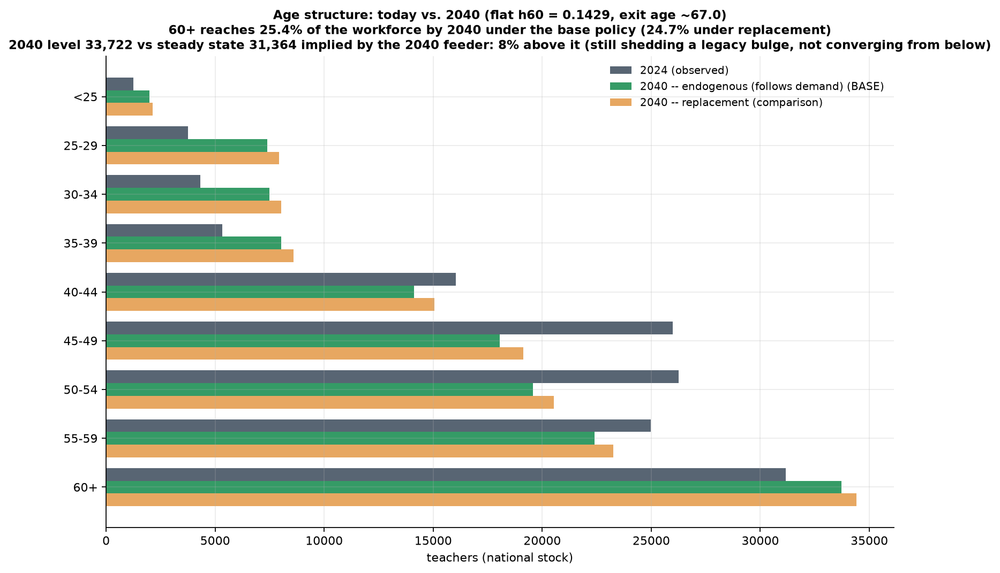
The parameters that move the cumulative requirement were ranked by a one-at-a-time grid of nineteen scenarios, reported in Figure 22. The ordering is unambiguous: the demand path first, the 60 and over hazard second, and every other lever a distant third. The channel share scenarios move the total by less than one per cent in either direction, which is the quantitative form of the point made above that the channel split matters for composition rather than for volume. Two scenarios in the grid carry a caveat. The ageing rate scenarios mutate the transition parameter without re-estimating the hazards and the entry profile, both of which were estimated under the original value, so those two bars are internally inconsistent. The effect is small, at plus and minus roughly 4.5 per cent, but the inconsistency is real.

The uncertainty around the recruitment path was quantified by Monte Carlo with 2,000 draws, perturbing the retirement age and scale, the hazards for the 35 to 39 through 55 to 59 bands, and the demand path as a random walk. Cumulative recruitment over the horizon has a tenth percentile of 91,311, a median of 98,773, and a ninetieth percentile of 106,963, giving a spread of 15.85 per cent of the median. This median belongs to the tenure-queue path shown in Figure 23, not to the flat chain that this block identifies as live, and the two differ by 9.1 per cent.
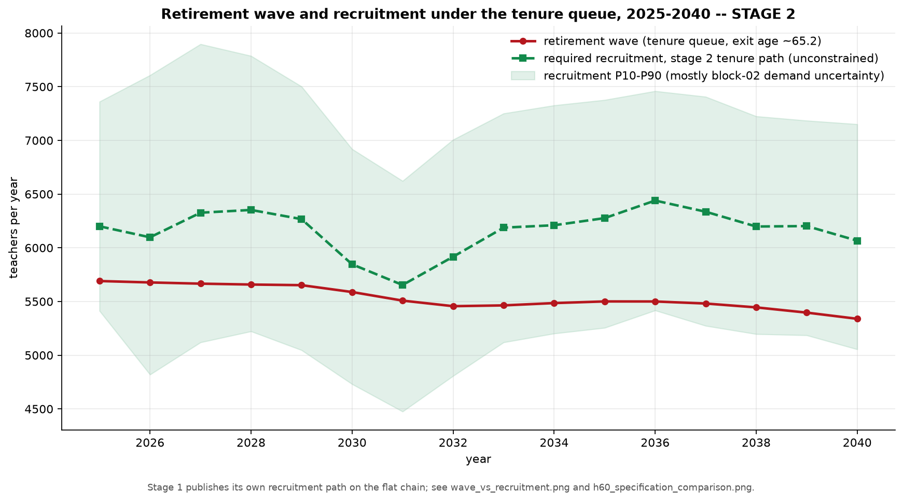
The decomposition of that band by source requires care in how it is reported. In variance terms the demand path accounts for 78.8 per cent, the retirement age for 20.6 per cent, and all other hazards for 0.7 per cent, a ratio of 3.83 to 1 between the first two. In standard deviation terms, which is the unit in which the band is read off a chart, the figures are 793, 405, and 72, a ratio of 1.96 to 1. The retirement age is worth roughly half the demand path, not a quarter. The variance shares are correct and the 3.83 ratio does not transfer to the width of the interval.
The dominance of the demand path has a mechanical explanation. Recruitment is 4.6 per cent of the demand level, so a proportional shock to demand arrives at recruitment multiplied by roughly 22. The band around the recruitment path is mostly imported uncertainty from Section 5 rather than a measure of what this block does not know.
The width of the band does not grow monotonically, as Figure 23 shows. It is 31.2 per cent of the median in 2025, widens to 44.6 per cent in 2026, and narrows to 34.4 per cent by 2040. The early opening reflects the demand dip and the small residual through which it passes.
6.6 The scale of the recruitment effort against history
The projected requirement averages 5,661 teachers a year over the horizon and 5,505 over the first ten years, peaking at 6,101 in 2036. The nine years of observed history give a mean of 4,537, a median of 4,618, and an average of 4,860 over the last five years. The requirement is 24.8 per cent above the historical mean and 22.6 per cent above the median.
The two reference years that frame this comparison both need qualification. The highest year on record is 2020 at 6,298, which is the first pandemic year. The second highest is 2016 at 5,745, which is the opening year of the flow window and carries a young share of 4.4 per cent that never recurs. Excluding 2020, the historical mean falls to 4,317 and the requirement stands 31.1 per cent above it. Excluding both years, the mean falls to 4,113.
The comparison against the second-highest year is where the arithmetic and the operative reading diverge, and Figure 17 draws both reference lines across the projection. The requirement averages 1.5 per cent below the 5,745 recorded in 2016, which taken alone would suggest the ask is within historical reach. The distribution tells a different story: no projected year exceeds the all-time high, and eight of the sixteen exceed the second-highest year. The system would have to beat a year it has reached once, in the opening year of the observable record, in half of the projection horizon. The mean is the less informative of the two statistics here.
The requirement can be decomposed for the first ten years, which is the window the published benchmark covers. Recruitment of 55,045 equals total exits of 59,879 less a demand reduction of 4,834. Within the exits, retirements account for 50,207 and sub-55 attrition for 9,672, or 83.8 and 16.2 per cent respectively.
Set against this, the DGEEC study projects 38,779 recruitments to 2034/35, an average of 3,878 a year, with the peak requirement of around 4,000 falling in 2025/26. The path projected here is 41.9 per cent above that benchmark on the flat chain before any perimeter adjustment, and higher still on the tenure queue. Section 9 reports the comparison in its adjusted form and decomposes the residual; what follows here is the material this block contributes to that comparison.
Part of the gap is perimeter. The starting workforce here is the age-band sum of 139,098 against the approximately 122,000 counted in the reference census, a difference of 14.0 per cent, quantified in full in Section 7. Section 5 documents the same discrepancy on the student side and identifies private and state-funded private provision as the likely source. A larger workforce generates proportionally more retirements and more attrition, so part of the gap is arithmetic rather than substantive.
Part of it is the exit rate. This block produces 43.0 exits per thousand staff per year over the first decade. The DGEEC projection, in which active teachers fall from about 122,000 to about 76,000 over ten years, implies roughly 37.7 per thousand. The difference of 14 per cent points toward the attrition floor of one per cent applied to all bands below 55, which alone generates 9,672 exits over the decade.
Neither adjustment closes the gap, and the residual should be reported as a residual rather than explained away. A third candidate is the definition of recruitment: this block counts all gross entries, including re-entries by teachers who left and returned, and a projection counting only net additions to the permanent establishment would produce a smaller number from the same underlying workforce dynamics.
The DGEEC study itself demonstrates how much a definitional choice can move a requirement of this kind. Its two alternative scenarios differ from the base case only in whether teachers’ available hours can be reallocated in full to classroom teaching, and that single change reduces the cumulative requirement from 38,779 to between 15,579 and 16,474, a range of some 23,200 teachers. A comparison between the two studies that does not first establish which definition of teaching time each is using risks attributing to demography or to attrition a difference that comes from neither.
One further quantity from the same study bears on how the recruitment path should be interpreted regionally. Of teachers holding a masters qualification completed after 2013, 42 per cent are working in a region other than the one in which they qualified, and the Norte region functions as a net exporter to every other region (Nunes et al., 2025). Regional recruitment requirements computed on a closed-region assumption will therefore misstate the pressure on any individual region’s training capacity, and the regional series shown in Figure 19 inherit that limitation.
The requirement projected in this block is for permanent posts derived from the demand path. It excludes the reserve needed to cover temporary absence, medical leave, and short-term substitution, which is absorbed implicitly into the observed student-teacher ratio discussed in Section 5. Since that absorption is implicit, no separate estimate of the substitution reserve exists on either side of the comparison, and an assessment of whether the system can be staffed in practice will require one.
7 The initial-training constraint
Section 6 projected recruitment on the assumption that whatever the demand path requires is hired. This section applies the constraint that assumption deferred. It takes the recruitment series produced by the supply block, splits it into the two entry channels that block identified, and confronts the graduate channel with the output of initial teacher education. The second channel, drawn from the contracted reserve rather than from initial training, is projected against the workforce it is recruited from.
One sign convention governs every gap reported from here onward, and it is applied throughout the rest of the report. A positive deficit is a shortage and a negative deficit is a surplus.
The block covers the same horizon and the same perimeter as the supply block. Before applying the constraint it smooths the recruitment series with a three-year centred moving average, applied to the expansion component rather than to the total. The operation redistributes the requirement across years and leaves the sixteen-year sum at 90,575, the same figure the supply block reports, with a residual of 0.06 teachers. Annual values move by up to 143 teachers, the largest adjustment falling in 2031. The smoothed and unsmoothed paths therefore differ year by year while agreeing exactly in cumulative total, and any annual figure quoted from this block should be attributed to one or the other.
Three properties govern how the output should be read.
The first is that the constraint binds on one channel only. Initial teacher education governs entry below the age of 30, which Section 6 established as 27.68 per cent of the projected requirement. The remaining 72.32 per cent is drawn from teachers returning after a period outside the system, from the contracted reserve, and from career changers. A ceiling derived from the number of masters graduates in a given year has no purchase on that larger flow, and applying one to the total would compare a quantity to a population that does not contain it.
The second is that the conversion rate estimated in this block measures a realised placement rather than a willingness to teach. Its numerator counts people who entered the profession, which is the lesser of the number who sought entry and the number of posts available. The identification subsection below sets out why this distinction cannot be resolved with the data in hand and what follows from leaving it unresolved.
The third is that the level of graduate entry is set externally. The supply block inferred 1,231 graduate entrants a year over 2022 to 2024; the figure carried into the conversion ratio is 2,000, a rescaling of 62.4 per cent imposed to match published counts of masters-in-teaching completions and first-time placements. Every conversion rate reported in this section is the inferred rate multiplied by that factor, and the subsection on external anchoring shows that the sign of the graduate-channel result depends on it.
7.1 Graduate pool and conversion rate
The graduate pool is built from the column of the teacher supply panel that counts completions in the qualifying fields. The observed series runs from 1996 to 2024 and has the shape of a collapse followed by a partial recovery. Completions peaked at 14,949 in 2002, fell to 3,433 by 2018, a decline of 77.0 per cent over sixteen years, and have since recovered to 5,137 in 2024, an increase of 49.6 per cent from the trough and the highest annual figure since 2014. The recovery is recent and is concentrated in the last three observations.
Future completions are held constant at the mean of the last five observed years, 4,199 a year. That mean spans 2020 to 2024 and therefore includes the early part of the recovery while discarding its endpoint. The projected level sits 18.3 per cent below the most recent observation. The subsection on the regime transition returns to this choice alongside the treatment of the rate, since the two are not symmetric in their effect.
The pool available to a given year is the sum of three completion cohorts lagged by one year, so the pool for 2025 is formed from the graduates of 2022, 2023 and 2024. The consequence is a step that has no behavioural content. The pool stands at 13,783 in 2025, when all three cohorts are observed, falls to 13,769 in 2026 and 13,535 in 2027 as projected cohorts replace observed ones, and settles at 12,598 from 2028 onward, when the moving window contains no observed data at all. Feasible graduate entries fall by 6.9 per cent between 2027 and 2028 and remain flat for the following thirteen years. The step is an artefact of the window, not a projection of anything happening in the training system.
The magnitude of the convention can be stated directly. Had the pool been held at the 2024 completion level rather than at the five-year mean, feasible graduate entries in the steady state would be 3,025 a year instead of 2,473, an increase of 22.3 per cent.
The conversion rate is annual graduate entries divided by the three-year pool. Multiplying it by three gives what the block calls cohort conversion, the share of a completion cohort that enters teaching over the three years it remains in the window. The rate carried forward is the last observed value, 19.63 per cent, equivalent to a cohort conversion of 58.9 per cent. Two alternatives are computed. The median of the last three years gives 17.45 per cent, which is the 2023 value exactly. A damped extrapolation of the recent slope starts at 21.74 per cent in 2025, reaches the ceiling of 28.33 per cent by 2030 and remains there, capped in eleven of the sixteen projected years. The ceiling itself is the imposed limit of 85 per cent cohort conversion divided by the three-year window.
Figure 24 shows the observed series against the three projected paths. Two features of the estimate deserve attention.
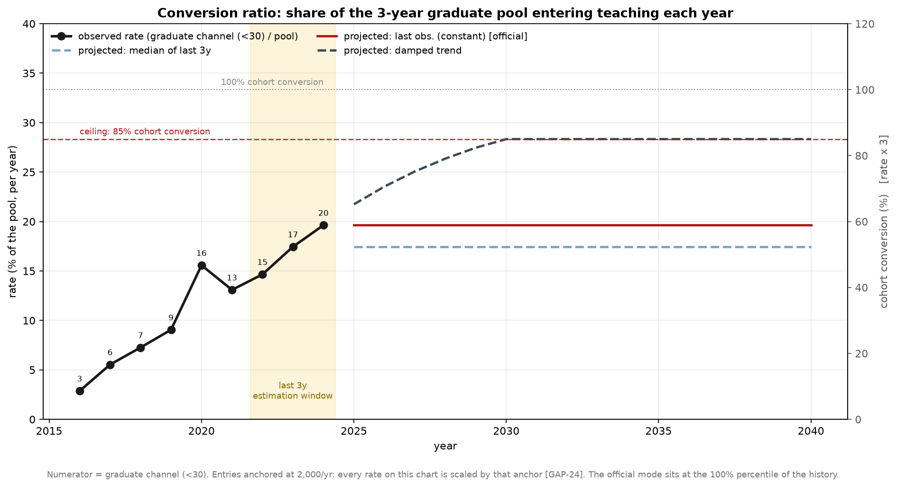
The first is that the mode carried forward sits at the hundredth percentile of its own history. It is the highest value observed in nine years, and it is projected unchanged for sixteen. This is not a criticism of the arithmetic, which is transparent, but it does mean that the central path assumes the recent peak is the new level rather than the upper end of a range.
The second concerns the uncertainty band. The band is constructed from the interquartile range of the last three observations expressed as a ratio to the central path, giving factors of 0.818 and 0.944. Both lie below one. The band does not surround the central estimate; it sits entirely beneath it. This follows mechanically from taking the maximum as the central value, since no quantile of the history can exceed it, and it means the projection carries no representation of the possibility that conversion rises further. The band as drawn is a downside range that has been labelled as symmetric uncertainty.
A third caution belongs with the estimate. The rate is projected from three observations. The full series contains nine, and the block reports the wider history alongside the estimate, but the parameters that enter the projection are drawn from 2022, 2023 and 2024 alone.
7.2 Identification: observed placements do not measure propensity
The exercise asks whether initial teacher education can supply the graduates the demand path requires. The answer is constructed from a rate estimated on people who were hired. The two are not the same quantity, and the gap between them is not a technical refinement.
The numerator of the conversion ratio is derived from the supply block’s series of gross entries into the bands below 30, which in turn is recovered from year-on-year changes in the age-band stock. It counts arrivals. An arrival requires both that someone sought to teach and that a post existed for them, so the series measures the lesser of the two. Where posts were the binding side, the rate estimates a placement ceiling rather than a supply ceiling. This is the standing difficulty in workforce forecasting from administrative records, and it is well recognised in the methodological literature: employment counts are used as a proxy for demand precisely because no direct measure of demand exists, an assumption that becomes questionable as soon as there are signs of unfilled positions (Richardson and Tan, 2007).
The observed period gives every reason to think posts were the binding side for part of it. Section 6 documented that the share of entries arriving through the under-30 channel rose from 4.4 per cent in 2016 to 29.2 per cent in 2024, a trend of 2.87 percentage points a year. The system was placing an increasing number of young entrants over precisely the window from which the conversion rate is estimated. A rise from 2.87 per cent to 19.63 per cent is equally consistent with a rising willingness to teach among graduates and with an unchanged willingness meeting a market that moved from slack to tight. The data contain no variation that separates the two.
The circularity this creates runs through the whole exercise. The question posed is whether the pool can meet the requirement. The answer uses a rate estimated from placements, which exist only because posts were offered. Projecting 19.63 per cent forward to 2040 assumes that posts continue to be offered at the 2024 rate, which is the quantity under examination. If 19.63 per cent is a placement ceiling, the 2,473 feasible graduate entries are not a supply limit at all. They are an extrapolation of past hiring.
The direction of the resulting bias is not obvious, because a second feature of the construction pushes the other way. The pool overlaps cohorts. With a three-year window and a one-year lag, a graduate is counted in three consecutive pools. Someone who entered teaching in the first year remains in the denominator for the two that follow. The denominator is therefore inflated by people already placed, which biases the rate downward and means that cohort conversion, defined as the rate multiplied by three, is not a clean cumulative probability. The two cautions are of opposite sign and there is no basis in the data for netting them.
A separate confusion is worth naming because two numbers in the block carry the same label. The young-channel share of the projected requirement is 27.68 per cent, taken from the supply block’s forward-looking entry profile. The young-channel share of observed historical entries is 17.92 per cent, a ratio of summed flows over the full window and therefore weighted towards the early years when the share was low. The two differ by a factor of 1.545. The conversion ratio is built on the second; the split of the requirement is built on the first. They are different statistics over different periods and should not be read as a discrepancy.
One further consideration bears on the interpretation of the requirement side. Section 5 derived demand from the observed student-teacher ratio. If teachers were short during the observed period, that ratio is biased upward, projected demand is biased downward, and the shortfall computed here is a lower bound on that account. The bias runs in the same direction as the placement-ceiling concern, which is to say that both caution against reading the graduate-channel surplus as comfortable.
7.3 Regime transition in the 2016-2024 series
The conversion ratio rises by a factor of 6.84 over the observed window, from 2.87 per cent in 2016 to 19.63 per cent in 2024. A rise of this size in nine years is the most striking feature of the data the block uses, and its composition matters for what can be projected from it.
The rise decomposes exactly. Graduate entries rose by a factor of 5.94, from 409 to 2,430. The pool fell by 13.2 per cent, from 14,256 to 12,382, which multiplies the ratio by a further 1.151. The product of the two, 6.84, is the observed change. On a logarithmic decomposition the numerator accounts for 92.7 per cent of the rise and the contraction of the denominator for 7.3 per cent. Almost all of the movement is the flow of entrants rising, though a small part of what reads as rising propensity is the pool shrinking beneath that flow.
The trajectory is not smooth. The rate rises steadily through 2019, jumps to 15.58 per cent in 2020, falls back to 13.09 per cent in 2021, and then climbs again through 2022, 2023 and 2024. The 2020 observation is the first pandemic year, which Section 6 already identified as an outlier in the entry series. The estimation window excludes it, but the window is short enough that the choice of any three consecutive years carries considerable weight.
The mode carried forward is the last observation, which places the central path at the top of a series that has not yet demonstrated a plateau. Two readings are available and the data do not separate them. Either the system has moved to a new level of graduate conversion, in which case projecting 19.63 per cent forward is reasonable; or the rise reflects an unusually absorptive period of recruitment, in which case the level is a peak and the projection inherits it.
The block flags a related asymmetry in its own diagnostics, and the flag is worth restating with a correction. It reports that the rate is read at the hundredth percentile of its history while the graduate pool is set 18.3 per cent below its latest observation, and describes the two conventions as pushing the result in the same direction. They do not. A rate read at its maximum raises feasible entries. A pool read below its latest observation lowers them. The two conventions work against each other, and the second is the larger.
The comparison can be made directly. Holding both conventions gives 2,473 feasible graduate entries a year in the steady state. Holding neither, so reading the rate at the median of the last three years and the pool at the 2024 completion level, gives 2,689. The conventions as adopted therefore leave feasible entries roughly 217 a year lower than the alternative, not higher. Taken separately, moving the pool from the projected level to the 2024 level would add 552 entries a year, while moving the rate from the maximum to the median would remove about 275.
The implication runs against the block’s own reading. The conventions are asymmetric and should be declared, but on balance they are conservative: the published surplus survives them rather than depending on them. What the surplus does depend on is the external rescaling of the entry level, which the next subsection examines.
7.4 External anchoring of the entry level
The conversion rate is entries divided by pool, and the entries used are not the entries the supply block inferred. The last three observations of the inferred graduate flow average 1,231 a year. The block rescales them so that the same three-year mean equals 2,000, a factor of 1.6243 and an uplift of 62.4 per cent. The rationale recorded in the configuration is that published counts place the masters-in-teaching completion flow between 1,668 and 2,069 and first-time placements at 2,651, both graduate-channel quantities, and that the inferred series is implausibly low against them. Independent work reaches a comparable order of magnitude, reporting roughly 1,500 completions in teaching masters programmes in 2018/19 against projected annual requirements several times larger (Nunes, Reis, Freitas and Conceição, 2022).
The rescaling is defensible on its own terms. Its consequence for everything downstream is arithmetic and should be stated plainly. The pool is left untouched, so every conversion rate in this section is the inferred rate multiplied by 1.6243. The observed series before the rescaling runs from 1.77 per cent in 2016 to 12.08 per cent in 2024, and the 2024 cohort conversion is 36.2 per cent rather than 58.9 per cent. The three rate modes are the median, the last observation and the damped trend of the same rescaled series, so all three carry the identical factor. Their agreement is one estimate seen from three angles, and it is not independent evidence about the conversion assumption.
The block tests the consequence directly by rerunning the projection with the rescaling removed, walking the official rate path year by year. The result is the single most consequential finding in this section. Under the anchored series the graduate channel returns a mean gap of minus 946 a year, a surplus in all sixteen years. With the rescaling removed the mean gap is plus 19.9 a year, a shortage under the sign convention stated above. The sign of the verdict changes, the ceiling does not bind in the unanchored run, and the change therefore reflects the anchor itself rather than an assumption rescuing a result. Over the sixteen-year horizon the two paths differ by 15,456 teachers.
A mean of plus 19.9 teachers a year against a requirement averaging 1,567 is not a shortage of any consequence. What it is, is zero. The unanchored projection places the graduate channel exactly on the line, which means the entire margin in the published result belongs to the rescaling.
Figure 25 sets the three rate modes against each other in both configurations. Anchored, all three return a surplus in every year, with mean gaps of minus 667 for the median, minus 946 for the last observation and minus 1,912 for the damped trend. Unanchored, the median gives a mean gap of plus 192 with shortfalls in fourteen of sixteen years beginning in 2027, the last observation gives plus 20 with shortfalls in eleven years beginning in 2028, and only the damped trend, which spends most of the horizon pinned at the ceiling, remains in surplus throughout.
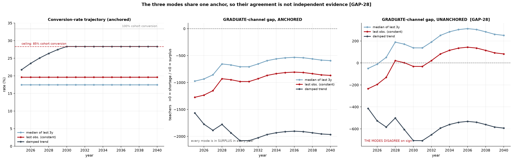
The interaction between the anchor and the two internal conventions can be set out compactly. Table 12 gives feasible graduate entries in the steady state under each combination of rate convention and pool convention, against the peak graduate requirement of 1,666 in 2036.
| Rate and pool convention | Anchored | Unanchored |
|---|---|---|
| Rate at maximum, pool at five-year mean | 2,473 (surplus 807) | 1,522 (shortfall 143) |
| Rate at maximum, pool at 2024 level | 3,025 (surplus 1,359) | 1,862 (surplus 197) |
| Rate at median, pool at five-year mean | 2,198 (surplus 533) | 1,353 (shortfall 312) |
| Rate at median, pool at 2024 level | 2,689 (surplus 1,024) | 1,656 (shortfall 10) |
Anchored, the surplus survives all four combinations. Unanchored, three of the four produce a shortfall and the fourth sits within 200 of balance. The internal conventions move the result; the anchor determines its sign.
One inconsistency introduced by the rescaling should be recorded. The block scales the graduate columns and deliberately leaves the lateral column untouched, on the reasoning that the anchor is a graduate-channel quantity. The identity by which young and lateral entries sum to total entries therefore does not hold in the anchored frame. The unanchored columns are retained for anyone reconstructing the historical accounting.
7.5 Lateral channel and contracted reserve
The second channel is projected on a different basis, and the difference matters. Lateral entries are expressed as a share of the previous year’s teaching stock measured on the age-band definition, which is the same universe the supply block projects. The share is set at the mean of the last five observations, 2.706 per cent, and is not rescaled, since the external anchor is a graduate-channel quantity.
The observed history behaves nothing like the graduate series. The lateral rate reaches 4.163 per cent in 2016 and 1.850 per cent in 2022, a range of a factor 2.25, with intermediate values scattered across the interval and no discernible direction. The ordinary least squares slope is minus 0.112 percentage points a year, which is indistinguishable from flat given the dispersion. The full-window mean of 2.725 per cent and the five-year mean of 2.706 per cent are almost identical, which is what a series with no trend produces. In levels, lateral entries range from 2,592 to 5,493 with a mean of 3,723. Against a graduate channel that rose by a factor of 6.84 with a clear direction, the lateral channel oscillates around a constant.
Applying a fixed rate to a shrinking workforce produces a declining series. Feasible lateral entries fall from 3,764 in 2025 to 3,603 in 2040. The lateral requirement moves the other way, rising from 3,738 to a peak of 4,351 in 2036 before easing to 4,192. The two cross in 2026, and the shortfall widens thereafter. Figure 26 sets the requirement and the feasible supply side by side for both channels and shows the per-channel gaps in the right-hand panel.
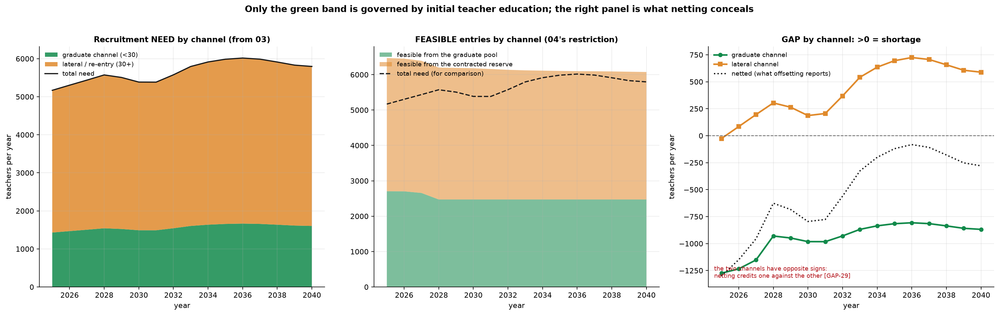
By 2028 the lateral shortfall is 304 a year, by 2032 it is 368, and it reaches 725 in 2036, the year of peak requirement, when lateral coverage falls to 83.3 per cent. Over the horizon the lateral requirement totals 65,503 against feasible entries of 58,764. The difference between those two cumulative figures is 6,739, and the shortfall reported is 6,765, because the single year of surplus, 26 teachers in 2025, is excluded from the offset rather than allowed to reduce the shortfall in later years. The reported figure is the sum of the annual shortfalls.
The methodological caution attached to this channel is severe and is stated in the block itself. The rate is applied to the teaching stock, not to the reserve. There is no stock model of the contracted reserve anywhere in the chain, so what is modelled is the assumption that the reserve delivers a fixed proportion of the workforce each year. The construction makes the channel shrink in step with the workforce by definition rather than by evidence, and it says nothing about whether the reserve itself can sustain that draw.
The direction of any error is clear enough. If the reserve depletes faster than the workforce contracts, which is the reading consistent with the evidence of an ageing corps and a training flow well below replacement (Figueiredo et al., 2025), then 6,765 is a lower bound. The channel that carries roughly seventy per cent of the requirement is the one about which the chain knows least.
7.6 What the block establishes and what it does not
The headline result is that the initial-training constraint never binds. The restriction is slack in all sixteen years. Graduate coverage runs from 189.1 per cent in 2025 to a minimum of 148.5 per cent in 2036 and recovers to 154.1 per cent by 2040. Over the horizon the graduate channel supplies 40,208 entries against a requirement of 25,072, a surplus of 15,136 on the cumulative figures.
Figure 27 sets out the division of labour between the two blocks and shows coverage by channel beneath it.
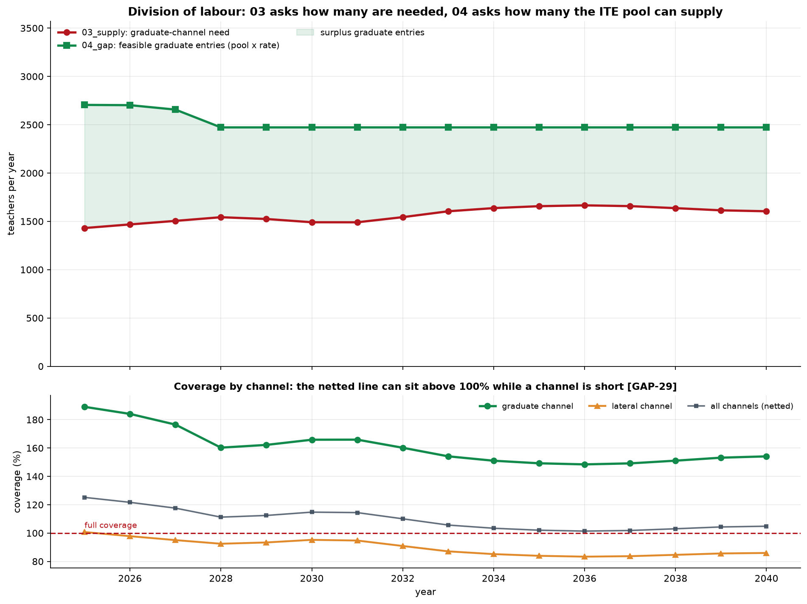
Three findings qualify that result, and they are of different kinds.
The first is that the verdict belongs to the anchor. Removing the external rescaling moves the mean graduate gap from minus 946 to plus 19.9, and two of the three rate modes cross into shortage from 2027 or 2028. The robustness test reports the verdict as not robust, and the ceiling plays no part in the change. A result that reverses on the removal of a 62.4 per cent uplift to the level of one input should not be reported as a property of the training system.
The second is that the netting across channels removes the finding that matters. The graduate surplus of 15,136 is 2.24 times the lateral shortfall of 6,765, so when the two are combined the second disappears entirely. The block reports netted unmet need as zero in every one of the sixteen years. Aggregate coverage never falls below 101.4 per cent, and it reaches that minimum in 2036, the year in which lateral coverage is 83.3 per cent. The offset assumes the channels substitute one for one, which the construction does not support: the split was derived from the entry age profile of the supply block, so filling a post projected as lateral with someone under thirty alters the input from which the split was taken. The measure to report is the sum of the per-channel shortfalls.
The third is the scale of what the chain does not measure. The requirement modelled here is permanent posts. The substitution reserve, which covers temporary absence and short-term replacement, appears nowhere in the projection. Applying the reference share of twenty per cent to the 2025 stock of 138,611 gives an implied reserve of 27,722 teachers in a single year. That is 4.10 times the cumulative lateral shortfall this block reports over sixteen years. The component the chain does not measure is larger by an order of magnitude than the one it does.
The perimeter question resolves more cleanly than expected and is worth recording for that reason. The panel carries two stock definitions. The age-band sum stands at 139,098 in 2024, which is what the supply block projects, while the published total stands at 156,475, a coverage factor of 1.125. The difference between the two is 17,377 teachers, or 11.1 per cent of the published total, and that 11.1 per cent of the panel carries no age band. Against the reference census of approximately 122,000 active teachers in mainland provision, the age-band definition is 14.0 per cent higher, a ratio of 1.140 and a difference of 17,098 teachers, and the published total is 28.3 per cent higher. The comparison is like for like in time, both being 2024 observations, and the test of internal consistency passes: the projected 2025 base follows from the 2024 stock by flows, with implied exits of 5,655 against the 5,699 the chain reports. The difference against the reference census is therefore a genuine perimeter question rather than an artefact internal to the panel, with private provision and the definition of active status the leading candidates. Every level reported in this section carries that relative error.
The replacement and expansion decomposition confirms what Section 6 already established about the direction of the system. Total exits over the horizon reach 96,908 against a requirement of 90,575, so replacement accounts for 107.0 per cent of recruitment and expansion is negative in all sixteen years, ranging from minus 186 in 2036 to minus 721 in 2031. The international reference of roughly 58 per cent replacement and 42 per cent expansion (Bruneforth et al., 2009) describes systems with growing enrolment and is not a comparator here. The Portuguese system is recruiting to stand still and failing to stand still.
The regional figures require one clarification about their provenance. The cumulative requirement across the 24 mainland NUTS III regions, reported in Section 10, sums to 90,575, and the distribution is heavily concentrated: the Lisbon metropolitan area accounts for 21.2 per cent, the Porto metropolitan area for 13.7 per cent and the Setúbal peninsula for 8.7 per cent, so three regions carry 43.7 per cent of the national requirement.
The regional series is raked onto the national total, and the residual has a different origin here than in Section 6. The regional sum reproduces the unsmoothed national total exactly, to an order of \(10^{-13}\), in every one of the sixteen years. The annual discrepancy of between minus 2.65 per cent and plus 1.68 per cent is created entirely by the smoothing applied within this block, oscillates around zero without direction, and cancels in the cumulative. No regional heterogeneity is lost. This contrasts with the raking performed in Section 6, where 6.8 per cent of regional recruitment was discarded at NUTS III level through genuine zero-flooring.
Two limitations on the regional reading carry over from Section 6 and are not addressed here. Recruitment attributed to a region is not invariant to the level of aggregation, moving by 5.24 per cent between the two universes, and the closed-region assumption is contradicted by the finding that 42 per cent of teachers holding a masters qualification completed after 2013 work outside the region in which they qualified (Nunes et al., 2025). Regional training capacity and regional requirement are not the same quantity and should not be compared directly.
One output of the block should not be read as a result at all. The demographic pressure series computed against a fixed baseline subtracts a constant, the projected 2025 stock, from the demand path. It therefore contains no supply dynamics and is the demand series shifted. The companion series computed against a no-replacement path does carry supply information, but its central value in 2040, 90,575, is identical to cumulative recruitment. This is definitional rather than informative: the difference between demand and a stock that never replaces anyone is, by construction, everything that must be recruited.
What this block establishes, then, is narrower than its headline suggests. It establishes that under an externally rescaled entry level, the output of initial teacher education exceeds the requirement of the channel it governs, and that the result holds across the internal conventions the block adopts for the rate and the pool. It does not establish that the system can staff its schools. The channel that binds is the one initial teacher education does not govern, the reserve that channel is drawn from has no stock model anywhere in the chain, and the substitution requirement that sits outside the projection is several times larger than the shortfall the projection finds. The question was put to the wrong channel, answered with a rate that does not identify propensity, and anchored to an external level on which the sign of the answer depends.
8 Uncertainty
The uncertainty block places a distribution around the deficit computed in Section 7. It does not re-estimate anything. It takes the central paths produced upstream, attaches a dispersion to each parameter that the chain treats as uncertain, and propagates them jointly through the same arithmetic that produced the point estimate. The sign convention stated at the opening of Section 7 applies throughout: a positive deficit is a shortage and a negative deficit is a surplus.
The quantity being measured needs to be stated precisely, because the chain carries two deficits and they behave differently. The headline distribution is the graduate-channel deficit: the need for entrants under 30, set against the graduate pool multiplied by the conversion rate. This is the only channel that initial teacher education governs, and setting the total need against graduate-only supply would compare quantities defined on different perimeters. The lateral channel is modelled beside it, against the contracted reserve, and the two are reported without netting, for the reasons Section 7 establishes.
8.1 Propagated axes and simulation design
Five axes carry dispersion, and the diagnostic confirms that all five can vary: none returns a degenerate distribution, and the perimeter check passes on the channel basis.
The need shock is the uncertainty inherited from the supply block. Its annual dispersion is recovered from the percentiles of that block’s own Monte Carlo, converted to a log standard deviation and capped at 0.20. The shock is applied to both channels with the same multiplier, since both move with the same demography. This is a modelling decision with a consequence worth stating: the need shock cannot drive the two channels in opposite directions, so any divergence between them comes from the supply side.
The conversion rate carries the dispersion of the ratio of graduate entries to the qualifying pool. The estimator matters here more than in any other axis. The nine observed rates climb almost monotonically, with a fitted slope of 2.51 percentage points a year, so the raw coefficient of variation of the levels is 49.2 per cent. That figure measures the amplitude of the climb rather than the scatter around the current level, which is the quantity a projection anchored at today’s rate requires. Fitting a linear trend in logs and taking the residual dispersion returns 23.0 per cent, a factor of 2.14 smaller. The detrended figure is the one deployed.
The lateral reserve carries the dispersion of its depletion rate, estimated from the same nine years of history using the same detrended estimator. Here the estimator barely matters: the raw figure is 29.3 per cent and the detrended figure 25.8 per cent, a ratio of 1.13, because the series has almost no trend, with a fitted slope of minus 0.096 percentage points a year. The observed rate runs from 1.85 to 4.16 per cent of the previous year’s stock, a factor of 2.25 between the extremes, with a mean of 2.73 per cent. The contrast with the conversion rate is worth recording: the same estimator applied to two series produces a correction of a factor of two in one case and almost nothing in the other, which is what a trend-sensitive estimator should do.
The graduate pool carries a coefficient of variation of 6 per cent, the smallest of the five. The demographic axis is not a shock but a discrete mixture: each path draws one of the three enrolment scenarios with weights of 0.55 for central and 0.225 for each of high and low, and the resulting total need is split between channels using the young share from Section 7.
Three of the five shocks are drawn once per path and held across all sixteen years: the conversion rate, the graduate pool and the lateral reserve. This treats them as level assumptions rather than year-by-year processes, which is the right structure for a parameter whose value is uncertain but not volatile. The consequence for the correlation grid below is direct, and is taken up there.
The simulation runs 4,000 draws from a fixed seed over 2025 to 2040. Every reported probability is an exact multiple of one in four thousand, which confirms the draw count and allows a statement about individual draws later in this section.
Two checks establish that the block is measuring what it claims to measure. The first rebuilds the central need from replacement plus the change in demand and compares it with the path Section 7 published. The worst annual deviation is minus 2.65 per cent in 2031, and the cumulative deviation over the horizon is minus 0.05 per cent, well inside the five per cent tolerance. The second compares the simulated median with the published central path. The cumulative need across both channels has a median of 90,837 against a central path of 90,575, a difference of 0.29 per cent, so the simulation is centred on the point estimate rather than displaced from it. The mean of 91,365 exceeds the median by 529, the right skew that lognormal shocks produce.
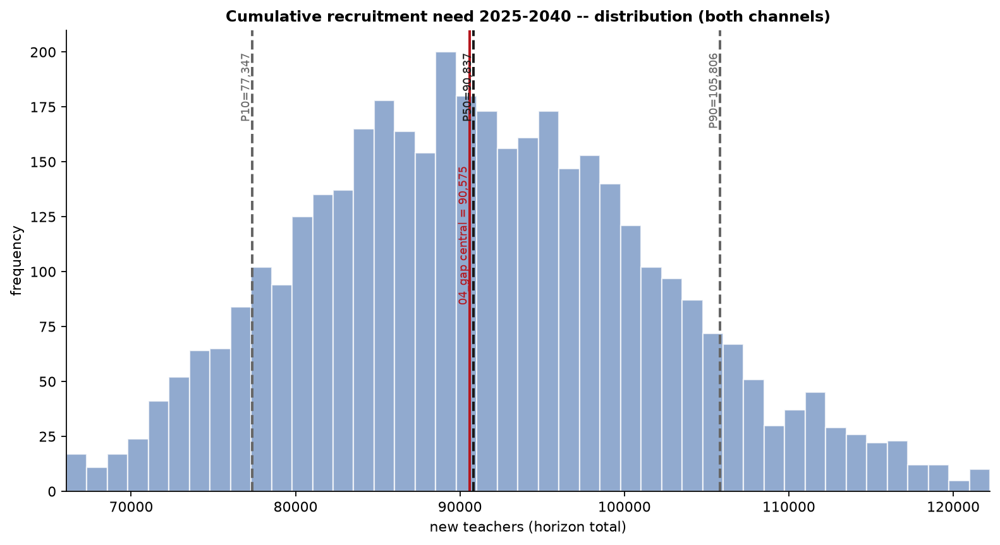
The resulting distribution of the graduate-channel deficit is shown in Figure 29. The median is negative in every year, running from a surplus of 1,253 in 2025 to 874 in 2040, with the narrowest surplus of 778 in 2036. The narrowing comes from both sides: the simulated median need for young entrants rises from 1,428 to a peak of 1,684 in 2036, while median entrants fall from 2,692 to 2,461 and then stay flat, because the projected pool plateaus from 2028 onward. These simulated medians differ slightly from the deterministic path reported in Section 7, where the requirement peaks at 1,666 and feasible entries settle at 2,473.
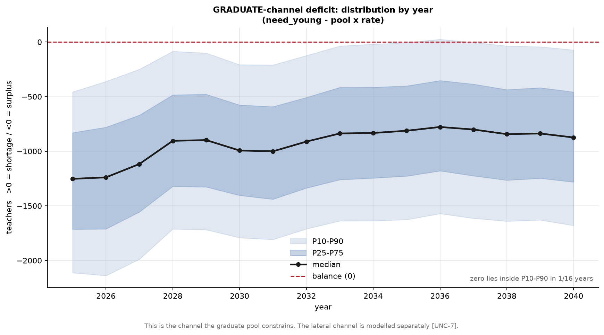
The width of the interval is close to constant in absolute terms, between 1,584 and 1,778 teachers across the sixteen years, a range of only 194. Relative to a median that is converging toward zero, the same interval widens from 132 per cent of the median in 2025 to 184 per cent in 2040. The sign of the graduate deficit is determined in fifteen of the sixteen years, with 2036 the exception. That count is nominal rather than comfortable: in 2034, 2035 and 2037 the ninetieth percentile sits within 20, 6 and 4 teachers of zero respectively, so four consecutive years sit at the boundary and the determination in three of them rests on a margin smaller than a rounding error in the underlying stock.
One feature of the design conditions everything reported in this section. The conversion rates read from Section 7 are anchored: the entries used to form the ratio were scaled by a factor of 1.6243 before the ratio was taken, so the whole distribution drawn here is conditional on that external level, and the sign of the graduate-channel finding does not survive its removal. No dispersion modelled in this block covers that, because it is a question about the level of an input rather than its variance.
8.2 Variance decomposition
The decomposition freezes one axis at a time at its median and measures the resulting drop in the variance of the cumulative gap. The shares are normalised to sum to one, so they rank the axes rather than partition the variance exactly. How close they come to an exact partition is itself informative, and differs between the two targets.
The decomposition is run against two quantities. The first is the graduate-channel gap, in which the lateral reserve does not appear at all: it is absent by construction rather than by omission, since the reserve enters neither the need for young entrants nor the graduates available to meet it. The second is the combined gap with no cross-channel credit, which is the headline quantity from Section 7 and the one in which both channels appear.
| Axis | Graduate gap | Combined gap |
|---|---|---|
| Conversion rate | 84.3% | 3.5% |
| Need shock | 9.2% | 21.9% |
| Graduate pool | 5.0% | 0.3% |
| Demographic scenario | 1.5% | 4.0% |
| Lateral reserve | not applicable | 70.3% |
The two rankings invert almost completely, and Figure 30 sets them side by side. On the graduate gap the conversion rate carries 84.3 per cent of the variance and everything else is residual. On the combined gap the conversion rate falls to 3.5 per cent and the lateral reserve takes 70.3 per cent. The answer to the question of where uncertainty should be reduced therefore depends entirely on which deficit is the object of the exercise, and the two answers point at different institutions: one at the initial teacher education pipeline, the other at the contracted reserve.
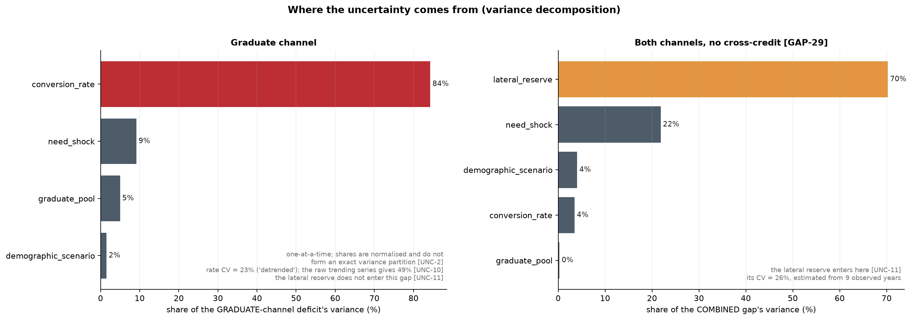
The additivity of the one-at-a-time shares differs between the two targets and should be read as a diagnostic. The shares displayed in Table 13 are rounded and sum to 100 per cent by construction. The diagnostic is computed on the unrounded variance reductions, which on the graduate gap sum to 99.84 per cent of the total, so the interaction between axes is 0.16 per cent and the shares are close to an exact partition. On the combined gap they sum to 93.73 per cent, leaving 6.27 per cent in interaction, which arises because the combined gap applies a floor at zero to each channel before summing, and that floor makes the two channels interact. The combined shares are therefore a ranking with a genuine caveat attached, while the graduate shares are very nearly a decomposition.
The units in which the shares are read matter, as they did in the supply block. On the graduate gap the conversion rate carries 9.20 times the variance of the need shock, which is 3.03 times its standard deviation. On the combined gap the lateral reserve carries 3.21 times the variance of the need shock, which is 1.79 times its standard deviation. The total standard deviation is 9,717 teachers on the graduate gap and 11,905 on the combined gap. Variance shares are the correct way to attribute, and the square roots are the correct way to picture the width of an interval.
The lateral channel produces the finding that most constrains what this block can conclude. Its median gap is positive in every year, rising from 12 in 2025 to 822 in 2036 and settling at 574 by 2040, and its probability of shortage runs from 50.4 per cent in 2025 to 77.0 per cent in 2036. The sign of that gap is determined in none of the sixteen years. The channel that carries 70 per cent of the variance of the headline deficit has a sign that the simulation never resolves, which is a direct consequence of a reserve dispersion of 25.8 per cent applied to a gap whose median is small relative to the flows on either side of it.
The mechanism behind the growing lateral gap is structural rather than stochastic. The reserve’s depletion rate is applied to the previous year’s stock, and that stock is falling, so feasible lateral entries decline from 3,764 in 2025 to 3,603 in 2040. Lateral need moves in the opposite direction, from 3,738 to 4,160 at the simulated median, because the total need rises while the channel split is held fixed. The gap opens from both ends.
Figure 31 shows the two channels together with the two ways of combining them. Summing the annual medians, the graduate channel accumulates a surplus of 14,930 over the horizon and the lateral channel a shortage of 7,205. The no-cross-credit series accumulates 7,572, while netting the two produces minus 7,732. The distance between those two figures, 15,304 teachers, is the size of the error that netting introduces. Netting reports a cumulative surplus where the channel that cannot draw on graduates is short in every year.
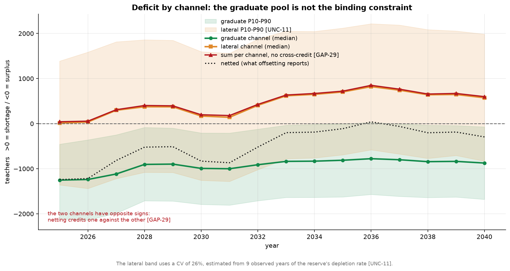
The demographic axis is the smallest contributor to the graduate gap at 1.5 per cent, and Figure 32 shows why. All three enrolment scenarios produce a graduate surplus in every year, and they differ by roughly 280 teachers at the point of maximum separation in 2036, against an interval width of about 1,596 in the same year. The ordering is the expected one, with the high-enrolment scenario producing the smallest surplus, and the separation between scenarios is smaller than the dispersion within any one of them.

8.3 Temporal correlation of the need shock
The need shock is decomposed into a component common to all years and a component idiosyncratic to each year, with a parameter rho governing the split. At rho equal to zero the shock is independent across years and averages out over the horizon. At rho equal to one it is a single level shift applied to every year. The baseline value of 0.6 is an assumption rather than an estimate, so Table 14 reports the full range.
| rho | P10 | P50 | P90 | Relative width | Conversion-rate share | Years with determined sign |
|---|---|---|---|---|---|---|
| 0.0 | 84,604 | 91,282 | 97,948 | 0.146 | 91.9% | 15 |
| 0.3 | 80,393 | 91,159 | 102,625 | 0.244 | 87.8% | 15 |
| 0.6 | 77,347 | 90,837 | 105,806 | 0.313 | 84.3% | 15 |
| 0.9 | 74,933 | 90,573 | 108,323 | 0.369 | 81.0% | 14 |
| 1.0 | 74,210 | 90,542 | 109,221 | 0.387 | 80.0% | 14 |
Rho moves the width of the cumulative interval by a factor of 2.65, from 14.6 per cent of the median to 38.7 per cent. It does not move the median, which falls by 0.81 per cent across the entire grid, and it does not move the verdict: the graduate surplus survives at every value tested, and the number of years in which the sign is determined falls only from fifteen to fourteen at the top of the range. The probability of a graduate shortage never reaches 50 per cent in any year at any value of rho.
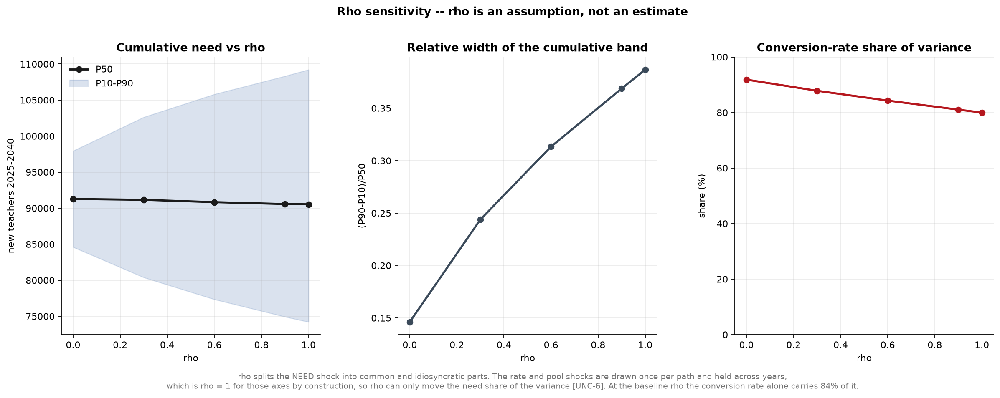
The reach of rho is limited by the design in a way that is easy to overlook. Rho governs the need axis alone. The conversion rate, the graduate pool and the lateral reserve are each drawn once per path and held across all sixteen years, which is rho equal to one for those three axes by construction. Since the need shock carries 9.2 per cent of the graduate variance at the baseline, rho can only redistribute a share of that size. This is visible in the last column of the grid: even at rho equal to one, where the need shock is maximally persistent and therefore maximally influential, the conversion rate still carries 80.0 per cent of the variance, down from 91.9 per cent at rho equal to zero. The dominant axis is untouchable by the correlation assumption.
A reader who wanted to argue that the uncertainty reported here is understated would therefore gain little from raising rho. The width at rho equal to one is 38.7 per cent against 31.3 per cent at the baseline, a difference of seven percentage points, and the conclusion is unchanged. The assumption that would matter is the one holding the three level shocks fixed across years, and that assumption is not tested by this grid.
8.4 Tail truncation by the conversion ceiling
Section 7 imposes a ceiling on the conversion rate of 28.33 per cent a year, derived from an 85 per cent cohort conversion ceiling spread over three graduating cohorts. The ceiling exists because a rate drawn from an upward trending series can otherwise exceed any plausible share of a cohort entering the profession. It truncates the rate from above only, which makes it a one-sided constraint on a two-sided distribution, and one-sided truncation of an input moves the output distribution in a known direction.
The direction is toward shortage. Clipping the rate reduces entrants, and since the graduate gap is need minus entrants, a clipped draw moves rightward. Any statistic that depends on the position of the distribution relative to zero is therefore biased toward shortage by the presence of the ceiling, and the question is by how much.
The answer is zero. Of the 4,000 draws, 105 had a rate above the ceiling and were clipped, which is 2.625 per cent. The probability of a graduate shortage computed with the ceiling and the probability computed without it are identical in all sixteen years, to every digit reported. Since every probability is an exact multiple of one in four thousand, this establishes that not one of the 105 clipped draws changed its classification.
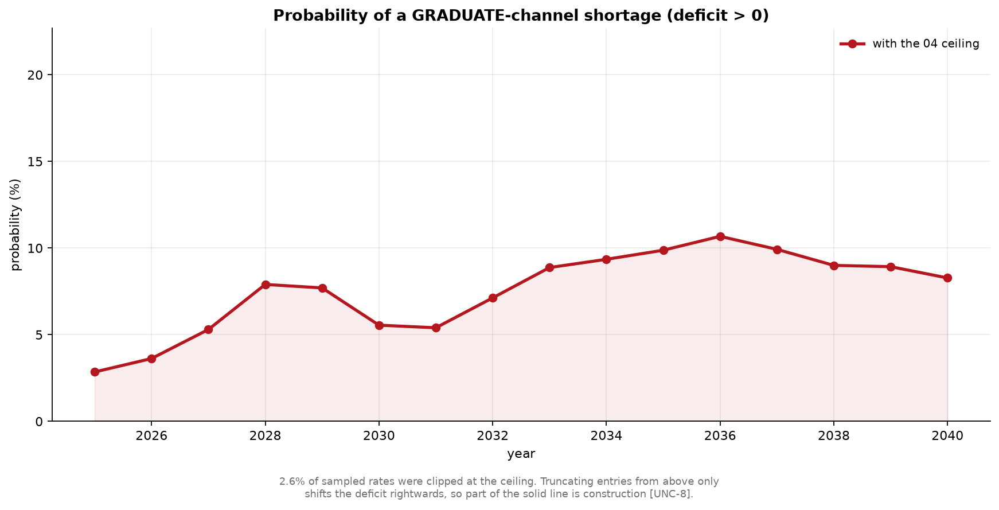
The reason is that the clipped draws sit far from the boundary. A draw is clipped only if its rate exceeds 28.33 per cent, which is a high draw, and a high rate produces many entrants and therefore a large surplus. Clipping pulls that draw back toward zero from below without reaching it. The arithmetic is straightforward: the implied graduate pool is approximately 8,686, so a clipped draw has entrants of 2,461, while the largest median need for young entrants at any point in the horizon is 1,684. Even at peak need, a clipped draw sits at a surplus of around 777. The truncation operates entirely within the surplus tail, below the tenth percentile of the deficit distribution, and the tenth percentile itself is barely reached.
The ceiling is therefore inframarginal for every conclusion this section draws. It compresses the extreme surplus tail, which makes the reported surplus slightly smaller than an unconstrained simulation would produce, and it leaves the median, the eightieth-percentile interval and the shortage probability untouched. A reader concerned that the surplus finding is an artefact of allowing implausibly high conversion rates can be answered directly: removing the ceiling would widen the surplus rather than narrow it, and the finding does not depend on where the ceiling is placed.
That conclusion should not be read as a general reassurance about the surplus, because the ceiling is not the assumption the result rests on. The anchor is. Scaling observed entries by 1.6243 raises the conversion rate by the same proportion, which raises entrants by roughly 62 per cent, and it is that level adjustment rather than the shape of the upper tail that places the median graduate gap at a surplus of 800 to 1,250 a year. Between a ceiling that clips 2.6 per cent of draws and changes no conclusion, and an anchor that multiplies the central level of the supply side by 1.6243 and reverses the sign, the second is the one that a reader assessing the reliability of this projection needs to interrogate.
Three limitations bound what the distributions in this section cover. They are conditional on the model structure, so they price parameter uncertainty and not specification error: the descriptive student-teacher ratio discussed in Section 5, the perimeter difference against the reference census, and the substitution reserve that is absorbed implicitly into the ratio and estimated nowhere in the chain all lie outside them. The lateral reserve’s dispersion is estimated from nine years of its depletion rate, which measures how variable that rate has been rather than how much reserve remains, and Section 7 records that the size of the reserve is not measured anywhere in this chain. And the graduate-channel result is conditional on the anchor throughout.
9 Validation
The validation block runs twenty-seven checks across seven families against the outputs of every preceding block. It tests whether the chain is internally coherent, whether it reconciles across spatial levels, whether it sits within a defensible distance of the published national study, whether a cohort model of this kind forecasts age structure out of sample, and whether any upstream block produced a result that is formally present but substantively empty.
Every check ran. None was skipped for a missing input, which establishes that all five upstream blocks produced their expected outputs in the form the suite expects.
The headline count needs a qualification before it is quoted. Of the twenty-seven checks, seven hold by construction: they re-derive a definition that the producing block applied, so they cannot fail unless a file is corrupt or a column is misread. Excluding those, twenty checks carry evidential weight, and they return sixteen passes, two warnings and two failures. The two failures are not peripheral. One concerns the dependence of the deficit’s sign on an external anchor, and the other concerns the model’s ability to forecast the age structure it is built on. The final subsection sets out which checks are tautological and why they are retained regardless.
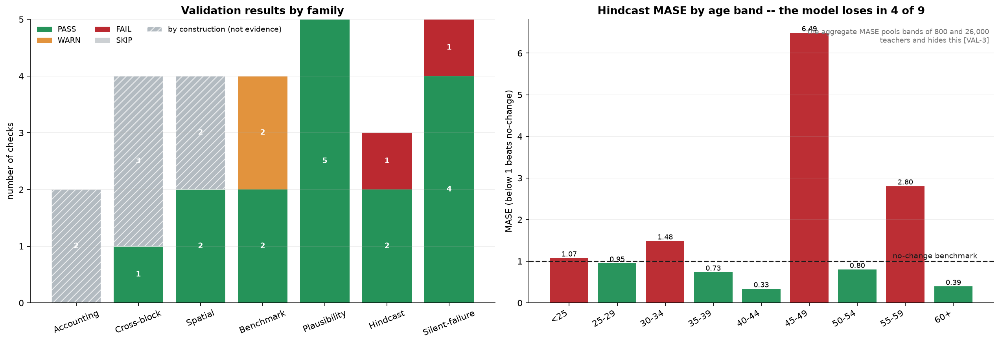
9.1 Accounting identities and cross-block consistency
The accounting family tests two identities. The first is that the change in the teacher stock between consecutive years equals recruitment minus exits. The worst annual residual is \(1.29 \times 10^{-16}\), which is floating-point noise. The second is that the recruitment need equals replacement plus expansion, following the decomposition used by the UNESCO Institute for Statistics, and the residual is exactly zero.
Both hold by construction, and the accounting family therefore provides no independent evidence about the model. The supply block computes the stock and the exits inside a single loop and asserts the identity itself; the gap block defines expansion as the need minus replacement, so the second identity is that definition rearranged. A residual of zero in either case confirms that the file was written and read correctly and nothing more.
The cross-block family tests four links between adjacent blocks, of which one carries evidential weight. The cumulative median from the uncertainty block is 90,837 against a central path of 90,575 from the gap block, a difference of 0.29 per cent, well inside the two per cent tolerance. This is a genuine test because the uncertainty block reconstructs the need from replacement plus the change in demand rather than reading the published series, so the two could disagree and in the annual detail they do, by up to 2.65 per cent in a single year. Their agreement in aggregate is informative.
The remaining three links are definitional. The uncertainty block reads the conversion ceiling out of the gap block’s own file and writes it back, so the inherited value matches to zero. The supply stock tracks the demand path because endogenous entry sets recruitment to whatever closes the gap, so the two series coincide whenever entry is positive. The third of these deserves a longer note because it caught a real error before it was reclassified.
The check comparing the entry flow exported by the supply block against the entry series the gap block uses to form its conversion ratio previously failed, with residuals between 0.80 and 0.98. Those values are one minus the graduate share of entries, which Section 6 reports as rising from 4.4 per cent in 2016 to 29.2 per cent in 2024, giving a complement between 0.708 and 0.956. The cause was a column-matching error: the gap block feeds its ratio with the graduate channel alone, while a substring match on the entry column name returned the total. The check was comparing the young channel against the total and recovering the lateral share as an apparent error. It now reads the channel label the gap block records, matches the corresponding supply column, removes the anchor factor of 1.6243, and returns a residual of \(1.91 \times 10^{-16}\) across nine overlapping years. It holds by construction once the channel is correctly identified, and it is retained precisely because a channel mismatch still trips it.
9.2 Spatial reconciliation
The spatial family tests whether the regional series sum to the national one, before and after the reconciliation step that the gap block applies.
The raw regional sum is 90,575 against a national total of 90,575, a relative difference of \(6.2 \times 10^{-7}\). This result is more informative than its tolerance suggests. The gap block rakes the regional series because summing a region-by-region maximum of zero and the computed need can exceed the national figure whenever the national expansion component is negative in some region, and the code documents that expectation. Here no such gap opens: the raw sum already closes on the national total before any raking is applied. Either no region carried a negative expansion large enough to bind, or the floor never engaged. The reconciliation step is available and correct, and on this run it had nothing to correct.
The reconciled sum closes exactly, which is arithmetic rather than evidence because the raking factor is the ratio of the national to the regional total. The regional shares sum to one to within \(8.9 \times 10^{-16}\), which is likewise arithmetic since the shares are formed by dividing each region by the sum. Twenty-four mainland NUTS III regions are present, which is the expected count and a genuine check on the completeness of the regional partition.
Section 6 records a property of the regional results that the spatial family cannot detect. Recruitment attributed to a given region is not invariant to the level of aggregation: three NUTS II regions consist of a single NUTS III region, and for all three the figure falls by 5.24 per cent when moving to the finer partition, which is the ratio of the two raking factors. Closure at each level is compatible with the levels disagreeing about any individual region, and the suite tests closure alone.
9.3 Comparison with the reference study, raw and perimeter-adjusted
The only published projection covering the same country and an overlapping decade is the DGEEC study prepared with the Nova SBE Centre for the Economics of Education, which reports a cumulative recruitment requirement of 38,779 teachers to 2034/35, an average of 3,878 a year. The comparison window here is 2025 to 2034, the ten calendar years of overlap with the projection horizon.
The raw comparison returns 5,505 teachers a year against 3,878, a difference of 41.9 per cent, which exceeds the thirty per cent tolerance and is recorded as a warning. The cumulative form of the same comparison returns 55,045 against 38,779 pro-rated to the window, giving the identical relative difference.
The perimeter difference is measured rather than asserted. The gap block publishes a reconciliation between the workforce this chain projects and the workforce the reference census counts, giving a ratio of 1.140. Section 7 reports the same discrepancy from the other direction, with the age-band sum of 139,098 against approximately 122,000 teachers in the reference census. The external study covers 835 mainland public organisational units and excludes private and state-funded private provision, which is the most plausible source.
Dividing by that ratio gives 4,828 teachers a year against 3,878, a difference of 24.5 per cent, which falls inside the tolerance and passes. The perimeter therefore accounts for 17.4 percentage points of the original 41.9, and 24.5 percentage points remain unexplained by it.
Section 6 identifies two candidates for the residual. The exit rate in this chain runs at 43.0 per thousand staff per year over the first decade against roughly 37.7 implied by the external study’s own workforce trajectory, a difference of 14 per cent that points toward the attrition floor of one per cent applied to every band below 55, which alone generates 9,672 exits over the decade. The definition of recruitment is the second: this chain counts all gross entries including re-entries, where a projection counting only net additions to the permanent establishment would return a smaller figure from identical workforce dynamics. Neither is quantified here, and the residual is reported as a residual.
The retirement comparison passes without adjustment. This chain produces 5,021 retirements a year over the window against 4,000 in the benchmark, a difference of 25.5 per cent. The check records a caveat that Section 6 establishes: 94.7 per cent of the retirement wave comes from the 60 and over hazard, which is set from the statutory exit age rather than estimated, and the 55 to 59 component of 250 a year is an assumption rather than a measurement. A retirement figure that agrees with an external study to within 25 per cent is agreement between one estimate and one assumption.
The plausibility family passes on all five checks without qualification. The 60 and over hazard of 0.1429 sits inside a bound of 0.02 to 0.60. All nine observed conversion rates fall inside one to one hundred per cent, with a maximum of 19.6 per cent. All nine cohort conversion figures fall below one hundred per cent, with a maximum of 59 per cent. All sixteen projected annual recruitment figures fall inside a bound of one thousand to fifteen thousand, averaging 5,661. Student-teacher ratios across the three tested cycles fall inside five to thirty, with a worst value of 13.4. These bounds are wide by design and a pass establishes that no quantity is absurd rather than that any is correct.
9.4 Out-of-sample test by age band
The hindcast holds out the final three years of the observed panel, estimates a cohort model on 2014 to 2021, and projects 2022 to 2024 for comparison against the observed age distribution.
The most important property of this test is what it does not test. The model estimated here is a deliberate re-implementation and not the deployed supply code. It inverts the projection equation to recover hazards with no attrition floor, where the supply block uses an identity-based estimator with a floor of one per cent. It holds annual entries constant at the training-window mean, where the supply block drives entry endogenously from the demand path. A favourable result therefore does not certify the supply block’s estimator, and an unfavourable one does not condemn it. What the test establishes is whether a cohort model of this general form, fitted on this panel, can forecast the age structure of this workforce.
The aggregate result passes. The mean absolute error across all bands and test years is 978 teachers against 1,421 for a no-change benchmark, giving a scaled error of 0.689. The per-band result fails.
| Band | Scaled error | Model relative error | Benchmark relative error | Weight in aggregate |
|---|---|---|---|---|
| Under 25 | 1.07 | 43.8% | 40.8% | 3.3% |
| 25 to 29 | 0.95 | 20.9% | 22.0% | 5.6% |
| 30 to 34 | 1.48 | 19.9% | 13.4% | 4.1% |
| 35 to 39 | 0.73 | 28.2% | 38.3% | 17.9% |
| 40 to 44 | 0.33 | 7.6% | 22.8% | 32.7% |
| 45 to 49 | 6.49 | 3.4% | 0.5% | 1.0% |
| 50 to 54 | 0.80 | 1.8% | 2.3% | 4.6% |
| 55 to 59 | 2.80 | 4.4% | 1.6% | 3.0% |
| 60 and over | 0.39 | 4.7% | 11.9% | 27.8% |
The model loses to a no-change benchmark in four of the nine bands, which triggers the failure threshold. The aggregate figure conceals this because a scaled error pooled across bands is a weighted average in which the weights are the benchmark’s own errors. The 40 to 44 and 60 and over bands together carry 60.5 per cent of that weight, and both are bands where the no-change benchmark performs badly because the headcount is moving fast, so the model wins easily. The 45 to 49 band carries 1.0 per cent of the weight despite a scaled error of 6.49. The aggregate is dominated by the bands where the comparison is least demanding.
The 45 to 49 result needs reading in relative terms before it is treated as a collapse. The band is close to flat over the test window, moving from 25,610 to 25,991, so the no-change benchmark is almost exact with a relative error of 0.5 per cent. The model’s relative error is 3.4 per cent. A ratio of 6.49 between two small numbers is a statement about how good the benchmark is rather than how bad the model is, and a scaled error penalises a model most heavily in exactly the bands where persistence is hardest to beat.
The four losing bands have a property in common that the scaled error does not reveal. Comparing the observed change from the last training year against the predicted change, the model gets the direction wrong in the under 25 band, which rises by 653 while the model predicts a fall of 43; in the 30 to 34 band, which rises by 896 while the model predicts a fall of 349; in the 45 to 49 band, which rises by 125 while the model predicts a fall of 1,553; and in the 55 to 59 band, which falls by 512 while the model predicts a rise of 998. The four bands where the direction of change is wrong are exactly the four that lose to no-change. The model is not imprecise in those bands. It is pointing the wrong way.
The cause is identifiable and specific to this re-implementation. Entries are held constant at the training-window mean, and the test window is precisely when young entries accelerated: Section 6 records entries into the under-25 band rising from 45 in 2016 to 480 in 2024, with the last three years averaging 388 against a full-series mean of 213. A model that fixes entry at a historical average cannot reproduce a surge in entry, and the bands that receive new entrants are the bands where it fails. The deployed supply model does not make this assumption, which is why the failure should not be transferred to it without qualification.
The total headcount check passes, with a worst-year error of 1.05 per cent. That pass and the per-band failure are the same result viewed at two levels of aggregation. In the final test year the signed band errors sum to minus 1,462 teachers while the absolute band errors sum to 13,653, a cancellation factor of 9.3. The aggregate is accurate because the errors offset, with the model overstating the 35 to 39, 40 to 44 and 55 to 59 bands by a combined 6,096 and understating the remaining six by a combined 7,558. A projection that is used only for a total headcount would be well served by this model; one used for the retirement wave, which depends entirely on the two oldest bands, would not.
9.5 Guards against silent failure
The silent-failure family asks whether an upstream block ran to completion and produced output that is formally present but carries no information. Four of the five checks pass and one fails.
The uncertainty block reports a non-degenerate simulation, and the deficit fan carries a median band of 1,608 teachers and a widest band of 1,778, far above the floor. No uncertainty axis is reported as degenerate, which Section 8 confirms from the other side: all five axes carry dispersion and the perimeter check passes on the channel basis. No scenario pushed the recruitment need below zero, so no cell was floored.
One detail of the fan check is worth recording because it shows a guard partly not firing. The check applies an absolute floor of one teacher and a relative floor of two per cent of the median need, taking the larger. The relative component did not engage on this run, because the column it looks for is named for the graduate channel in the fan output and the exact-match lookup returned nothing. The check therefore tested against the absolute floor alone. The consequence here is immaterial, since the observed band of 1,778 exceeds both the absolute floor of one and the relative floor of roughly thirty-two that would have applied, but a guard that silently reduces to its weaker form is a guard that would not catch the failure mode it was strengthened to catch.
The failing check is the one that matters most. The gap block tests whether the sign of its deficit survives the removal of the external anchor applied to observed entries, and it does not. The mean annual gap is minus 946 teachers with the anchor and plus 20 without it. The sign reverses. Over the sixteen-year horizon the two paths differ by 15,456 teachers.
Section 8 establishes what this means for every probability that block reports. The anchor scales observed entries by 1.6243 before the conversion ratio is formed, so the entire distribution of conversion rates drawn in the uncertainty simulation is conditional on it, and the graduate-channel surplus of 800 to 1,250 a year rests on an adjustment that raises observed entries by 62.4 per cent. The conversion ceiling, by contrast, clips 2.6 per cent of draws and changes no conclusion. Between an assumption that truncates a tail without moving a verdict and one that moves the verdict, the suite flags the second.
The design decision behind this check is worth stating. An earlier version of the suite recorded a missing verdict column as a skip. In a family built specifically to catch silent failures, a missing verdict is itself the silent failure, so the check now searches three historical column names and records a failure if none is found, on the grounds that a stale or renamed upstream output leaves the anchor dependence unexamined rather than confirmed.
9.6 Checks that hold by construction
Seven of the twenty-seven checks, or twenty-six per cent of the suite, re-derive a definition applied by the block that produced the file. They are listed in the report with the reason each cannot fail, and they are excluded from the evidential count in Figure 35, where they appear hatched.
The two accounting identities are of this kind, which means the accounting family contributes nothing to the evidential total. Three of the four cross-block checks are of this kind: the inherited ceiling, the stock tracking the demand path under endogenous entry, and the entry flow comparison once the channel is matched. Two of the four spatial checks are of this kind: closure after raking and shares summing to one.
They are retained for a reason that the entry flow check demonstrates concretely. A check that holds by construction under correct specification still fails under misspecification, and that failure is informative. The entry flow comparison failed at residuals between 0.80 and 0.98 until the channel mismatch was found, and those residuals were the complement of the graduate share, which is what made the cause diagnosable. A tautology that can be broken by a wrong column, a stale file or a renamed field is worth running. It is not worth quoting as corroboration of the model.
The distinction matters for how the headline should be read. Sixteen passes out of twenty evidential checks is the correct summary. Twenty-three passes out of twenty-seven would overstate the suite’s reach by counting definitions as findings.
What the suite covers is coherence, plausibility, spatial closure, one external comparison, one out-of-sample test of a re-implemented model, and the upstream blocks’ own self-diagnostics. It does not reach the structural assumptions on which the projection rests. Entry is unconstrained in the supply block, and no check tests whether the recruitment path is deliverable. The student-teacher ratio in the demand block is descriptive rather than normative, and Section 5 establishes that a ratio estimated during a period of shortage is biased in a direction that understates the requirement. The definition of the graduate pool in the gap block determines which channel the constraint binds on, and Section 8 shows that the answer to where uncertainty should be reduced inverts depending on which deficit is the object. The substitution reserve is absorbed implicitly into the observed ratio and estimated nowhere. A suite of this kind can establish that a chain is arithmetically sound and externally plausible. It cannot establish that the quantity being computed is the quantity that matters.
10 Results
The preceding sections documented each block of the chain separately, with the parameters it estimates and the assumptions it makes. This section brings the outputs together. It reports the recruitment requirement at national level, its distribution across the 24 mainland NUTS III regions, its division between the two entry channels, and the intervals and shortage probabilities the simulation attaches to it. Mechanisms, evidence and caveats established upstream are referenced rather than restated.
Every figure reported here is conditional on the assumptions set out upstream, and three of those assumptions govern the result more than any other. The student-teacher ratio in Section 5 is descriptive rather than normative, so the requirement is the staffing implied by observed practice persisting. The retirement hazard for the band aged 60 and over in Section 6 is set from the statutory exit age rather than estimated, and it generates 94.7 per cent of the retirement wave. The external anchor applied to graduate entries in Section 7 raises the observed level by 62.4 per cent, and the sign of the graduate-channel verdict does not survive its removal. None of the three is a matter of arithmetic, and each is identified at the point where it enters the result.
10.1 National recruitment need
The projected requirement is 90,575 teachers over the sixteen years from 2025 to 2040, an average of 5,661 a year. Over the first ten years, which is the window the published reference study covers, the requirement is 55,045 teachers, or 5,505 a year on the unrounded cumulative output.
That figure belongs to one of two specifications the supply block publishes, and the attribution matters. Under the flat chain, in which the hazard for the band aged 60 and over is constant at 0.142857 and implies a mean exit age of 67.0, the cumulative requirement is 90,575. Under the tenure queue, in which the hazard depends on how long a teacher has been in the band and implies a mean exit age of 65.2, it is 98,579. The difference of 8.8 per cent decomposes into minus 3.6 per cent from the shape of the hazard and plus 13.0 per cent from the level of the exit age, two effects of opposite sign that partly cancel, as Section 6 sets out. The flat chain is the live specification and is the basis for everything reported below, but a reader comparing this projection against another should establish which retirement age each assumes before attributing any difference to demography.
The gap block smooths the recruitment series with a three-year centred moving average applied to the expansion component, leaving the sixteen-year total at 90,575 with a residual of 0.06 teachers and moving annual values by up to 143 teachers. Annual figures quoted from the smoothed and unsmoothed paths therefore differ while the cumulative agrees exactly.
The requirement rises from 5,213 in 2025 to a peak of 6,101 in 2036 before easing to 5,752 in 2040. On the smoothed series the peak is 6,017, also in 2036. Figure 16, in Section 6, sets the requirement against the retirement wave that drives most of it: recruitment exceeds retirements in every year of the horizon, and the margin between the two is governed by the demand path rather than by anything in the supply model.
The composition of the requirement is worth setting out because it establishes what kind of problem this is. Total exits over the horizon reach 96,908 against a requirement of 90,575, so replacement accounts for 107.0 per cent of recruitment and the expansion component is negative in all sixteen years, ranging from minus 186 in 2036 to minus 721 in 2031. The system is recruiting to replace people who leave, and it is recruiting slightly fewer than it loses because the number of posts is falling. Within those exits, retirements account for 81,260 and attrition from bands below 55 for 15,648, or 83.9 and 16.1 per cent respectively. A projection built on retirements alone would understate the requirement by roughly a sixth. The international decomposition of roughly 58 per cent replacement and 42 per cent expansion reported by Bruneforth, Gagnon and Wallet (2009) describes systems with growing enrolment and is not a comparator here.
The cumulative retirement figure is the strongest single result the chain produces. Against the 2024 age-band sum of 139,098, retirements of 81,260 under the flat chain and 88,510 under the tenure queue mean that between 58.4 and 63.6 per cent of the current teaching workforce leaves within the horizon. The qualification attached to it in Section 6 travels with it: 94.7 per cent of the wave comes from a single hazard that is set rather than estimated, and the contribution of the band aged 55 to 59 is an assumption.
10.1.1 The requirement against realised history
The observed record runs from 2016 to 2024 and gives a mean of 4,537 entries a year, a median of 4,618, and an average of 4,860 over the last five years. The projected requirement of 5,661 is 24.8 per cent above the mean and 22.6 per cent above the median. Excluding the pandemic year 2020, which is the highest year on record at 6,298, the historical mean falls to 4,317 and the requirement stands 31.1 per cent above it.
The comparison against the second-highest year, 2016 at 5,745, is where the summary statistic and the operative reading diverge. The requirement averages 1.5 per cent below 5,745, which taken alone would place the ask within historical reach. The distribution says something else: no projected year exceeds the all-time high, and eight of the sixteen exceed the second-highest year. The system would have to beat a level it has reached once, in the first year of the observable record, in half of the projection horizon.
10.1.2 Comparison with the published reference study
The only published projection covering the same country and an overlapping decade reports a cumulative requirement of 38,779 teachers to 2034/35, an average of 3,878 a year (Nunes et al., 2025). Against the 5,505 a year projected here over the same window, the raw difference is 41.9 per cent. Adjusting for the perimeter ratio of 1.140 established in Section 7 gives 4,828 a year against 3,878, a difference of 24.5 per cent, so the perimeter accounts for 17.4 percentage points of the original 41.9 and 24.5 percentage points remain. Section 9 records the raw comparison as a warning and the adjusted comparison as a pass, and identifies the attrition floor and the definition of recruitment as the two candidates for the residual, neither of them quantified.
The published study itself demonstrates how much a definitional choice can move a requirement of this kind. Its two alternative scenarios differ from the base case only in whether teachers’ available hours can be reallocated in full to classroom teaching, and that single change reduces the cumulative requirement from 38,779 to between 15,579 and 16,474. A difference of some 23,200 teachers generated by one organisational assumption is larger than the entire gap between the two studies, which is a reason to treat the residual as unexplained rather than to attribute it to demography or to attrition.
10.1.3 What the projected stock does not say
One output of the chain should not be read as a result. Because entry in the supply block is endogenous, recruitment is the residual that reconciles the ageing workforce with the demand path, and the projected stock reproduces the demand series from Section 5 number for number: 138,611 in 2025 and 132,765 in 2040 in both, with demand falling 4.22 per cent over the horizon. Every statement about supply in this section is therefore a statement about a flow. No statement about the projected stock is a statement about supply, and the agreement between the two series in 2025 is an identity rather than a validation.
10.2 Regional distribution
The cumulative requirement distributes across the 24 mainland NUTS III regions as shown in Figure 36 and Table 16. The regional series sums to 90,575, reproducing the national total to a relative difference of \(6.2 \times 10^{-7}\).

| Region | Requirement | Share | Cumulative share |
|---|---|---|---|
| Área Metropolitana de Lisboa | 19,229 | 21.23% | 21.23% |
| Área Metropolitana do Porto | 12,439 | 13.73% | 34.96% |
| Península de Setúbal | 7,916 | 8.74% | 43.70% |
| Algarve | 5,050 | 5.58% | 49.28% |
| Região de Coimbra | 4,143 | 4.57% | 53.85% |
| Cávado | 3,742 | 4.13% | 57.98% |
| Região de Aveiro | 3,614 | 3.99% | 61.97% |
| Tâmega e Sousa | 3,425 | 3.78% | 65.75% |
| Oeste | 3,368 | 3.72% | 69.47% |
| Ave | 3,150 | 3.48% | 72.95% |
| Viseu Dão Lafões | 3,140 | 3.47% | 76.42% |
| Região de Leiria | 2,564 | 2.83% | 79.25% |
| Lezíria do Tejo | 2,214 | 2.44% | 81.69% |
| Beiras e Serra da Estrela | 2,211 | 2.44% | 84.13% |
| Médio Tejo | 2,205 | 2.43% | 86.57% |
| Alto Minho | 1,972 | 2.18% | 88.75% |
| Douro | 1,851 | 2.04% | 90.79% |
| Alentejo Central | 1,652 | 1.82% | 92.61% |
| Terras de Trás-os-Montes | 1,317 | 1.45% | 94.07% |
| Baixo Alentejo | 1,302 | 1.44% | 95.50% |
| Alto Alentejo | 1,125 | 1.24% | 96.75% |
| Beira Baixa | 1,089 | 1.20% | 97.95% |
| Alentejo Litoral | 932 | 1.03% | 98.98% |
| Alto Tâmega e Barroso | 925 | 1.02% | 100.00% |
The distribution is heavily concentrated. The three metropolitan and coastal regions at the top of Table 16 carry 43.70 per cent of the national requirement, and the top ten carry 72.95 per cent. The ratio between the largest and the smallest requirement is 20.8 to one, which is close to the ratio of the teaching workforces themselves rather than a statement about differential pressure.
10.2.1 The provenance of the reconciliation residual
The regional series is raked onto the national total, and the residual has a different origin here than in the supply block. As Section 7 establishes, the regional sum reproduces the unsmoothed national total exactly in every one of the sixteen years, and the annual discrepancy of between minus 2.65 and plus 1.68 per cent is created entirely by the smoothing, oscillates around zero and cancels in the cumulative, so no regional heterogeneity is lost. That result should be set against the equivalent operation in Section 6, where raking at NUTS III level discarded 6.8 per cent of regional recruitment on average through genuine zero-flooring and region-specific hazard sets. The two reconciliations look alike in the output and differ in what they do: one redistributes across years within a preserved total, the other removes regional variation the national model does not carry.
10.2.2 Three qualifications on the regional reading
The first is that the regional variation is almost entirely between NUTS II regions rather than within them, because demographic growth factors are computed at NUTS II level and applied uniformly to the constituent regions. Section 4 records between-region variation at thirty-two times the largest within-region variation in enrolment, and Section 5 records 22.5 times in demand. The levels in Table 16 are specific to each region, because each carries its own workforce, its own age structure and its own entry profile. The rates of change are not.
The second is that recruitment attributed to a region is not invariant to the level of aggregation, falling by exactly 5.24 per cent for the three single-region NUTS II areas when moving from the coarser to the finer partition. Closure at each level is compatible with the levels disagreeing about any individual region, and Section 9 tests closure alone. A projection quoted for a single region should state which universe produced it.
The third is that these are requirements for posts and not requirements for locally trained teachers. Of teachers holding a masters qualification completed after 2013, 42 per cent work in a region other than the one in which they qualified, and the Norte region functions as a net exporter to every other region (Nunes et al., 2025). Regional training capacity and regional requirement are different quantities and should not be compared directly.
A fourth consideration applies to the precision of the individual figures rather than to their construction. The caution Richardson and Tan (2007) attach to regionally disaggregated projections, recorded in Section 5, applies here: the contrast between a contracting interior and expanding metropolitan regions is the finding that survives it, while the individual percentages in Table 16 carry more precision than the method supports.
10.3 Need by entry channel
The requirement divides between two channels that draw on different populations. Entry below the age of 30 is governed by the output of initial teacher education and is 27.68 per cent of the projected requirement, taken from the entry age profile estimated in Section 6. The remaining 72.32 per cent is drawn from teachers returning after a period outside the system, from the contracted reserve, and from career changers, and no ceiling derived from the number of masters graduates in a given year has any purchase on it.
Over the horizon the graduate channel requires 25,072 entrants, an average of 1,567 a year, and the lateral channel requires 65,503, an average of 4,094 a year. The two sum to 90,575. The lateral channel is 2.61 times the size of the graduate channel. Figure 26, in Section 7, sets the requirement against the feasible supply in each channel, and the two behave in opposite directions.
10.3.1 The graduate channel
Feasible graduate entries total 40,208 over the horizon against a requirement of 25,072, a surplus of 15,136. Coverage runs from 189.1 per cent in 2025 to a minimum of 148.5 per cent in 2036 and recovers to 154.1 per cent by 2040. The initial-training constraint never binds in any year.
The narrowing between 2025 and 2036 comes from both sides. The requirement for young entrants rises from 1,431 to a peak of 1,666, while feasible entries fall from 2,705 to 2,473 and then stay flat. The fall in feasible entries is an artefact of the pool construction rather than a projection of anything happening in the training system, as Section 7 sets out: the pool is the sum of three completion cohorts lagged by one year, so it contains observed data until 2027 and settles at a constant level from 2028 onward.
The result depends on the external anchor. Under the anchored series the mean annual graduate gap is a surplus of 946. With the rescaling removed it is a shortage of 19.9, which is zero to any practical purpose but reverses the sign of the verdict. The entire margin in the published graduate-channel result belongs to the rescaling, and it should not be quoted without it.
10.3.2 The lateral channel
Feasible lateral entries total 58,764 against a requirement of 65,503. Coverage falls below 100 per cent from 2026 and reaches a minimum of 83.3 per cent in 2036, the year of peak requirement. Summing the annual shortfalls and excluding the single year of surplus gives 6,765 positions unfilled over the horizon.
The mechanism is structural rather than stochastic. Lateral entries are projected as a fixed share of the previous year’s teaching stock, set at 2.706 per cent, and that stock is falling, so feasible entries decline from 3,764 in 2025 to 3,603 in 2040. The requirement moves the other way, from 3,738 to a peak of 4,351 in 2036, because the total requirement rises while the channel split is held fixed. The gap opens from both ends.
The caution attached to this channel is the most severe in the chain. The rate is applied to the teaching stock and not to the reserve, because no stock model of the contracted reserve exists in any block. What is modelled is the assumption that the reserve delivers a fixed proportion of the workforce each year, which makes the channel shrink in step with the workforce by definition rather than by evidence and says nothing about whether the reserve can sustain that draw. If the reserve depletes faster than the workforce contracts, 6,765 is a lower bound.
10.3.3 What netting conceals
The graduate surplus of 15,136 is 2.24 times the lateral shortfall of 6,765, so combining the two removes the second entirely. The gap block reports netted unmet need as zero in every one of the sixteen years, and aggregate coverage never falls below 101.4 per cent, reaching that minimum in 2036, the year in which lateral coverage is 83.3 per cent. Figure 27, in Section 7, shows the two readings together. The offset assumes the channels substitute one for one, which the construction does not support, and the measure to report is the sum of the per-channel shortfalls.
10.3.4 Regional dispersion of the split
The national channel share conceals a dispersion wide enough to change what a graduate constraint would do. At NUTS II level the young share runs from 11.6 per cent in the Centro region to 51.2 per cent in the Lisbon metropolitan area, a factor of 4.4. At NUTS III level it runs from 3.0 per cent to 51.2 per cent, a factor of 17.0, and five NUTS III regions sit below 10 per cent. In the region with the lowest share, 97 per cent of modelled entries are lateral, so a ceiling on graduate entry would barely touch it.
A constraint applied uniformly at national level therefore binds very unevenly in practice, and the regions where it binds least are those most dependent on a reserve that the chain does not model.
10.4 Intervals and probability of shortage
The uncertainty block attaches a distribution to the deficit by propagating five axes jointly through the same arithmetic that produced the point estimate. It re-estimates nothing. The simulation runs 4,000 draws from a fixed seed over 2025 to 2040, so every reported probability is an exact multiple of one in four thousand.
The simulation is centred on the point estimate rather than displaced from it. The cumulative requirement across both channels has a median of 90,837 against a central path of 90,575, a difference of 0.29 per cent. The mean of 91,365 exceeds the median by 529, which is the right skew that lognormal shocks produce.
10.4.1 The graduate-channel deficit
Figure 29, in Section 8, reports the distribution. The median is a surplus in every year, running from 1,253 in 2025 to 874 in 2040, with the narrowest surplus of 778 in 2036. The width of the interval is close to constant in absolute terms, between 1,584 and 1,778 teachers across the sixteen years, a range of only 194. Relative to a median that is converging toward zero, the same interval widens from 132 per cent of the median in 2025 to 184 per cent in 2040.
The sign of the graduate deficit is determined in fifteen of the sixteen years, with 2036 the exception. That count is nominal rather than comfortable. In 2034, 2035 and 2037 the ninetieth percentile sits within 20, 6 and 4 teachers of zero respectively, so four consecutive years sit at the boundary and the determination in three of them rests on a margin smaller than a rounding error in the underlying stock.
10.4.2 The lateral-channel deficit
The lateral channel produces the finding that most constrains what can be concluded. Its median gap is a shortage in every year, rising from 12 in 2025 to 822 in 2036 and settling at 574 by 2040. Its probability of shortage runs from 50.4 per cent in 2025 to 77.0 per cent in 2036. The sign of that gap is determined in none of the sixteen years.
The channel that carries the larger part of the requirement, and the larger part of the variance of the headline deficit, has a sign the simulation never resolves. This follows from a reserve dispersion of 25.8 per cent applied to a gap whose median is small relative to the flows on either side of it.
Figure 34, in Section 8, reports the shortage probability for the graduate channel and carries a second result. The conversion ceiling of 28.33 per cent clips 105 of the 4,000 draws, or 2.625 per cent, and the shortage probability computed with and without it is identical in all sixteen years to every digit reported, so not one clipped draw changed its classification. The ceiling is inframarginal for every conclusion reported here.
10.4.3 Where the uncertainty comes from
The variance decomposition inverts almost completely between the two deficits, as Table 13 and Figure 30 in Section 8 set out. On the graduate-channel gap the conversion rate carries 84.3 per cent of the variance and everything else is residual. On the combined gap with no cross-channel credit the conversion rate falls to 3.5 per cent and the lateral reserve takes 70.3 per cent. The answer to the question of where uncertainty should be reduced therefore depends entirely on which deficit is the object, and the two answers point at different institutions: one at the initial teacher education pipeline, the other at the contracted reserve. The total standard deviation is 9,717 teachers on the graduate gap and 11,905 on the combined gap.
10.4.4 Sensitivity to the correlation assumption
The parameter governing the temporal correlation of the need shock is set at 0.6 by assumption rather than estimated. Moving it across its full range changes the width of the cumulative interval by a factor of 2.65, from 14.6 per cent of the median at zero to 38.7 per cent at one, without moving the median, which falls by 0.81 per cent across the entire grid, and without moving the verdict. The reach of that parameter is limited by the design: it governs the need axis alone, while the conversion rate, the graduate pool and the lateral reserve are each drawn once per path and held across all sixteen years, which is perfect persistence for those three axes by construction. Section 8 reports the grid and the mechanism.
10.4.5 What the intervals do not cover
The distributions reported in this section price parameter uncertainty conditional on the model structure. They do not cover specification error. Four quantities lie outside them, and each is larger than the intervals themselves.
The anchor is the first. Scaling observed entries by 1.6243 raises the conversion rate by the same proportion, so the whole distribution of conversion rates drawn in the simulation is conditional on it, and the sign of the graduate-channel finding does not survive its removal. No dispersion modelled anywhere in the chain covers that, because it is a question about the level of an input rather than its variance.
The descriptive ratio is the second. Section 5 derives demand from the observed student-teacher ratio, which records the staffing that occurred including any posts that went unfilled. Santiago (2002) describes the two routes by which a school system brings demand and supply into line in the short run, relaxing qualification requirements at the point of hiring and raising the workload of teachers already employed, and observes that in situations of excess demand there may be no observed quantity imbalance at all, only a change in the quality characteristics of the workforce. A ratio estimated from such a period encodes the adjustment. The direction of the resulting bias is known and its magnitude is not: projected demand is biased downward, and the requirement reported here is a lower bound on that account.
The perimeter is the third. Every level reported in this section carries the relative error of 14.0 per cent against the reference census established in Section 7.
The substitution reserve is the fourth and the largest. The requirement modelled throughout is for permanent posts. The reserve that covers temporary absence and short-term replacement appears nowhere in the projection, and at twenty per cent of the 2025 stock it would amount to 27,722 teachers in a single year, 4.10 times the cumulative lateral shortfall reported over sixteen years. The component the chain does not measure is larger by an order of magnitude than the one it does.
One further limitation concerns the level of aggregation at which a shortage is meaningful. Edwards, Kraft, Christian and Candelaria measured unfilled teaching positions in Tennessee before the pandemic and found less than two per cent of positions vacant statewide, a figure that would support the conclusion of no shortage, while those vacancies were concentrated in a quarter of schools and at least seventy per cent of the variation occurred between schools within the same district. Shortages and surpluses coexisted and the aggregate concealed both. The projection reported here aggregates into the four cells and 24 regions, so it can describe the size of the recruitment task and not its composition within the upper cycles, where the evidence on Portugal locates the shortage most unevenly.
11 Limitations
The preceding sections recorded limitations at the point where each arises. This section collects them and orders them by how much they move the result, because that ordering is not obvious from the sequence in which they were introduced. A limitation stated inside a technical subsection and a limitation that reverses a headline finding read alike on the page, and they are not alike.
Four of the items below change the sign or the order of magnitude of a reported quantity. The remainder condition the precision of figures whose direction is secure. The separation matters for anyone deciding how much weight the projection can carry.
11.1 Assumptions that determine the sign of a result
11.1.1 The external anchor on graduate entries
The conversion ratio in Section 7 divides graduate entries by the qualifying pool, and the entries used are the inferred flow rescaled by 1.6243, an uplift of 62.4 per cent imposed to match published counts of masters-in-teaching completions and first-time placements.
What the rationale does not remove is the dependence. Under the anchored series the mean annual graduate gap is a surplus of 946 and the initial-training constraint never binds. With the rescaling removed the mean gap is a shortage of 19.9, and two of the three rate modes cross into shortage from 2027 or 2028. The sign reverses, and over the sixteen-year horizon the two paths differ by 15,456 teachers.
The validation suite records this as a failure rather than a caveat, and the classification is correct. A result that reverses on the removal of a 62.4 per cent uplift to the level of one input is a property of that adjustment rather than of the training system. Every probability reported for the graduate channel in Section 10 is conditional on it, because the whole distribution of conversion rates drawn in the simulation carries the same factor.
11.1.2 The descriptive student-teacher ratio
Section 5 derives demand by dividing projected enrolment by a ratio estimated from observed history. That ratio records the staffing that was in place alongside the enrolment that was recorded, including any period in which posts went unfilled, and Santiago (2002) sets out the two short-run adjustment routes through which such a period raises the ratio without any decision having been taken that the higher ratio is adequate.
The published reference study reaches the same place by a different route, assuming that in 2024/25 the staff available in each unit matched the need and holding the resulting ratio constant. Neither approach separates the descriptive equilibrium from a normative target.
The direction of the resulting bias is known and its magnitude is not. If the observed window contained unmet demand, the ratio is biased upward, projected demand is biased downward, and every requirement reported in Section 10 is a lower bound on that account. The panel contains posts filled rather than posts established, so the shortfall between the two is not recoverable from the source.
11.1.3 The retirement hazard for the band aged 60 and over
Section 6 sets the hazard for the oldest band at 0.142857, which implies a mean exit age of 67.0. That single parameter generates 94.7 per cent of the retirement wave, and the retirement wave generates 83.9 per cent of total exits.
Two features of the choice deserve to be stated together. The deployed value sits 15.5 per cent above the full-window estimate of 0.1237 and implies retirement 1.1 years earlier. The argument for departing from the window mean is sound, since the band is not in steady state and a ratio of exits to stock computed on a filling band understates the structural hazard. The direction of the adjustment nonetheless coincides with the direction that reinforces a scarcity finding, and the sensitivity grid prices it at between minus 15.6 and plus 21.3 per cent of cumulative recruitment.
A second specification of the same band, a tenure queue in which the hazard rises with time spent in the band, implies a mean exit age of 65.2 and produces a cumulative requirement of 98,579 against 90,575. The two describe incompatible behaviour. The queue says almost nobody leaves between 60 and 63 and there is a wall at 66; the flat chain says 14.29 per cent leave every year regardless of how long they have been eligible. The queue is the more plausible description of retirement around a statutory threshold, and it is the specification that is not live.
11.1.4 The substitution reserve
The requirement modelled throughout is for permanent posts. The reserve that covers temporary absence, medical leave and short-term replacement appears nowhere in the projection, and it is absorbed implicitly into the observed ratio discussed above.
At twenty per cent of the 2025 stock the implied reserve is 27,722 teachers in a single year, which is 4.10 times the cumulative lateral shortfall of 6,765 reported over sixteen years. The component the chain does not measure is larger by an order of magnitude than the one it does, and the same omission applies to the published reference study, so the two are at least comparable in what they exclude.
11.2 The channel that binds is the one least measured
The requirement divides at 27.68 per cent to the graduate channel and 72.32 per cent to the lateral channel. The initial-training constraint binds on the first and has no purchase on the second.
The lateral channel is projected as a fixed share of the previous year’s teaching stock, set at 2.706 per cent. The rate is applied to the workforce and not to the reserve, because no stock model of the contracted reserve exists anywhere in the chain. What is modelled is the assumption that the reserve delivers a fixed proportion of the workforce each year, which makes the channel shrink in step with the workforce by definition rather than by evidence.
Three consequences follow. The projected lateral shortfall of 6,765 is a lower bound if the reserve depletes faster than the workforce contracts, which is the reading consistent with an ageing corps and a training flow below replacement (Figueiredo et al., 2025). Section 8 finds that this channel carries 70.3 per cent of the variance of the combined deficit while its sign is determined in none of the sixteen years. And the evidence on interventions aimed at this population is thin: De Witte, De Cort and Gambi (2023) rate incentives directed at retired teachers and career switchers as less cost-effective than targeted financial incentives, on a weaker evidence base.
The channel that carries roughly seventy per cent of the requirement is the one about which the chain knows least, and the one about which the policy literature has least to offer.
Netting across channels removes the finding. Section 7 establishes that the graduate surplus is 2.24 times the lateral shortfall, so the netted series reports zero unmet need in every year, and Section 8 puts the distance between the two ways of combining the channels at 15,304 teachers. The netted convention should not be used for the headline feasibility result.
11.3 Structural features of the method
11.3.1 Regional variation is between NUTS II regions, not within them
Demographic growth factors are computed at NUTS II level, because that is the level at which the statistical office publishes population projections, and every NUTS III region inside a given NUTS II region receives an identical factor for a given cycle and year. Section 4 records between-region variation at thirty-two times the largest within-region variation, and Section 5 at 22.5 times.
The levels reported by region are specific to each, because each carries its own workforce, age structure and entry profile. The rates of change are not. A section reporting results by NUTS III reports, in substance, results by NUTS II applied uniformly within each, and the difference between two regions inside the same NUTS II grouping is composition rather than demography.
11.3.2 Recruitment by region is not invariant to the level of aggregation
Three NUTS II regions consist of a single NUTS III region, and for all three the recruitment figure falls by exactly 5.24 per cent when moving from the coarser to the finer partition, which is the ratio of the two raking factors. Closure at each level is compatible with the levels disagreeing about any individual region, and Section 9 tests closure alone. The raking in Section 6 also discards 6.8 per cent of regional recruitment at NUTS III level, which is regional heterogeneity the national model does not carry.
11.3.3 Regional requirements are not regional training requirements
Of teachers holding a masters qualification completed after 2013, 42 per cent work in a region other than the one in which they qualified, and the Norte region is a net exporter to every other region (Nunes et al., 2025). The pattern is asymmetric: 86 per cent of teachers working in the Norte qualified there, against 16 per cent in the Algarve. Regional training capacity and regional requirement are different quantities.
11.3.4 Five of nine hazard bands carry no behavioural information
Net flows do not identify gross entries and gross exits separately. The estimator resolves this by imposing an attrition floor of one per cent on every band below 60 and recovering the remainder from the identity. Five of the nine bands sit exactly on that floor in every year of the window, which is to say that their observed series measure nothing.
The band aged 55 to 59 is the consequential case. Its contribution of 250 retirements a year is an assumption, not an estimate, and the direct implication is that the model contains no early retirement before age 60. Raising that band’s hazard to 0.02 adds 3.2 per cent to cumulative recruitment and raising it to 0.05 adds 11.6 per cent.
11.3.5 The projection carries no price mechanism
Entry is treated as a rate applied to a pool. Salaries, the structure of the placement system, geographic mobility costs and working conditions all affect how many qualified graduates choose to teach and how long they stay, and all are policy instruments. De Witte et al. (2023) report evidence from Oslo that a retention premium of around ten per cent, forfeited on moving to a low-vacancy school, reduced the probability of voluntary quitting by approximately six percentage points.
Treating the conversion rate as a parameter rather than as a behavioural response means the projection cannot say what a salary change would do to the pipeline. It can say what happens if entry behaviour continues as observed, or moves to a stated alternative.
11.3.6 The perimeter differs from the published benchmark
The workforce this chain projects stands at the age-band sum of 139,098 in 2024 against approximately 122,000 in the reference census, a ratio of 1.140, and against a published total of 156,475 in the same panel. The published study covers 835 mainland public organisational units and excludes private and state-funded private provision.
The gap is a genuine perimeter question rather than an artefact internal to the panel, as the internal consistency test in Section 7 establishes. Section 2.7 records that the panel already carries a column separating public from private provision, so the comparison could be made on the public subset directly rather than through a ratio adjustment. Every level reported in Section 10 carries that relative error.
11.4 What the projection does not address
11.4.1 Subject composition
The projection aggregates into the four cells, one of which combines the third cycle with secondary education. The evidence on Portugal locates the shortage very unevenly across subjects, and the published reference study puts the largest absolute requirement in exactly that combined cell, at 20,606 teachers.
A model at this level of aggregation describes the size of the recruitment task and not its composition within the upper cycles. Langford (1986) argued four decades ago that aggregate secondary projections conceal the specialisms where recruitment actually binds, and the argument holds here.
11.4.2 The level at which a shortage is meaningful
The Tennessee evidence recorded in Section 1 and Section 10 establishes that a statewide vacancy rate below two per cent coexisted with vacancies concentrated in a quarter of schools, with at least seventy per cent of the variation occurring between schools within the same district. Shortages and surpluses coexisted and the aggregate concealed both.
A projection at four cells and 24 regions cannot detect the quantity that binds, which is local and subject-specific. Aggregation averages a shortage in one cell against a surplus in another, which is the same error the chain identifies in cross-channel netting and commits at a finer geography.
11.4.3 Out-of-sample performance of the deployed model
The hindcast in Section 9 tests a deliberate re-implementation and not the deployed supply code. It estimates hazards without an attrition floor and holds entries constant at the training-window mean, where the supply block uses an identity-based estimator and drives entry endogenously. A favourable result does not certify the deployed estimator and an unfavourable one does not condemn it.
What the test does establish is that a cohort model of this general form, fitted on this panel, loses to a no-change benchmark in four of the nine age bands, and that in exactly those four bands it gets the direction of change wrong. The aggregate headcount error of 1.05 per cent conceals this, because the signed band errors sum to minus 1,462 while the absolute band errors sum to 13,653, a cancellation factor of 9.3. A projection used for a total headcount would be well served; one used for the retirement wave, which depends on the two oldest bands, would not.
11.4.4 Specification error
The intervals reported in Section 10 price parameter uncertainty conditional on the model structure. They do not cover the choice of structure. Richardson and Tan (2007) report that in labour demand forecasting, accuracy falls rapidly as the horizon extends, as skills become more disaggregated, and as projections are made by region, and that over a nine-year window the MONASH model had the direction of change wrong for three of five detailed occupations. Those are the three dimensions on which teacher requirement projections are routinely published, including this one.
Aaronson and Meckel (2009) provide the relevant order of magnitude from the other direction: their projection for the United States spans a factor of two between low and high paths, generated by assumptions that each seemed reasonable. The intervals in this report are narrower than that, and the difference is a statement about what was varied rather than about what is known.
12 Conclusions
12.1 What the projection establishes
Mainland Portugal requires between 90,575 and 98,579 teacher recruitments over 2025 to 2040, depending on which retirement specification is used, an average of 5,661 to 6,161 a year. Over the first decade the requirement is 55,045 on the live flat-chain specification, or 5,505 a year.
The requirement is replacement rather than expansion. Total exits over the horizon reach 96,908 against a requirement of 90,575, so replacement accounts for 107.0 per cent of recruitment and the expansion component is negative in all sixteen years. The system is recruiting to stand still and recruiting slightly fewer than it loses, because the number of posts is falling. The international decomposition of roughly 58 per cent replacement and 42 per cent expansion describes systems with growing enrolment and does not apply.
Between 58.4 and 63.6 per cent of the teaching workforce in place in 2024 retires within the horizon. That figure carries the qualification recorded in Section 11: it is generated overwhelmingly by a hazard set from the statutory exit age rather than estimated.
The retirement wave does not pass. The stock aged 55 and over falls from 56,237 in 2025 to 51,435 in 2040, a decline of 8.5 per cent, so a workforce plan built on the expectation that the bulge clears and the replacement rate falls would be wrong. The age structure at the end of the horizon is not rejuvenated either: the band aged 60 and over reaches 25.4 per cent of the workforce in 2040 against 22.4 per cent in 2024, and at 33,722 it sits 7.5 per cent above the steady state implied by its own feeder, still shedding an inherited bulge.
Roughly a sixth of the outflow is not retirement. Attrition from bands below 55 runs between 961 and 1,020 a year and accounts for 16.1 per cent of total exits, 15,648 over the horizon. A projection built on retirements alone would understate the requirement by that proportion.
12.2 What it does not establish
The projection does not establish that the system can staff its schools.
The question of feasibility was put to the graduate channel, which carries 27.68 per cent of the requirement, and answered with a conversion rate estimated from observed placements. Those placements count arrivals, and an arrival requires both that someone sought to teach and that a post existed, so the series measures the lesser of the two. Where posts were the binding side, the rate estimates a placement ceiling rather than a supply ceiling, and the circularity runs through the whole exercise: projecting 19.63 per cent forward assumes that posts continue to be offered at the 2024 rate, which is the quantity under examination.
The channel that binds is the one initial teacher education does not govern. The lateral channel falls below full coverage from 2026 and reaches 83.3 per cent in 2036, leaving 6,765 positions unfilled over the horizon, and it is drawn from a reserve with no stock model anywhere in the chain. Netting the two channels reports zero unmet need in every year and conceals a difference of 15,304 teachers between the two ways of combining them.
The substitution requirement that sits outside the projection is several times larger than the shortfall the projection finds. And the sign of the graduate-channel result does not survive the removal of the external anchor on one input.
12.3 What the exercise contributes beyond its own numbers
Four findings are about how projections of this kind behave rather than about Portugal, and they transfer.
The first concerns where uncertainty lives. The variance decomposition inverts almost completely between the two deficits: the conversion rate carries 84.3 per cent of the variance of the graduate gap and 3.5 per cent of the combined gap, while the lateral reserve carries 70.3 per cent of the combined gap and does not enter the graduate gap at all. The answer to the question of where effort should be spent reducing uncertainty depends entirely on which quantity is the object, and the two answers point at different institutions. Reporting a single decomposition would have selected the answer by selecting the target.
The second concerns the distinction between a checked identity and a tested prediction. Seven of the twenty-seven validation checks hold by construction, and a headline of twenty-three passes out of twenty-seven would count definitions as findings. The correct summary is sixteen passes out of twenty evidential checks. Those seven are retained because a check that holds under correct specification still fails under misspecification: one of them caught a channel-matching error whose residual was the complement of the graduate share, which is what made the cause diagnosable.
The third concerns what aggregate accuracy conceals. The hindcast passes on total headcount at 1.05 per cent error and fails on age structure in four of nine bands, and the two are the same result viewed at different levels of aggregation. The bands where the model fails are exactly those where it gets the direction of change wrong, and the aggregate is accurate because the errors offset. A scaled error pooled across bands of very different size is a weighted average in which the weights are the benchmark’s own errors, so it is dominated by the bands where the comparison is least demanding.
The fourth concerns the relative weight of definitional and demographic choices. The published reference study reduces its cumulative requirement from 38,779 to between 15,579 and 16,474 by changing one organisational assumption about whether teachers’ available hours can be reallocated to classroom teaching. That range of some 23,200 teachers is larger than the entire gap between that study and this one. A comparison between two projections that does not first establish which definition of teaching time each uses risks attributing to demography a difference that comes from neither demography nor attrition.
12.4 For a reader deciding how to use these figures
The requirement is a lower bound on three separate counts: the descriptive ratio biases projected demand downward if the observation window contained unmet demand; the lateral shortfall is a lower bound if the reserve depletes faster than the workforce; and the substitution reserve is excluded entirely.
The national and channel-level results carry more weight than the regional ones. Regional levels are specific to each region, regional rates of change are not, and the figure attributed to a region depends on which universe produced it.
The graduate-channel surplus should not be quoted without the anchor. The lateral shortfall should not be quoted without the statement that the reserve it draws on is unmeasured. And no figure in this report should be quoted without the retirement specification it belongs to, since the two published paths differ by 8.8 per cent for reasons that have nothing to do with demography.
The most consequential assumptions are the descriptive ratio in the demand block, the entry rate and its anchor in the gap block, and the channel split inherited from the supply block. A reader who disagrees with any of the three will reach a different answer, and the code is released so that the disagreement can be made precise.
References
Aaronson, D., and Meckel, K. (2009). How will baby boomer retirements affect teacher labor markets? Economic Perspectives, 4Q/2009. Chicago: Federal Reserve Bank of Chicago. [VERIFY] page range not supplied in the drafts.
Bordón, P., Lara, B., and Marotta, L. (2025). Proyección de la oferta y demanda de docentes: un modelo para América Latina y el Caribe. Nota Técnica IDB-TN-03274. Washington, DC: Banco Interamericano de Desarrollo, División de Educación.
Bruneforth, M., Gagnon, A. S., and Wallet, P. (2009). Projecting the Global Demand for Teachers: Meeting the Goal of Universal Primary Education by 2015. Technical Paper No. 3. Montreal: UNESCO Institute for Statistics. ISBN 978-92-9189-079-8.
Cameron, A. C., Gelbach, J. B., and Miller, D. L. (2008). Bootstrap-based improvements for inference with clustered errors. The Review of Economics and Statistics, 90(3), 414-427.
Cavique, L., Pombinho, P., Tallón-Ballesteros, A. J., and Correia, L. (2020). Data pre-processing and data generation in the student flow case study. In C. Analide et al. (Eds.), Intelligent Data Engineering and Automated Learning: IDEAL 2020. Lecture Notes in Computer Science, vol. 12490, pp. 35-43. Cham: Springer.
De Witte, K., De Cort, W., and Gambi, L. (2023). Evidence-based Solutions to Teacher Shortages. EENEE-NESET Analytical Report 1/2023. Luxembourg: Publications Office of the European Union. ISBN 978-92-68-06751-2. https://doi.org/10.2766/475647
Edwards, D. S., Kraft, M. A., Christian, A., and Candelaria, C. A. (in press). Teacher shortages: A framework for understanding and predicting vacancies. Educational Evaluation and Policy Analysis. https://doi.org/10.3102/01623737241235224 [VERIFY] publication status: the drafts give this work as undated, as in press, and with a DOI; volume, issue and page range are not supplied.
Figueiredo, H., Sá, C., Sarrico, C., Aguiar, J., Araújo, M., Machado, I., Tavares, O., and Silva, P. L. (2025). Balanço Anual da Educação 2025. Porto: EDULOG, Fundação Belmiro de Azevedo. ISBN 978-989-35739-7-6.
Fiori Maccioni, A. (2023). A stochastic Markov chain for estimating new entrants into professional pension funds. Journal of Risk and Financial Management, 16(5), 276. https://doi.org/10.3390/jrfm16050276
Lakens, D. (2017). Equivalence tests: a practical primer for t tests, correlations, and meta-analyses. Social Psychological and Personality Science, 8(4), 355-362.
Langford, J. (1986). Secondary Teacher Forecasting: A Consideration of Subject Specialities and Other Selected Aspects. Dissertation submitted in partial fulfilment of the requirements for the degree of Master of Educational Studies, Department of Education, University of Tasmania.
Lindsay, J., Wan, Y., Berg-Jacobson, A., Walston, J., and Redford, J. (2017). Strategies for Estimating Teacher Supply and Demand Using Student and Teacher Data. REL 2017-197. Washington, DC: U.S. Department of Education, Institute of Education Sciences, National Center for Education Evaluation and Regional Assistance, Regional Educational Laboratory Midwest.
MacKinnon, J. G., and Webb, M. D. (2018). The wild bootstrap for few (treated) clusters. The Econometrics Journal, 21(2), 114-135.
Nunes, L. C., Gomes, S., Capelo, C., Gião, J., Duarte, J., Ferreira, A. P., and Silva, P. L. (2025). Estudo de diagnóstico de necessidades docentes de 2025 a 2034. Lisboa: Direção-Geral de Estatísticas da Educação e Ciência.
Nunes, L. C., Reis, A. B., Freitas, P., and Conceição, D. (2022). Medidas Educativas no Contexto Atual de Falta de Professores. Policy Brief, 18 May 2022. Lisboa: Nova SBE, Centro de Economia da Educação.
Nunes, L. C., Reis, A. B., Freitas, P., Nunes, M., and Gabriel, J. M. (2021). Estudo de diagnóstico de necessidades docentes de 2021 a 2030. Lisboa: Direção-Geral de Estatísticas da Educação e Ciência.
Pathak, P. A., and Shi, P. (2014). Demand Modeling, Forecasting, and Counterfactuals, Part I. NBER Working Paper No. 19859. Cambridge, MA: National Bureau of Economic Research.
Richardson, S., and Tan, Y. (2007). Forecasting Future Demands: What We Can and Cannot Know. Adelaide: National Centre for Vocational Education Research. ISBN 978-1-921170-68-3.
Santiago, P. (2002). Teacher Demand and Supply: Improving Teaching Quality and Addressing Teacher Shortages. OECD Education Working Papers No. 1. Paris: OECD Publishing.
Schuirmann, D. J. (1987). A comparison of the two one-sided tests procedure and the power approach for assessing the equivalence of average bioavailability. Journal of Pharmacokinetics and Biopharmaceutics, 15(6), 657-680.
UNESCO and International Task Force on Teachers for Education 2030. (2024). Global Report on Teachers: Addressing Teacher Shortages and Transforming the Profession. Paris: UNESCO. ISBN 978-92-3-100655-5.
Wang, X., Hyndman, R. J., Li, F., and Kang, Y. (2022). Forecast combinations: an over 50-year review. arXiv:2205.04216v2.
Xia, F. (2025). Forecasting teacher demand in China’s compulsory education: a time series analysis approach. Exploration of Humanities and Social Research, 1(1), 1-9.